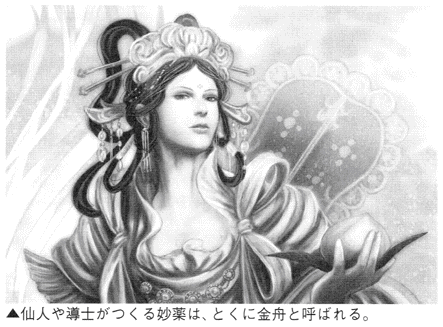
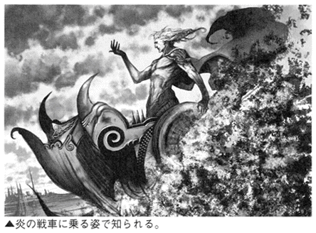
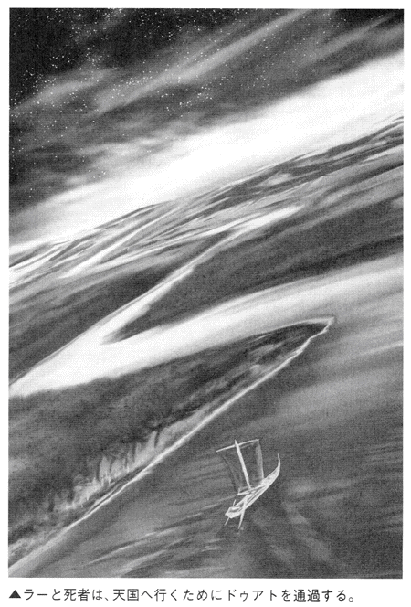

| 「天国」と「地獄」がよくわかる本 | |
| クリエイティブ・スイート | |

「天国」と「地獄」がよくわかる本
千年王国からヴァルハラ、八大地獄、タルタロスまで
一条真也 監修
クリエイティブ・スイート 編著


まえがき
「何はともあれ、天国と地獄を信じよ！」
あなたは、あの世を信じるだろうか。あの世を信じること、つまり「来世信仰」は、あらゆる時代や民族や文化を通じて、人類史上絶えることなく続いてきた。
たとえば古代エジプトの『死者の書』、あるいはチベット仏教の教典である『チベット死者の書』のなかには、永遠の生命に至る霊魂の旅がまるで観光ガイドブックのように克明に描かれている。
また、『聖書』や『コーラン』に代表される宗教書の多くは死後の世界について述べているし、世界各地の葬儀も基本的に来世の存在を前提として行なわれている。日本でも、月、山、海、それに仏教の極楽がミックスされて独自の「あの世」のイメージが形づくられてきた。
人間は必ず死ぬ。では、人間は死ぬとどうなるのか。死後、どんな世界に行くのか。これは素朴にして、人間にとって最も根本的な問題であるといえよう。人類の文明が誕生して以来、わたしたちの先祖はその叡知の多くを傾けて、このテーマに取り組んできた。
それでも、現在に至るまで人間は死に続けている。死の正体もよくわかっていない。実際に死を体験することは一度しかできないわけだから、人間にとって死が永遠の謎であることは当然だろう。まさに死こそは人類最大のミステリーなのである。
そのミステリーに極限まで迫った人物に、エマヌエル・スウェデンボルグがいる。18 世紀のスウェーデンに生まれた有名な霊能力者である彼は、主著『霊界著述』をはじめとした多くの著作や霊界通信において、死後の世界をいくつかの界層に分けている。そのほとんどは、わたしたちの住む地上界を含めて七つの界層に分類しており、それぞれの界層についての描写もほぼ同じであるといえる。
そして、この世に近い界層ほど、この世に似ていることがわかる。すなわち、地面があり、山があり、谷があり、小川が流れ、草木が茂り、花が咲き、動物が遊び、地上と変わらない人間の家々があるのだ。そして、この世界に人間の霊魂が入ると、そこは望みのままの理想世界と化す。衣服、食事、住居、その他、生前に憧れていた物のすべてを手に入れることができるというのだ。このようなスウェデンボルグの霊界観は、故・丹波哲郎氏をはじめ、霊界の実相を求めてやまない世界中の心霊研究家に大きな影響を与えてきた。
世界中の宗教においても、最初は身近な霊界観をもっていた。アフリカなどの原始宗教でも、この世とあの世はほとんど変わらない世界だ。しかし、宗教が国家宗教や世界宗教へと成長していくにつれ、あの世の姿も変化していく。おそらく哲学やほかの宗教の影響を受けるのだろう。
ある意味で、宗教が成長するにつれて、身近だった死後の世界がファンタジックな世界へと「物語化」していくのである。まさに、それが天国と地獄であるといえよう。本書には、これまで人類が想像してきたありとあらゆる天国と地獄が紹介されている。それは、コミックやアニメやゲームに登場するような幻想世界のカタログでもある。でも、それだけではない。世界各地に伝わる神話や伝承などに基づいて、多くの人々の心の死生観を浮き彫りにする本、それが本書だ。
今、天国や地獄を信じる人は少なくなった。しかし、昔の人々は信じていた。心の底から天国に憧れ、震えあがるほど地獄を恐れていた。天国や地獄を信じなくなった結果、人間の心は自由になり、社会はよくなっただろうか。
いや、反対に人間の心の闇は大きくなり、社会は悪くなったのではないか。さまざまな無差別殺傷など凶悪犯罪はさらに増加し、より残虐になっている。まさに、「ありえないことなど、ありえない」といった状況である。
未曾有の不況による大貧困社会を迎えつつある現代日本。日本人の心はますます荒廃するばかりだ。「よいことをすれば天国や極楽に行ける」「悪いことをすれば地獄に堕ちる」という人生観が、わたしたちにはふたたび必要なのかもしれない。
何はともあれ、天国と地獄を信じよ！
そして、限りある生を精一杯に人間らしく生きようではないか！
一条真也
「天国」と「地獄」がよくわかる本 目次
終末の前に訪れる平和と調和の地上世界
天国に身を置く、神の使いの四大頭
「配偶者のある国」という意味をもつ場所
原初の人間アダムとイヴが住んでいた「地上の楽園」
神がつくり出し、楽園に住まわせた最初の人間
天界に用意されている神の都市国家
宇宙の外側に位置する光り輝く世界
コラム 映画のなかの天国
ハデスが治める冥界の、さらに奥にある神秘的な場所
ハデスに仕える地獄の門番と三つ首をもつ番犬
北欧神話における戦死者のための天国
優秀な戦士をかき集める北欧の最高神
アーサー王も訪れた妖精が住む異界の島
聖剣エクスカリバーをもつ、ヨーロッパの英傑
コラム 映画のなかの天国
アメリカ先住民たちの死後の世界
アメリカ先住民族モハベ族の神聖な山
聖人が最後の審判を待つ「歌の家」
悪を駆逐して善を貫く、万能神と光の精霊
処女の妻が与えられる、男性にとっての天国
現世の苦労から解放されるが、享楽のない地下の冥界
平和で牧歌的なエジプトの天国
ナイルより生まれ出た、万物の王にして救世主
天界と地上を結ぶ、仙人の住まう山
恐ろしい怪物から美貌の仙女に
阿弥陀仏が主宰する西方浄土
天子が降臨し、帰っていく日本神話の天国
破壊神シヴァが瞑想する、「水晶の天国」
ガンジスの源流という意の最高神
神々が暮らす、仏教世界の中心的楽園
コラム 映画のなかの天国
「ハワイ」の語源にもなった南国の楽園
神がつくった６番目の創造物。地下にある天国
神が舞い降りるアフリカの霊峰
炎と氷と蛆虫に苦しめられる魂の牢獄
地獄の最下層に封印されし魔王
深淵そのものであり、奈落の王でもある魔神
天国でも地獄でもない、冥府の中間地帯
選ばれし人間・ロトの伝説に現われる悪魔
生前の罪を炎で浄化する、魂の修練の場
地上の現実世界こそが絶望の地と考えた神秘思想
コラム 映画のなかの地獄
神々に懲罰を与える、無限の暗黒空間
嫌々ながら冥界を支配した神々のナンバースリー
オーディンのヴァルハラに迎えられない魂の行き場所
大蛇ヨルムンガンドや白狼フェンリルの父親と女王
ケルト神話に登場する地の底の異界
古代メソポタミア文明の冥界
仲むつまじく冥界を支配する女王と王
山の頂にある地獄の入り口
アイルランドに実在するとされる冥界
古代マヤ文明に伝わる死後の世界
地獄最下層で、最終的に魂の救済がなされる地獄
アフラ・マズダーの創造物を破壊し尽くす暗黒神
天国へ行く前に通る試練の冥界
エジプトにおける最強最悪の死神
唯一神アッラーの罰は、逃れられない炎
コラム 映画のなかの地獄
日本人になじみ深い、三途の川のほとり、地獄の入口
出雲地方に伝説が残る、日本の冥界の入り口
共同作業で国をつくった、日本初の夫婦の行く末
古代中国の死後の魂の置き場所
灼熱の炎に包まれ、永遠の熱ぜめにあう、広大な地獄
冥界に君臨する、第五の裁判官
巨人の像で世界を表わし、下半身が地獄
パプア島に伝わる、多種多様の地獄観
太平洋の熱帯地域に伝わる、魂が消滅する場所
偉大なる暗黒の女神の女陰に忍び込む娘
ヨーロッパ、アメリカ世界における〝十地十色〟の天国観
キリスト教が広く伝わる欧米諸国。それらの楽園と、伝播以前に各地で信仰されていた楽園を比べると、過去の風俗が垣間見える。
＊「最後の審判」から多様に分岐する死後の楽園
現在、ヨーロッパ世界に広く浸透しているキリスト教。その天国観は、今もなお変化し続けているため、一言でそれがどのようなものかはいい難い。
キリスト教が誕生する以前のユダヤ教では、死者は善人悪人に関係なく、全員がシェオール という冥界に行くとされていた。
それが変化し始めたのが、紀元前６世紀ごろに新バビロニアがエルサレムを破壊して、ユダヤ人たちをバビロンへ連行した、いわゆる「バビロン捕囚」からである。そのころのユダヤ人たちは、メシア（救世主）の到来を強く待ち望むようになっていた。神に仕えた敬 虔 な信者たちは、不幸な死を遂げたとしても、いずれ現われるメシアによって救われると信じていたのである。このようなユダヤ教の一派から生まれたのがキリスト教。キリスト教徒の聖典である『新約聖書』の「ヨハネの黙示録」には、「最後の審判」という概念が登場する。
最後の審判とは、世界の終わりにイエス・キリストが再臨して、あらゆる死者を蘇 らせたのち、天国行きと地獄行きに分けるというものだ。ここでいう天国というものは、明確な定義があるわけではなく、のちの神学者たちによってさまざまな解釈がもたらされた。かつて最初の人間が追放されたエデンの園 のような庭園型の楽園とする説や、外敵に侵されることがない天上のエルサレム のような都市型の楽園とする説、さらにはダンテが『神曲』のなかで表わした至高天 のような宇宙に求める説など、多岐に渡る。いずれにしても、そこは飲み食いにも困らず、神と共に永遠の幸福にひたれる場所という基本概念は変わらない。
＊人間の願望が浮き彫りにされた各地の理想郷
死後の安息の地である天国は、一般的に善人がたどり着ける場所と考えられているが、これには少々誤解がある。たとえばキリスト教徒が信じている天国は、敬虔な信者のみに約束された場所であり、善行を積んだ者なら誰でもたどり着けるというわけではない。このように、天国とは信仰される場所によって、その概念や到達条件も大きく違う。
西方世界には、キリスト教が伝 播 する前からも、各地でそれぞれの天国観があった。それらは人間の願望を描いたものであるがゆえに、その土地の風俗や信仰が色濃く表われている。
北欧神話が信仰されていた土地では、農作物の取れない極寒の地であったために、他国を攻めて食料を強奪するという習慣があった。そのため、彼らの信じる天国のヴァルハラ は、戦闘で亡くなった勇敢な者だけがたどり着ける場所とされていた。そこでは戦闘種族らしく、天国でも仲間たちと共に、世界の終わりまで訓練を積むことができるという。
地中海付近で発展し、多くの英雄を生み出したギリシア神話における天国は、広大な海の果てにあるエリュシオンの野 といわれ、神に認められた英雄だけがたどり着くことができるとされた。
本章では、キリスト教におけるさまざまな天国の概念だけでなく、かつてヨーロッパ世界やアメリカで信じられていた天国を紹介しているので、その土地の風俗や信仰を再確認していただきたい。
Heaven
終末の前に訪れる平和と調和の地上世界
千年王国
◇キリストが治める、悪魔サタンのいない最も身近な理想郷
多くの宗教には、世界の終わりを説いた終末論が存在する。ユダヤ教、キリスト教、イスラム教などに見られる「最後の審判」などがその例だ。ここで紹介する千年王国とは、キリスト教の終末論のひとつであり、世界が終わる前に地上に現われるといわれる天国である。『新約聖書』の「ヨハネの黙示録」や、そのほかの黙示文書のなかに登場するこの思想は、最後の審判の後、神の楽園（エデンの園 とされる場合もある。）と地獄が世に現われる１０００年前に、救世主メシア（キリスト）が来臨して、一時的に平和と調和の世界が誕生する、というものである。その世界を支配するのは、キリストであり、殉教ののち、復活させられた敬 虔 な信者たちである。
そんな千年王国では、天使が民衆の心を惑わすとされている悪魔サタンを、底なしの淵に１０００年間封印するため、地上に悪がはびこることはない。地上には、死から復活した信者たちと、キリストだけが残る。地上そのままの形で訪れる１０００年間の天国は、地上の幸福を享受できないまま殉教した信者からすれば、まさに理想的な環境といえるだろう。敵はいないし、ぶどう酒や美味な食事も味わえる。女性も多産となり、かつ不老不死となる。
千年王国の期間が過ぎると、サタンは解き放たれてキリストによる最後の審判が行なわれる。そうして地上世界に幕が降ろされたのち、信者たちは神の国へと旅立つこととなる。神の国は、世界の終末のあとに天から現われる天国であり、地上とはまったくの別物である。そこでは肉体はあるが霊的な存在となり、なおかつ地上のような俗世的な活動はできないのではないかと考えられた。
千年王国は神の国が訪れる前段階にあって真の天国ではないが、社会で苦しめられていたキリスト教徒にとって、地上で実現される千年王国は神の国以上にあこがれの対象となっていた。
◇爆発的に広まった千年王国思想の終末
このような千年王国思想は、１世紀から２世紀の間に爆発的に広まっていった。
なぜなら当時のキリスト教徒たちは、皇帝ネロに始まるローマ帝国の迫害によって、地上の幸福を享受できないまま殉教してしまうのではないかと考えていたからだ。彼らはいつ始まってもおかしくない千年王国の到来を激しく切望した。その結果、キリスト教徒以外にも千年王国の思想、ひいてはキリスト教が広まる。こうして、４世紀末ごろにはついにローマ帝国も国教として認めることになったのだ。
しかし、やがてこの思想は、教会から否定されることになる。ローマで圧倒的な支配力をもつようになったキリスト教会の組織からすれば、いつ世界の終わりが到来してもおかしくないという思想そのものが危険視されたからだ。しかし、単純に全否定するわけにもいかないので、千年王国に対するさまざまな解釈がなされるようになった。
ローマ帝国末期の神学者アウグスティヌスは、『神の国』という著書で、「千年王国はキリスト教の発生とともに始まっており、教会のなかに霊的なものとして実現されている。まだ不完全だが、世界の終末のときに完全なものとなる」と説いた。この説は教会に取り入れられ、千年王国思想は閉ざされてしまった。ちなみにミレニアムという言葉は、もともと千年王国のことを指していたのだが、ここから１０００年単位の区切りのことをそう呼ぶようになった。
Heaven
天国に身を置く、神の使いの四大頭
ミカエル、ガブリエル、ラファエル、ウリエル
◇天使の代表的存在、四大天使
ユダヤ教、キリスト教、イスラム教といった預言者アブラハムの伝統を受け継ぐ一神教の宗教には、天使という存在が登場する。天使は、その名前のとおり神の使いであり、主として人と神との間の橋渡しをする役割を担っている。そんな天使たちは、神と一緒に暮らしていると考えられているため、天国に身を置いている。それゆえに、ユダヤ教やキリスト教、イスラム教といった宗教での天国において、敬 虔 な信者たちは天使と共に神に仕え、神に見守られながら至福の暮らしを送ることができるのである。
天国に身を置く天使たちの総数は、書物によってまちまちだが、一般的には、人間と同じくらい、あるいはすべての物体よりも多いとされる。そのなかでも、最も重要とされているのが、ここで紹介するミカエル、ガブリエル、ラファエル、ウリエルといった天使たちだ。彼らは天使のなかでも、四大天使というカテゴリーで分けられており、通常の天使と比べて極めて特別な存在とされている。また、ユダヤ教とキリスト教の四大天使は、前述の４人であるのに対して、イスラム教ではミカエルとガブリエルの２人だけが共通している。
◇悪魔サタンと戦ったミカエルを筆頭とした個性豊かな天使たち
まずミカエルだが、その名前はガブリエルと同じく、はっきりと『旧約聖書』に明記されている。ミカエルは天使たちのリーダーの役割をもっており、天使の軍勢を率いてルシファー と戦ったことでも有名である。そんなミカエルは、天使のなかでもとくに愛されており、最後の審判のあとに空から降りてくる天国、天上のエルサレム へ信者たちの魂を導くという仕事ももっている。また、エデンの園 の入り口を固める守護者ともされている。
ガブリエルは、婚約中にもかかわらず、神の子をその腹に宿した聖母マリアに、受胎告知を行ったことで有名な天使である。さらに預言者モーセが死んだとき、彼を天国へ誘 ったのもガブリエルとされている。慈愛に満ちたイメージがただよう彼は、宗教画でも女性として描かれることが多い。
より人間的で、快活なイメージを受けるのがラファエルである。やはりエデンの園に住んでいる彼は、そこにある知恵の木と対 をなす生命の木を守る役割を担っていると、ミルトンの『失楽園』で描かれている。アダムとイヴ がエデンの園を追放される前、彼らと一緒に緑豊かな楽園で食卓を囲んで食事をとっているのだ。天国では人間が天使と一緒に暮らすことができるという象徴だろう。
旧約聖書の外典『エノク書』において、エノクを天国へ連れていき、そこを案内したのがウリエルである。その名は「神の光」または「神の炎」という意味をもち、手には炎が携えられている。そんな彼は、地獄を取り仕切る役目をもっており、罪人に対しては、その炎で容赦のない罰を与える。また、炎の剣を掲げてエデンの園を守る門番とも、最後の審判の際に蘇 った人間全員を裁判の席に座らせる役職であるともされている。穏やかで神 々 しいという天使のイメージとはとてもかけ離れた、強面 で厳格な軍人を彷彿させる存在である。
このように、天国に身を置く天使といえども多種多様。そんな頼りがいのある彼らがいるからこそ、天国では安息の暮らしが手に入るというわけだ。
Heaven
「配偶者のある国」という意味をもつ場所
ベウラの地
◇婚礼の祝宴は楽園のイメージ。神に祝福された天国
キリスト教における数多くの儀式や習慣のなかでも、とくに婚礼の際に行なわれる祝宴は神聖視されており、それがそのまま天国のイメージと結びつけられていた。イエスもキリスト教徒たちに天国について教えるとき、婚礼の祝宴を象徴として引き合いに出すことがあった。婚礼の祝宴は、身内が一堂に会して、いつまでも楽しく談笑しながら喜びを分かち合う楽園を彷彿させるもので、天国に行けばこのような祝宴が永遠に続く、と教えていたのである。
ベウラの地という言葉は、旧約聖書の『イザヤ書』からきたもので、「配偶者のある国」という意味合いがある。キリスト教においては、配偶者のある者＝神聖な祝宴に参加した幸福な者、というイメージがあったようだ。
『イザヤ書』には、「花 婿 が花嫁を喜びとされるように、主はあなたを喜びとされる」と記されている。つまり、花嫁が結婚によって得られる財産や土地と同じように、天国はイエスの言葉を信じるすべての人々に与えられる財産であるという考え方である。その与えられるという天国こそがベウラの地なのだ。
このベウラの地という天国は、17 世紀ごろから大きく広まっていき、西洋文学などにも登場するようになった。イギリスの作家ジョン・バニヤンの『天 路 歴 程 』で描かれているベウラの地は、小さな美しい村である。そこは生と死の間、天国との境界に存在する神秘の村で、つねに神から祝福されており、昼も夜も太陽が輝いている。空気も非常に澄んでいるため、天上にある新しいエルサレム がよく見える。天国へ行く者たちは、この祝福された村で休息を取る。また、ここには天使もよく訪れて、楽しげに人間たちと交流するとされている。敬虔な信者たちは、この地でキリストの教えに従って生きることを誓うのだった。
このような場所は、キリスト教の楽園の代名詞として多くの賛美歌のなかにも登場している。近年では、過去ほどベウラの地という言葉自体が有名ではなくなってきたが、一部では、まだ使われているそうだ。
Heaven
原初の人間アダムとイヴが住んでいた「地上の楽園」
エデンの園
◇楽園の管理者たる存在が、原罪を犯して追放される
旧約聖書の『創世記』に登場するエデンの園は、宗教になじみの薄い人でも耳にしたことがあるほど有名な楽園だろう。
この地の概念は、イエスが生まれる前から存在しており、神が最初につくったとされる人間の男女、アダムとイヴ が住んでいた場所である。具体的な位置は示されておらず、中東のアルメニア、もしくはイスラエルの東方にあったともいわれている。そのためエデンの園は、「地上の楽園」と呼ばれることもある。
エデンの園には、一年中食用果実が実る木々が群生しており、清らかな川が静かな泉にそそがれている。それらの風景は永遠に変わることがない。
アダムとイヴは、その楽園の管理者として神につくられたのだ。その際、神からはエデンの園で自由に過ごしてよいといわれたのだが、園の中心に植えられた知恵の木の実だけは、けっして食してはならないと、とがめられていた。
なんの不自由もなく暮らしていたアダムとイヴだが、ある日、誘惑に負けて木の実を口にしてしまう。こうして禁を破った２人は、神の怒りに触れてエデンの園から追い出されることになった。エデンの園を追われた人間は、それ以来、知恵の木の実を食したことで身につけてしまった自我や自立心に悩まされることになり、食べ物や飲み物も自分で確保しなければならなくなったのだ。
原初の人間が神の禁を犯したこの罪は、キリスト教において「原罪」と呼ばれるものであり、すべての人間が生まれながらにもっているものとされている。
◇死者も蘇り、永遠の生命を与えられる
さて、この地上の楽園たるエデンの園だが、ユダヤ教徒のなかでは天国的な扱いにされている。「天国的な扱い」とはいっても、ユダヤ教にはほかの宗教に見られるような、死後に行き着く天国は存在しない。ユダヤ教では死んだ人間は、善人悪人に関係なく、全員がシェオール という冥界に行くとされているからだ。
しかし後年になるにつれて、ユダヤ教のラビ（指導者）は、死んだ者に対する賞罰体系の新たな考えを広め始めた。そうして、敬 虔 な信者は神に許され、エデンの園にふたたび戻ることができる、という概念が具体化されたのである。
エデンの園に戻ることができるのは、最後の審判の後である。
最後の審判とは、世界の終わりに神によって執 り行なわれるという裁判だ。そこでは、いったんあらゆる死者が蘇り、永遠の生命を与えられるか、ふたたび死者の国へ落とされるかを決定される。永遠の命を与えられるのは、善行を重ねてきた信者のみ。永遠の命を与えられた人間は、そのときふたたび地上に姿を現わすとされているエデンの園に住まうことが許されるのである。
そこでは、目が見えなかったものは視力を取り戻し、耳が聞こえなかったものは聴力を取り戻すことができる。また、神が原初の人間をつくり出して住まわせた、食べ物や水にも困らない場所である。ここに行き着くことは、神のもとに還ることを意味しており、民衆の間で支持される考えとなった。
こうして清らかな大自然を彷彿とさせるエデンの園は、天国の代名詞ともなった。のちに天上のエルサレム のような、まったく正反対の性質をもつ天国の概念が生まれたとしても、それはエデンの園のような大自然の楽園のなかにあるものと考えられたのだ。
Heaven
神がつくり出し、楽園に住まわせた最初の人間
アダムとイヴ
◇神の怒りを買った原初の人間が、罪をなすりつけ合う!?
旧約聖書の『創世記』には、神が天地を創造した６日目に土（アダマ）からつくった最初の人類こそが男性のアダムであり、ひとりでは生きにくいだろうと判断して、アダムのあばらからつくったのが女性のイヴであるとされている。２人はエデンの園 の管理人としての役割を与えられる。神は２人に対して、エデンの園にある知恵の木の実をけっして食してはならないと定めたのだが、ー匹の蛇がイヴに「知恵の木の実を食べると神に近づける知恵が手に入る」と誘惑する。イヴは誘惑に負けて、つい知恵の木の実を口にするのだが、その途端、彼女に知恵が芽生え、それまで裸でいたことが突然恥ずかしくなった。成長した気分になったイヴは、アダムにもその実を食べることを勧めて、食べさせてしまう。それを知った神は２人を問いつめた。
アダムは神を恐れ、木の実を食べたのはイヴに勧められたからだと責任を押しつける。イヴもイヴで、蛇にそそのかされたと責任転嫁をする。２人が知恵を身につけてしまったからである。これによって、人間は、怨 み、妬 み、憎むという生まれたときからもっている原罪を背負うこととなる。このままでは生命の木の実まで食されると考えた神は、２人を楽園から追放し、入り口に炎の剣をもつケルビムという階級の天使を置いた。それにより、人間は自由にエデンの園へ出入りすることができなくなったとされている。ちなみに、イヴを誘惑した蛇の正体は、サタン ともいわれる。
Heaven
天界に用意されている神の都市国家
天上のエルサレム（新しいエルサレム）
◇その都は世界の終末に空から降りてくる
キリスト教における天国の概念は非常に多種多様で、現在でも議論され続けている。共通しているのは最後の審判が訪れた後、選ばれた者だけが天国へ行くことができるというもので、天上のエルサレムも、そんな天国観のひとつである。
『新約聖書』に見られる「ヨハネの黙示録」で、聖ヨハネはこのような預言を残している。「最初の天と最初の地は去って行き、もはや海もなくなった。さらに私は、聖なる都、新しいエルサレムが天から下ってくるのを見た」。その新しいエルサレムには、神と、神の民となった人間が暮らすという。エルサレムとは、いわずと知れたキリスト教やユダヤ教にとっての聖地とされる都市である。ここで天から降りてくるエルサレムとは、天上世界に用意されている都市であり、最後の審判で地上世界が終末を迎えた後に地上に現われる神の都市なのだ。
これはエデンの園 のように、澄んだ川が流れて緑豊かな草花が咲き乱れるという、すばらしい自然を描いた天国とは大きくかけ離れた概念である。
聖ヨハネが伝える天上のエルサレムは、都会的な天国であり、碧 玉 で築かれた城壁で囲まれている。12 の門がある大きく高い城壁の内側にある都の大きさは、長さも幅も、高さも１万２０００スタディオンであるとした。１スタディオンは、だいたい１８０メートルなので、だいたい４０００平方キロメートルの広さがある。つまり、東京都の約２倍近くの都というわけだ。城壁を支える土台石もまた12 種類存在し、それぞれが宝石で飾られている。城壁の内側の都には、輝く塔や宝石が散りばめられた邸宅などがあり、人々はそこで神と共に暮らすことができる。
◇城壁に囲まれた都市型天国にはせる信者の思い
このような天国が生まれたのは、人間の想像力が決め手だ。「ヨハネの黙示録」にある「新しいエルサレムが天から下ってくるのを見た」という一文が、人々の心に火をつけたのだ。それは一体どのような都なのだろう、と聖職者や評論家たちの間で議論がなされるようになった。そうして、天国とは光あふれる場所というイメージから、この天上のエルサレムも宝石などで輝いていると結びつけたのだろう。
この時代のヨーロッパでは、都市開発が進められており、都市こそが外敵から自分たちを保護してくれるものであり、安全な生活を保障してくれるものだと考えられていた。古代イスラエルの祈りのひとつには、「エルサレムの都の城壁が破られないように」というものもあった。
天上のエルサレムでは、都はどんな敵も登ってこられないような崖の上にあるとされ、城壁も絶対に破れないほど堅く、登ることもできないとされている。さらに出入り口である12 の門は、天使によって警備されている。おもしろいのは、これらの門は地上の都市のように、外の者を閉め出すために設計されているのではなく、内側に迎え入れるように設計されているところである。
これは天上のエルサレムの設計者であり建設者である神が、イスラエルの12 部族の復興を望んでいるということを暗示している。イスラエルの民にとって、都とはエルサレムだけであり、そこに永住できることこそが彼らの望みだったのだ。そうした考えから生まれた天国こそが、天上のエルサレムなのである。
長い年月を経るうちに、天国とは清らかな大自然をイメージさせるエデンの園のような楽園のなかに、こうした天の都があると考えられるようになった。
Heaven
宇宙の外側に位置する光り輝く世界
至高天
◇神 々 しい光を放つ天国は、天動説から考え出された
キリスト教徒たちは、天国についてさまざまな議論をくり返してきたが、そのなかには天動説を用いて、その在 り処 を示すものがあった。それが、「幸福な人々と天使の住み処」という意味のある至高天（エンピレオ）である。キリスト教において、天国の上層部に位置するとされた。
天動説を用いたその説では、地球の周囲には天球という八つの固い殻が存在しており、それぞれの天球は、月や太陽、水星や土星などを乗せて回転している。そして恒星が乗せられている一番外側の天球のさらに外側に至高天はあると考えられていた。輝く恒星は、天球に空いた穴から至高天の光が漏れているものだという。
至高天は真っ暗闇の地獄とは正反対で、真っ白で純粋な光に満ちあふれている。この場所には、最後の審判で救われた者だけが暮らすことができるとされた。そこでは身体が栄光の光に包まれ、神の光を反射して太陽の７倍も明るく輝くという。
この天国の描写は、ダンテの『神曲』の「天国編」において描かれている。九つの天使の輪（天球）を越えてたどり着いたその場所は、強烈な閃光におおわれており、花咲く岸辺の間には光の川が流れている。川からは光が飛び出しており、それらは岸の花々に見えた天使の身体にそそがれている。そして至高天そのものも、巨大な白いバラの形をしているというのだ。ちなみに至高天のさらに外側にも世界は存在しており、そこは神以外誰も立入れない究極の天国とされた。
コラム
映画のなかの天国
天国から来たチャンピオン
DATA
監督：バック・ヘンリー、
ウォーレン・ベイティ
主演：ウォーレン・ベイティ
天上のエルサレムに近い天国観
１９７９年に公開された、『天国から来たチャンピオン』。監督のウオーレン・ベイティが主役を張る、コミカルな映画だ。
アメリカン・フットボールチームのロサンゼルス・ラムズに所属するジョーは、ある日、自転車事故にあってしまう。彼が意識を取り戻すと、そこは空に浮かぶ雲の上。ジョーは天使に導かれ、天国へと向かっていく。
しかし、ここで驚きの事実が発覚する。天使長がジョーの寿命を調べると、なんと50 年も残っていたのだ。すでにジョーの肉体は火葬されており、しばらくの間もうすぐ亡くなる人間の体を借りることになる......。
というのが、序盤のおおまかなあらすじである。この後のストーリーは、映画をご覧いただきたい。
人間の寿命を司るのは、あの世にいる存在!?
ところで、この映画でもいえることだが、神や天使は人間の寿命を知っている、あるいは操ることができるようだ。人類の心の訓戒である「十戒」を大成したユダヤ教の預言者モーセは、神に自身の寿命を告げさせている。つまり、神はモーセの寿命を知っていたことになる。ちなみに、モーセの武勇談として、自身の寿命を知らせにきた天使を撃退してしまっているというものがある。撃退された天使の名はサマエル。のちに、巨悪の代名詞となる天使なのだが、このときはモーセにやられ放題であった。
中国では、仙人が、人間の寿命を司る存在として描かれることが多いようだ。有名なのが「白仙人」と「黒仙人」。白仙人は生を司り、黒仙人は死を司るといわれている。
――この世のどこかに、自分の寿命を知る存在がいるとすれば、あなたは寿命を知りたいと思うだろうか。
Heaven
ハデスが治める冥界の、さらに奥にある神秘的な場所
エリュシオンの野と至福者の島
◇英雄アキレウスも行けない、ギリシア神話で最も特別な天国
エリュシオンの野は、ギリシア神話において死後の世界に存在する場所で、とくに神々から愛された偉大な人物や英雄のみが訪れることを許されている。
また至福者の島も同様で、死後選ばれた英雄のみがたどり着ける天国である。
この２つの天国は、どちらもギリシア神話（のちにローマ神話）に登場するものである。世界を取り囲むオケアノスという海の果てに存在し、雪も大雨も降らない草花におおわれた天国。紀元前８世紀ごろのギリシアの詩人ホメロスが著書『オデュッセイア』のなかで、その天国をエリュシオンの野と呼び、同じくギリシアの詩人ヘシオドスが至福者の島と呼んだ。性質が似ていることから、この２つの天国は同一のものとされる考えもあるが、細部で微妙に異なっている。
たとえば、エリュシオンの野を統括しているのは、冥界の審判のひとりであり、クレタ王ミノスの弟であるラダマンテュスであるのに対して、至福者の島では、大神ゼウスの父であり、彼によって冥府タルタロス に投げ込まれたクロノスが治めている。エリュシオンの野は、年中オケアノスから西風の神ゼピュロスが人間に生気を与える風を吹きつけているという描写はあるものの、食料などについてはよくわかっていない。対して至福者の島では、穀物に恵まれた土地とされており、年に三度甘い果実が実る。また、エリュシオンの野は、オケアノスの果てに存在するという説以外でも、冥界の王ハデス が統括する死者の王国のはるか奥に存在するという説もある。
これらの天国は、ギリシア神話において最も特別な場所とされており、他宗教の天国とは違って、単純に善人だけが行き着ける場所というわけではない。一般的な英雄たちはそろって通常の冥界へと送られている。有名なアキレウスも例外ではない。この場所は、それほどまでに神格化された天国なのである。
◇神に認められ、楽園行きを許可されたメネラオス
たどり着けるのは、神々に愛されたごく一部の人物だけ、という天国。どれほどの人物なら神々は迎えてくれるというのか。海神プローテウスは、『オデュッセイア』のなかで、ゼウスの娘とされているヘレネの夫で、英雄アガメムノンの弟、伝説上のスパルタ王メネラオスに対して、「将来エリュシオンの野に送られる人物」と予言している。そんなメネラオスの話を簡単に紹介しよう。
メネラオスの妻であるヘレネは絶世の美女で好色、兄のアガメムノンは好戦的。メネラオスはその両者と比較すると、あまり目立たなかったが、親切な夫であり公正な王だった。ある日、トロイアの王子であるパリスに魅了されたヘレネは、娘や夫のメネラオスを捨てて、彼について行ってしまう。その後、メネラオスはパリスを一騎打ちで破り、ヘレネを取り戻した。帰り道の船旅では、嵐や怪物に苦しめられながらもしっかりと部下たちを安全に帰国させた。さらには帰国後、ヘレネを許してふたたび王妃の座に戻すのである。もちろん周囲からは、妻を寝取られながらも許してしまう愚か者と嘲笑されたが、彼はそれを気にも留めなかった。また罪人とされた甥 を世論に逆らってまでかくまったりもした。メネラオスのこうした行ないが、冥界の王ハデスの心を揺り動かし、彼の死後はエリュシオンの野に送り、先に死別したヘレネとふたたび結び合わせたといわれている。
エリュシオンの野は、このメネラオスのように神から認められた者しか立ち入ることができない。神に認められるための行ないというのは、人生をかけて善行を貫くだけではままならないということである。
Heaven
ハデスに仕える地獄の門番と三つ首をもつ番犬
カロンとケルベロス
◇地獄のモンスターと、陰険な性格の渡し守
いくつかの宗教の神話や伝承には、生きている人間が住む世界と、死んだ人間が行く世界の境目の世界が描かれている。ここで紹介するカロンとケルベロスは、ギリシア神話において、その境目に住む番人とされている。
地獄の番犬として有名なケルベロスは、ハデスが飼っている巨大な犬の怪物である。古代ギリシアの詩人ヘシオドスが記した『神統記』では、50 の首をもつとされているが、一般的に広まっている伝承や、絵画作品などで描かれる場合は三つ首である。第一の頭はタルタロスの方向を向いており、そこから死者が逃げ出さないように見張る役目をもつ。第二の頭は、生きている人間が住む世界を向いており、そこから生者が紛れ込んでこないように見張っている。そして第三の頭は、ハデスの国へ侵入しようとする者、そこから逃げ出そうとする者を威 嚇 して、未然に防ぐ役割をもつ。ケルベロスの警告を無視する相手に対しては、容赦なく、むさぼり食ってしまうといわれている。１匹の犬が、２つの出入り口を警戒し、それにあらがう者を殺して食べてしまうというのだから、ハデスにとってケルベロスは人間以上の働きをする愛らしいペットなのである。
いっぽう、カロンはというと、死後の世界と生きている人間の世界を二分している巨大な河、ステュクスの渡し守である。彼は非常に愛想が悪く、生者は絶対に舟に乗せてくれないし、相手が死者だとしても、お金をもらわなければ舟を出してくれない。お金をもっていない死者たちは、ハデスの国へ行けず、ステュクスの河岸で途方に暮れながら１００年間さまよい歩かねばならなくなる。それだけさまよったのち、カロンはようやく死者たちを舟に乗せることを承諾してくれる。
◇生きたまま冥界へ降りた天才音楽家オルペウス
このようにカロンとケルベロスがいる限り、人間は死んでからでないとハデスの国へ行くことは不可能である。
しかし、生きたままそこへ行き、無事に戻ってきた人間もいる。それが七弦の竪 琴 をつくり上げた音楽家のオルペウスである。彼が奏でる竪琴からは、聞く者の心を揺さぶるメロディーが流れ、どんなに凶暴な猛獣でもおとなしくさせることができたという。そんな天才音楽家オルペウスが冥界へ行ったのは、不慮の事故で死んでしまった愛妻のエウリュディケをハデスのもとから連れ戻すためだ。
長い冒険の末、オルペウスはとうとう冥界の入り口をふさぐ門の前までやってきた。その門には番犬であるケルベロスがおり、威 嚇 してくる。そこでオルペウスは竪琴を弾きながら、猟犬たちが勇んで狩りに出かけるさわやかな朝の歌を歌った。するとケルベロスも楽しそうに鼻を鳴らしながら、門の前にうずくまってしまった。彼の竪琴の力は、ハデスの忠実な番犬に対しても例外なく発揮されたのだ。
続いてオルペウスはステュクス河までやってきた。そこには愛想の悪い渡し守カロンがいる。生者は絶対に舟に乗せないと決めているカロンは、当然オルペウスを渡すことを拒 んだが、オルペウスは竪琴を弾きながら、カロンが忘れていた若いころの船歌を歌った。それは、太陽で輝く水面に美しい船舶が行きかう明るい河のイメージを与えるものだった。心を打たれたカロンは涙を流し、オルペウスをみずから舟に迎え入れた。こうして、彼は生きながらにして、ハデスのもとまでたどり着くことができたのである。ちなみに、結局生者の国へ戻れたのはオルペウスだけだった。いかにカロンやケルベロスら番人の心をつかんだとしても、やはり死者をハデスの国から外へ出すことは不可能ということだ。
Heaven
北欧神話における戦死者のための天国
ヴァルハラ
◇たぎる戦闘民族の血統が、極寒の地で育まれた
北欧という地域は、おもに現在のノルウェー、スウェーデン、デンマーク、アイスランドを指す。北欧神話とは文字どおり、キリスト教が伝わる以前にこのあたりで信仰されていた神々の物語なのだ。
この神話が語り継がれていた北欧の土地は、雪と氷におおわれた極寒の地なので、農作物の生産性は極めて乏しかった。それゆえに北欧に住む人々は、生きていくために周辺諸国へ攻め入って、食料や生活品を略奪するという行為をくり返してきた。いわば、生まれながらの戦闘民族なのである。彼らにとって、戦いとは生きていく上で必要不可欠なことであり、戦って死ぬことこそ名誉であると考えられてきた。そんな北欧の人々にとっての天国とは、勇敢に敵に挑んで戦死した者だけがたどり着ける場所であると考えられてきたようだ。逆に病死や老衰など、戦場以外での死は、「藁 の上の死」と呼ばれ、忌 み嫌われる対象だった。藁の上の死を迎えた者の魂は、ほかの宗教でいう地獄に相当するニヴルヘイム へ送られることとなる（戦士以外の一般人が死んだ際には、北欧神話に登場する雷神トールの館へ送られるとされている）。
では、戦いのなかで死んだ者だけが招かれる天国、ヴァルハラとはどのような場所なのか。
◇「ラグナロク」に備えて鍛えられる、魂の戦士エインヘリャル
北欧神話の世界は、三つの層に分けられる。最下層は前述の地下世界ニヴルヘイム、その上に人間が暮らすミズガルズ、そのさらに上が神々の住むアースガルズである。この三つの層には、世界樹ユグドラシルと呼ばれる巨大な大木が、地下世界から天上世界まで貫くようにそびえ立っている。
アースガルズとミズガルズの間は、ビヴロストという橋でつながっているが、この橋を渡れるのは、もちろん戦死した者だけだ。戦死者はその橋を抜けて、アースガルズへたどり着くと、主神オーディンが住む館であるヴァルハラへ誘われる。このとき、戦死者を案内してくれるのはヴァルキリーというオーディンの使いの女神たちだ。別名、「戦死者の館」とも呼ばれるヴァルハラに入ったときから、戦死した勇者たちは、「エインヘリャル」と呼ばれるようになる。
彼らは天国とされるこの館において、他宗教のような安息の日々を送るというわけではない。毎朝早朝から戦闘訓練を積まされるのである。戦死した後も戦闘訓練を命じられるなんて、どこが天国なのだ、という声が聞こえてきそうだが、前述のとおり、当時の北欧の人々は戦闘民族。戦いこそが生きがいなのだ。
北欧神話では、世界の最後に「ラグナロク」と呼ばれる、神々と巨人族の最終戦争が起こるとされている。集められたエインヘリャルたちは、その戦争の大事な戦力であり、それに備えて訓練させられているというわけだ。彼らにとっても、神々と共に戦えるのだからこれほど名誉なことはない。また、訓練の最中に死者や怪我人が出たとしても、ヴァルハラにおいては時間が経てばそれも完治する。そして、毎日のように酒宴の席が設けられ、ヴァルキリーたちにもてなされながら、仲間の戦士たちと和 気 藹 々 と酒をくみ交わすのである。ここでは、いくらでも酒の乳を出す牝 山 羊 や、何度料理されても生き返る牡 豚 がいるため、飲み食いにも困ることはない。また、ヴァルハラは60 万人以上のエインヘリャルたちが暮らすには、充分な広さがあるとされ、館内には多くの武器や鎧 が置かれているという。まさに北欧の戦士たちからすれば、理想の天国なのだ。
Heaven
優秀な戦士をかき集める北欧の最高神
オーディン
◇魔槍グングニルをもち、どん欲に知識を求める隻眼の老人
前項で紹介したヴァルハラに住む（ヴァルハラのすぐそばにある、戦死者の広間という意味のヴァラスキャールヴに住んでいるともされる）北欧神話の主神、オーディンは、「戦死者の父」の異名をもつだけあって、古代の北欧の人々から熱狂的に支持されていた。彼は戦いの神であり、生と死の神であり、魔術の神でもあった。また、目的のためなら手段を選ばない一面ももっている。
オーディンは絵画作品などで、白い髭 をはやし、つばの広い帽子をかぶり、グングニルという槍をもった隻眼の老人の姿で描かれることが多い。彼が隻眼なのも、飲む者に知恵と賢明さを与える泉の水を飲む代償として、失ったものである。このように、自分を高めるためならなんでもするという姿勢が、ほかの神々や戦士たちにとって尊敬の対象となったようだ。ちなみに片目を失ったことで、地下世界ニヴルヘイムをのぞき込めるようになったとされている。隻眼姿のオーディンは、生の世界と死の世界を同時に見据えることができる象徴というわけだ。
さらなる力を欲する彼のどん欲さは、それだけでは止まらない。刻み方によって絶大な力を発揮するという、ルーン文字の知識を得るために、オーディンは人身御供として、自分自身を捧げているのだ。つまり自殺である。生者の世界には、最高神である自分より知識のある者はいないといって、世界で一番高い樹に首をくくって、みずからの体をグングニルで突き刺したのだ。そうして、冥界への瞑想の旅を経て、とうとう魔力を秘めるルーン文字を獲得するのである。ちなみに、オーディンが首をくくった樹こそが、のちに世界樹ユグドラシル（恐るべきオーディンの馬）と名づけられるのである。
◇優秀な人間を育て、殺し、エインヘリャルとして迎える
そんなオーディンの強引さは、神々と巨人族の最終戦争「ラグナロク」の戦力として、ヴァルハラへ戦死者を集める際にも発揮されている。彼が住むヴァルハラは、神々の国アースガルズのなかでも、一番高い場所に存在する。そこからは人間世界ミズガルズが一望でき、どこでどんな戦いが起きているかを把握できるという。
「ラグナロク」は、オーディンほどの知恵や魔術をもってしても、絶対に回避することができない。そのため少しでも多くの優秀な戦士を集める必要があった。だからこそオーディンは、ミズガルズで争っている人間のなかで有望な戦士を見つけると、そばに降り立ち力を貸す。オーディンの加護を受けた戦士はどんどん成長し、立派な戦士になると同時に、オーディンのグングニルの槍によって、突き殺されてしまうのだ（あるいは、オーディンに仕える女神ヴァルキリーたちによって殺される）。こうして、無理矢理殺した戦士をヴァルハラへ連れていき、戦士エインヘリャルとして迎えることもある。あるいは、エインヘリャルとなる戦士を見つけるために、裏で糸を引いて人間同士で戦争を起こさせたりもするのだ。
当の北欧の戦士たちは、自分の身をオーディンに捧げることこそ栄誉あることだと考えていたようだ。戦争で敗色濃厚になると、木に首をくくって、槍で貫くという生けにえを捧げたりもしていた（生けにえになった者は、ヴァルハラに行けると考えていた）。また、病気などで「藁 の上の死」に至りそうであれば、せめて武器で死ねばヴァルハラへ行けると思い、家族に頼み込んで、槍でとどめを刺してもらったりすることもあったという。オーディンに仕えるということは、戦士として最も誉 れ高いことであり、死してもなお、主神のもとで戦い続けたいと願う彼らは、まさに戦士の鑑 というわけだ。
Heaven
アーサー王も訪れた妖精が住む異界の島
アヴァロン
◇「りんごの島」の異名をもつ、妖精の女王が治める場所
アヴァロンとは、アーサー王 の伝説によって世界中に広く知れ渡った天国である。もともとは、古代、中央アジアからヨーロッパへと渡ってきたケルト人たちによって生み出された異界の概念であり、とくに現在のイギリス国土の中心的な島であるグレートブリテン島に定住していたケルト人たちによって伝えられてきたものである。
それによると、アヴァロンは海の向こう側に存在しており、湖とけわしい岩に囲まれた美しい島とされている。風が一切吹かず、雨や雪も降ることがない。年中深い緑でおおわれた牧草地が広がっており、林立する樹々のなかで、とりわけ多く実っているのがりんごである。
そもそもアヴァロンという名前は、ケルト人たちの言語で「りんご」の意味があるといわれている。ヨーロッパ全体に見られる伝承として、りんごとは大地の恵みの象徴であり、大地の生命力の源である地母神の聖なる心臓で、不死のシンボルという見方もある。そんな「りんごの島」であるアヴァロンは、死んだ人間も訪れる冥界ともされた。そこでは老衰や衰弱もなく、時間の経過もない。美しい男女が住み、食べ物や酒にも困らない。さらに、なんでも再生してしまう魔法の大釜があり、死者でさえもそこに飛び込むと生き返って、みずからの意思で島から出て行くことができるといわれている。
そんな異界の島は、アーサー王の異父姉であり、妖精の女王とされるモルガンが治めているとされている。妖精の女王が治めているだけあって、島に住む住人のなかにも妖精は数多く存在する。アーサー王は、モルガンという妖精とその９人の姉妹に囲まれて暮らしているとされる。また、古い神々や精霊、小人の類いまで住んでいるとされた。
◇アヴァロン島は、実在した可能性がある？
さて、そんな神秘的なアヴァロンは、アイルランドの西端にあるゴールウェイという港町の沖にあり、７年ごとに姿を見せるといわれる。そこに船で近づこうとすれば消失してしまうというが、もちろんこれは、ただのうわさ話。中世になると有力な別の説が浮上してきた。
その説によると、アヴァロンとは、現在のイギリスの南西部にあるグラストンベリーという田舎町のことではないかというものだ。グラストンベリーは島ではなく陸続きなのだが、その周囲が沼で囲まれている。それを島とみなしたのかもしれない。さらに当時は海が陸地にまで入り込み、湖のように見えたともいわれている。
そんなグラストンベリーの修道院からは、鉛の十字架が出土した。そこには「ここアヴァロニアの島に、アーサー王が葬られる」と記されていたのだという。さらに、いくつかの出所不明の骨が見つかり、そのなかで最も大きな裂傷があるものこそが、アーサー王の遺骸だと推測したのである。
さらにアヴァロンには、かつてイエスと共に訪れた弟子のヨセフが、イギリスで最初の教会を建てたという伝説があるが、グラストンベリーでも同じ伝承が残っている。また、このあたりはウェルズ人から「りんごの島」と呼ばれるほど、りんごがよく収穫されていたという。こうしたことから、この町をアヴァロンと結びつけて考える人が多く現われた。もちろん反論や疑惑の声もたくさんある。アーサー王のものと思われた遺骸が出土した修道院による、巡礼者を多く集めるための経済的策略だったのではないかともいわれている。
Heaven
聖剣エクスカリバーをもつ、ヨーロッパの英傑
アーサー王
◇伝説の王が入手した聖剣は、冥界の湖で修復される
アーサー王とは、５世紀から６世紀ごろのイギリスで活躍したとされる伝説的な王である。その騎士道精神や、魔術的要素を含んだ冒険の数々は、西ヨーロッパにおいて知らない者はいないというほど有名な話だ。アーサー王の伝説が詳細に語られるようになったのは、イギリスにキリスト教が伝 播 してからのことなので、その物語にはキリスト教の影響が色濃く見受けられる。しかし、その節々には土着民族であるケルトの色彩も少なからず表われているのである。ケルト人にとっての冥界とされていたアヴァロンとの関連性は、その顕著たるものだ。
アーサー王の物語は、彼が伝説の聖なる剣、エクスカリバーを手に入れる過程から始まる。あるクリスマスの日、教会に一振りの剣が刺さった巨大な石がこつ然と現われた。腕に覚えのある多くの騎士や貴族がその剣を引き抜こうと試みたのだが、誰も成功しない。それを成し遂げたのは、若いころのアーサー王だ。その剣こそ、聖剣エクスカリバーであり、手にした者はイングランドの正統な王であるとされた。エクスカリバーを手に入れたアーサーは、イングランドの王となって、多くの難敵を討ち倒していった。
松明 30 本分ほどの輝きを見せて敵の目をくらませてしまう、などの神秘的な力を発揮していたエクスカリバーだが、過酷な戦いの末、ついには敵に折られて失われてしまう。そこで、アーサー王は魔術師マーリンに連れられて、ある湖のほとりへ出かける。湖面には白い腕が一本突き出ており、その手には見事に再生されたエクスカリバーが握られていたのだ。
じつはこの湖は、アヴァロンをとり囲んでいるともいわれる。エクスカリバーが再生されたのは、前項で紹介したように、アヴァロンにはなんでも再生してしまうという魔法の大釜があると信じられてきたからであろう。
◇息子モルドレッドにより討たれ、アヴァロンへ向かう王
聖剣エクスカリバーの再生後も、アーサー王は多くの戦いで武勲を挙げていく。そんな彼の物語の悲劇的クライマックスが、アヴァロンと密接に関係してくる。
ある日、アーサー王は、愛する妃 グネヴィアと、最愛の親友で円卓の騎士のひとり、ランスロットが恋愛関係にあると知り、そこから内乱に発展してしまう。その隙をねらって、息子であるモルドレッドがアーサー王に反旗を翻 す。アーサー王は、モルドレッドを討ち倒したものの、彼自身も頭蓋骨に大きな深手を負ってしまうのである。死期を悟ったアーサー王は、ランスロットと同じく円卓の騎士のひとりであるベディヴィエールに背負われて西へ向かう。たどり着いたのは、かつてエクスカリバーが再生された湖であり、水辺には１艘の小舟が停泊していた。そこには黒い頭巾を被った９人の女性が乗っていた。彼女たちの正体は、アヴァロンに住む妖精である。アーサー王は、「私をアヴァロンへ連れていってくれ」と頼み込み、彼女たちと共に小舟に乗って、静かに岸を離れていくのだった。
これがアーサー王の伝説のクライマックスである。アーサー王はアヴァロンで傷を癒し、国難が訪れたとき、ふたたび復活して戻ってくると伝えられている。アヴァロンにたどり着いた死者は、自由に生き返って外の世界へ戻っていくことができる、というケルト人の信仰が、そのままいかされているというわけだ。
キリスト教徒にとって、ケルト人の信仰は異教であり、排除すべき対象に当たるのだが、アヴァロンという冥界を「アーサー王が傷を癒すために赴 いた島」としたことで、これらの要素を容認できたのであろう。
コラム
映画のなかの天国
天国への階段
DATA
監督：マイケル・パウエル
主演：デビット・ニーブン
あらゆる人種が集う天国での裁判物語
第二次世界大戦中、英国空軍パイロットのピーター（デビット・ニーブン）は、爆撃を受けて死亡する予定だった。しかし、彼は天国の使者の手違いによって一命をとりとめる。そのときひとりの女性と予定されていなかった恋に落ちてしまう。使者がピーターのもとを訪れて天国へ案内しようとするのだが、愛する人を得た彼は「そちらの手違いのせいだ」と天国行きに猛反対。このことから、ピーターは生きながらにして、生死をかけた天国での裁判を受けることになる......。
この映画は、『赤い靴』『ホフマン物語』など歴史に残る名作を手がけたマイケル・パウエル監督の作品群のなかでも、最も人気のあるものではないだろうか。１９４６年に製作された本作は、モノクロ映画に変わってカラー映画が台頭し始めたころの作品である。現世はコントラストの強い総天然色で表現されているのに対して、天国はモノクロ映像。天国の使者を勤めるのは、フランス革命で死亡した貴族なのだが、彼が服の襟につけた一輪のバラが、天国から現世へ移動する際にモノクロから深紅へゆっくりとディゾルブするのも見物である。
この作品で描かれている天国は、国籍や人種に関係なく死んだ人間が一堂に介する場所である。
天国の受付には、人間ひとりひとりの膨大なファイル群があり、そこへ至る道は宇宙の果てまで続くかのような広く長い階段。歩く必要はなく、階段そのものが自動で動く。両脇には各国の偉人たちの石像が建てられている。ピーターは天国で生死をかけた裁判に臨むのだが、そこで弁護人にプラトンやリンカーンといった歴史上の人物を選べるというのもおもしろい。物語後半で彼は、死んだ友人の医師を弁護士として推薦する。そのときのやりとりが、本作のテーマにもつながっている。
「私は弁護の素人だ。切り札は良識しかないがそれでもいいのか？」
「あの世でもこの世でも一番貴重なものだ」
Heaven
アメリカ先住民たちの死後の世界
日没の国
◇死者なら誰でもたどり着ける狩猟を楽しむ国
アメリカ大陸にはイタリアの商人コロンブスがその地へ到達する以前から、多くの先住民族たちが住んでいた。彼らは独特の文化、社会形態をもっており、それは部族によって異なる部分も多いのだが、大半の部族が太陽と共に起床して、狩りや栽培をしながらその日の糧 を得て、日没と共に眠るという生活を送っていた。
ここで紹介する日没の国は、そんな先住民族たちの間に伝わる死後の世界であり、太陽が沈む西の地平線の彼方にあると信じられていたので、そう呼ばれている。この天国は、ほかの宗教でよく見受けられるように、選ばれた者だけが入ることができるというわけではなく、死んだ人間は誰でも行き着くことができるとされている場所である。そこは狩猟の対象となる獲物が豊富で、清らかな川とたわわに実る果樹園があるとても住みやすい気候の楽園である。そこに住むことができる人間は、全員が平等で争いも悲しみもないとされている。ただ、生きている人間が行ったとしても、まったく見えないようだ。先住民族のひとつであるセラーノ族には、生きながらにして、日没の国へと行った人間の話が伝えられている。
美しい妻を亡くした男が、妻を火葬にした焼き場の前でたたずんでいると、大きな焼かすがひらひらと宙を舞った。それは次第に妻の姿に見え始め、男はその焼かすが飛んでいくあとを追った。そうして、男は死者の国へと足を踏み入れることができたのである。そこでは、先に死んだ妻の家族たちがおり、男は生きたまま彼らと生活することになる。
が、男は死者が口にする食事を食べることができず、特別に別のものをつくってもらわなければならなかった。さらに、日中はそこにあるすべてのものが何も見えない。死者たちは猟に出かけるため、男もそれについていくのだが、男だけが獲物を見ることができなかった。やがて、哀れに思った死者たちが、死んだ妻とまだ生きている男の２人を生者の国へ戻れるように手配してくれるのだが、ここで男は「３日間、妻に触れてはならない」といわれる。結局、その禁を破ってしまい、妻とは完全に離ればなれになってしまう、という物語だ。これに似た類いの話は世界中の神話群で見られるが、やはり死んだ人間と一緒になることは不可能なのだ。
Heaven
アメリカ先住民族モハベ族の神聖な山
ホワイト山脈
◇娯楽に困らない、山のなかにある天国
アメリカには独自の宗教観をもつ多くの先住民族が存在していると述べたが、そのなかでも特徴的な死後の世界観をもっているのが、コロラド川流域に住むユマ系部族のなかの一派で、最も数が多く、争い好きな部族として有名なモハベ族である。
モハベ族は、争い好きというだけあって、たくましく勇敢で筋骨隆々。トウモロコシやカボチャ、豆やメロンなどを栽培しながら狩りや漁を行なっていた古い部族である。家族をとても大切にするモハベ族は、身内が死ぬと、その家族や仲間たちが死んだ人間の体に色を塗ったり、入れ墨をほったりした後に、部族の先祖（先に死んだ者たち）に死んだ者の面倒を見てもらうように祈願しながら火葬するという特別な葬儀を行なっていた。こうすることで、死んでしまった人間の魂は現世のしがらみから解放され、天国へ行けるとされていたのだ。
その天国というのが、ホワイト山脈と呼ばれる山のなかにある天国なのである。
モハベ族のなかで語り継がれてきた神話によると、ホワイト山脈とは、かつてモハベ族がコロラド川流域に移る前に住んでいたとされる神秘的な場所だという。特別な儀式をふまえて火葬された死者は、かつての先祖たちが移動してきた道を逆にたどって、ホワイト山脈へと行き着く。そこは、豊富に実った果実と、穏やかな川がある、娯楽に困らない楽園とされていた。アメリカ先住民族たちにとって娯楽とは、もちろん狩猟のことである。つまり、狩猟の対象となる獲物がたくさんいる天国というわけだ。モハベ族たちは、ここで先に死んだ先祖たちと共に、永遠に狩りを楽しみながら平和に暮らすことができる。
このホワイト山脈は、特別な葬儀を行なってもらえたら誰でも行き着く場所とされているが、家族に葬儀をしてもらえなかった場合は、夜になると悲痛な声をあげながら闇から闇へと飛んでいく梟 の姿となって生まれ変わるとされていた。その梟の声は、コロラド川全域に広まり、家族を苦しめるといわれている。
このような、死んだ人間を弔 う儀式を神聖視するのは、どの国やどの種族でも共通の概念ということだろう。
広大な東洋の死生観が、さまざまな天国を生み出す
永遠にはいられないのが東洋の天国。大きなスケールで宇宙を感じる東洋では、天国もまたひとつの異世界にすぎないのかもしれない。
＊天国はひとつではなく、いくつもある
東洋の範囲は広いが、代表的な天国が、仏教で信仰されている「極楽 」であろう。阿弥陀如来が治める、痛みも苦しみもない世界は、西洋の天国に近いといえる。
ただし、東洋と西洋の天国の決定的な違いは、こうした天国のような世界が複数あるということである。
キリスト教は一神教であるがゆえに、天国もまたひとつ。しかし、多神教の仏教では、信じる仏によって主宰する天国が違う。
仏教の生まれたインドでは、ブラフマー、ヴイシュヌ、シヴァ の最高神のほか、インドラなども天国を主宰する。
中国・日本に伝えられた仏教においても、薬師如来、観音菩薩、弥勒菩薩といった救済の神々が、それぞれ「浄土」と呼ばれる天国を主宰している。日本では阿弥陀仏の治める極楽が有名になったが、信仰の対象が違えばほかの天国に行くことも可能だ。
本書では、やはり多神教で、死後にも複数の王国のあるエジプト・アフリカも東洋に分類されている。
＊次なる世界への通過点にすぎない
また、東洋の天国の特徴として、どんなにすばらしい理想郷も、ひとつの通過点にすぎないという点がある。
仏教では輪廻転生が信じられており、人は死んでも何度も生まれ変わって、六道（天道、人道、阿修羅道、畜生道、餓鬼道、地獄道）をめぐる。このうち、最上界の天道が天国にあたる。
したがって、天国に行くことができたからといって、安心していてはいけない。場合によっては天道から別の世界に落とされることもある。
この苦しい輪廻から解放されるために、仏教に帰依し、悟りを目指すのだが、輪廻からの「解脱」の道もまた遠い。仏教で伝えられる世界の中心にあるといわれる「メール山（須弥山） 」は、仏教の宇宙観でいえば下から２番目、四大王衆天と帝釈天の住む四大王衆天までだ。その上空には夜魔天、兜卒天、樂変化天、他家自在天といった天が存在する。
天道にも（欲界、色界、無色界）という区別があるが、他家自在天までは六欲天と呼ばれ、神に近い存在でも欲を捨て切れていない。その上の梵天、梵輔天、大梵天を通って、最終的には輪廻からも、色欲からも解き放たれて「解脱」するのが、仏教の最終目的なのである。まったく気の遠くなるような世界だ。
ゾロアスター教でも天国にいたるまでの階層が設けられており、最上界「ガロー・デマーン 」に入れたとしても、救世主による世界の大改造をへてから、永遠の天国にいたるのだ。
＊高い山や広い海のその先に異世界をみる
Heaven
聖人が最後の審判を待つ「歌の家」
ガロー・デマーン
◇善神アフラ・マズダーに守られたゾロアスター教の天国
キリスト教やイスラム教が成立するはるか昔、紀元前15 世紀、もしくは紀元前７世紀ごろに、イランからインドにかけて広く信仰されていたのがゾロアスター教だ。開祖ゾロアスター（ザラスシュトラ、ツァラトゥストラ）によって確立されたこの宗教は、古代の口述伝承『アヴェスタ』を聖典としており、善神アフラ・マズダー と悪神アフリマン （アンラ・マンユ）による善悪二元論を基本としている。
そして『アヴェスタ』に記されたゾロアスター教における天国が、善神アフラ・マズダーが治めるガロー・デマーンなのだ。ガロー・デマーンとは「歌の家」とも呼ばれ、死者の魂は金銀の服を着ておおいなる満足を与えられる。ここは死や衰え、悲しみや不安とは無縁の世界であり、絶対的存在であるアフラ・マズダーが、６人の天使を従えて永遠の光明に照らされて現われ、人々は歓喜の毎日を送るのだ。
◇善思界と善語界、善行界の３層で成り立つ
ゾロアスター教において、天国に行けるのは、善い思考、善い言葉、善い行ないを兼ね備えたものだけである。
人間は、死ぬと３日間死体の周りをさまよい、生前の自分の行ないを振り返る。そして、善い行ないをしたものは、４日目に美しい乙女に迎えられ、南風に乗って世界の中心にあるというエルブルズ山の頂上へと運ばれる。
エルブルズ山ではミトラ、スラオシャ、ラシュヌの三神によって、死者の生前の善行と悪行が秤にかけられる。そこで善い行ないをしたものだけが天国に行ける。その判断基準となるのが「思考」「言葉」「行動」なのだ。ゾロアスター教の天国は４層になっており、まず善い思いをもっていた魂に、星辰界にある「善思界」で住むことを許される。そして、善い言葉をもっていた魂は月界にある「善語界」でもてなされる。さらに太陽界にある「善行界」には、職務を忠実に実行したものが向かえる。こうして、ゾロアスター教の教義を完全に満たしたものだけが、正信の徒として、アフラ・マズダーのいるガロー・デマーンに入ることを許されるのだ。
ちなみに、悪人はドルージョ・デマーン に、善悪が平均したものは中間界のハミスタガーンに送られるが、ハミスタガーンのほうはそう悪くもない。中間界は褒 められもしないが罰も受けない世界で、寒暖の差はあるものの極寒や熱波はなく、人間界と変わらないそこそこ暮らしやすい世界である。
◇燃えさかる炎により浄化され、永遠の天国が訪れる
さて、めでたく天国に行けたとしても、そこは最後の場所ではない。ゾロアスター教では、天国も地獄も中間界も、最後の審判を待つ魂の仮の住まいなのだ。
この世界では、善と悪とが戦いをくり広げており、戦いは１万２０００年続くとされている。最終的には救世主サオシュヤントによって善が勝利するが、このとき、すべての死者は死んだときと同じ場所で完全な肉体をもって復活する。
復活した死者は最後の審判によって天国と地獄に振り分けられるが、地獄に行ったものも罰を受けるのは３日間だけ。４日目には燃えさかる溶岩に押し流されて善人も悪人ものみ込み、燃やし尽くしてしまうのだ。拝火教とも呼ばれて火を崇めるゾロアスター教だが、最後の最後に巨大な炎が世界を包み込むことになるようだ。
この浄化の炎ののちに、善だけが支配する理想的な世界が構築される。世界は、悪も中間もない、不死を得た善人しか住んでいない永遠の天国となる。
Heaven
悪を駆逐して善を貫く、万能神と光の精霊
アフラ・マズダーとミトラ
◇全知全能の、ゾロアスター教における最高神
この世界の創造主にして光の神。美や喜びの源泉にしてあらゆる善の象徴。それが、ゾロアスター教における最高神アフラ・マズダーだ。
アフラ・マズダーとは「すべてを知るもの」という意味で、彼は創造の神、知性の神、そして善と悪を裁いていく正義と法の万能神である。
スプンタ・マンユやオルムズドと呼ばれることもあるが、その原型は古代イラン神話の最高神であるヴァルナとされる。宇宙の秩序と倫理を支配する神であったヴァルナは、ゾロアスター教成立と共に正義の神アフラ・マズダーとなった。
インド神話では、アフラはアスラ（阿修羅）と呼ばれるようになり、水神となったヴァルナと共にアスラ神族を形成している。
ゾロアスター教でのアフラ・マズダーは、翼をもった王者の姿で描かれることが多く、輝きを身にまとっている。この姿はイスラム・キリスト教で描かれる天使の原型になったともいえ、アフラ・マズダー自身も６人の天使を従えている。
◇公正な裁きと未来を見通す力
その昔、アジ・ダハーカという蛇神がアフラ・マズダーの勢力に敵対した。三つの頭、三つの口、六つの目をもったアジ・ダハーカは、千の術を使いアフラ・マズダーの遣わした天使を苦戦させる。そこで、英雄スラエータオナが、アジ・ダハーカを討ち取り、捕らえられていた美女２人を救い出した。
このエピソードは聖典『アヴェスタ』にもあるが、ササン朝ペルシアの時代に入るとさらにくわしく脚色されている。
スラエータオナは、最初こん棒でアジ・ダハーカを打ちつけたが効果がなく、剣で３度傷つけることに成功した。ところが、切られた部位から毒虫や害獣が生まれたため、この戦いを見ていたアフラ・マズダーが「このままでは世界がおぞましい生物でいっぱいになる」と助言した。そこで、スラエータオナは切りつけるのをやめ、アジ・ダハーカを鎖で縛ってデマーヴァント山に幽閉したのである。
アジ・ダハーカはザッハークとも呼ばれ、悪神アフリマンの眷 族 であったが、アフラ・マズダーの公正な裁きにより生きたまま閉じ込められた。
善悪二元論においては善の最高神とされるが、最終的には善が勝つとするゾロアスター教では、最後の審判で善と悪とを分ける力をもった絶対神ともいえる。
◇アフラ・マズダーに匹敵する光の精、ミトラ
このアフラ・マズダーに仕える光の精霊にミトラがいる。ミトラはエルブルズ山で、死者の生前の行ないを、善悪の秤を使って裁く役目を担っている。
しかし、発祥とされる古代イランの神話では、最高神ヴァルナと一対となる契約神である。ゾロアスター教においてもアフラ・マズダーと双璧をなす光の神で、アフラ・マズダーは輝く天、ミトラは天の光という密接な関係にあるのだ。
アフラ・マズダーに代わって、中間界でアフリマンに対抗する戦いの神でもあり、千の耳と万の目をもち、４頭の白い馬に引かれた戦車に乗って広大な天空を飛ぶ。日の出前に岩山の頂上に現われ、夜になってもほのかに輝く太陽神だ。
最高神アフラ・マズダーを讃えるために、ゾロアスター教では一歩引いているが、ミトラ信仰はインドやローマにも広く分布し、古代ローマではミトラを祀るミトラス教は、キリスト教をしのぐ人気があった。ミスラとも呼ばれるが、仏教におけるマイトレーヤ（弥 勒 菩 薩 ）の語源にもなったとされている。
Heaven
処女の妻が与えられる、男性にとっての天国
ジャンナ
◇地下世界バルザフで審判の日を待つ死者
イスラム教では、人間は死を迎える前に、四つの顔と四千の目をもった天使アズライールによる宣告を受ける。そして、最初にバルザフという地下世界に送られる。
バルザフには、地中やそのものズバリ墓地という意味があり、人は死んでもすぐに天国に行ったり、地獄に落とされることはない。イスラムの教義では、魂が天国へ行くか地獄へ行くかを決めるのは「最後の審判」のその日であり、それまではこの地下世界で、生前の行ないについて考えなければならない。
なぜなら、バルザフに入ったその夜には、すでに天使ムンカルとナキールによって、その死者の信仰を確かめられるという簡易裁判が行なわれるのだ。
バルザフにいる間は、天国とも地獄ともいえないが、最後の審判でどちらに行くことになるかは死んだ日の夜には決まる。天国に向かうものは気楽に待てばよく、地獄行きとなったものは戦々恐々と、審判の日を待ち続けなければならないのだ。
◇酒池肉林の毎日を送れる永遠のハーレム
そして最後の審判の日になると、すべての死者は復活して最終的な審判を受け、善人と判断されたものはようやく永遠の天国ジャンナに入ることを許される。
このジャンナは「天上の楽園」とも呼ばれている。木陰の多い花園にはさらさらと流れ出る泉があり、蜜や美酒の流れる川がある。あらゆる種類の果物が実り、酒はいくら飲んでも頭痛になったりしない。ジャンナを訪れたものは豪華な衣服をまとい、山のように積まれたごちそうを、絹と黄金の敷物の上で好きなだけ飲み食いし、優しい子どもたちから給仕を受ける。
しかも、この天国では処女の妻が与えられ、アラブの美女たちから口での慰めのほかあらゆるサービスを受けることができる。世話をする奴隷も与えられ、その数は死者ひとりにつき処女72 人と奴隷８万人ともいわれる。人数については諸説あり、真の信者ひとりに４０００人の処女と、８０００人の人妻、５００人の天女という話もある。女性も永遠の処女となるが、男性との待遇差は一目瞭然で、男女平等が叫ばれる現代なら裁判沙汰にでもなりそうな天国だ。
イスラム教の預言者ムハンマドは、当初は天国よりも地獄について語ることのほうが多かったという。啓示を受けたばかりのムハンマドにとっては、地獄への恐怖のほうが強かったといえるが、女性支持の集まりそうもない天国の描写を自主規制した面もあったのかもしれない。しかし、イスラム教の成立した７世紀のアラブでは、男性の夢として至極当然のものであったともいえる。
◇歴代の預言者に守られた最上層にある生命の木
また、聖典『コーラン』に描かれた天国は七層になっている。預言者ムハンマドが、大天使ガブリエルの導きによって天国を旅したとき、第一天でアダム、第二天でヤコブとイエス、第三天でヨセフ、第四天でエリヤ、第五天でアロン、第六天でモーセ、そして第七天でアブラハムと、歴代の預言者に迎えられたとある。
第七天には天使の集まる宮殿があり、「高き極みのシドラの木」という生命の木が屹 立 している。シドラの木はアッラーの御座のすぐ下にあり、その実は甘美で、地獄のジャハンナム にあるザックームの木とは対照的だ。
この木の葉にはすべての生者の名が記されており、死期が近づくと葉が落ちる。冒頭で登場した告死天使アズライールは、この葉が落ちた40 日後までに名前の書かれていた者の魂を抜き取らなければならないという。
Heaven
現世の苦労から解放されるが、享楽のない地下の冥界
シェオール
◇死の世界を具体化できなかった？〝無の冥界〟
キリスト教と同じく『旧約聖書』を聖典とするユダヤ教では、天国や地獄といった概念はなく、人は死ぬとシェオールという地下世界に赴 くとされた。
紀元前２世紀の旧約偽書『エノク書』では、水晶の家と呼ばれる天国の描写がある。水晶の家の屋根は星と光がちりばめられ、水晶の塀には炎がめぐらせられている。中央の水晶の玉座には偉大なる「栄光」が君臨する。「栄光」は雪よりも白く、太陽よりも輝く衣服をまとい、肉体をもつものには見ることもできない。
ただし、このような天国はヘブライの正統派からは認められていない。古代ユダヤの人々は祖先を敬っており、死者の魂はシェオールに行くと祖先の霊と一緒に暮らすと考えられていたのだ。祖霊信仰は世界各地にみられる原始宗教といえる。
しかし、ユダヤ教はのちに一神教として天にいる神を崇拝するようになり、祖霊を祀るという風習は放棄された。
そのため、『旧約聖書』にて描かれるシェオールは、大地の下の下界の水のさらに下にあり、暗く、さびしく、何の楽しみもない場所とされてしまった。そのかわりに現世の苦労からは解放され、苦しい刑罰などもない。死者は善人も悪人もすべてシェオールに送られ、誰に顧みられることもないのだ。
このような冥界に落ちた死者には残念なことだが、ユダヤ教においては現世での信仰だけが重要視されていたようだ。13 世紀の神学者トマス・アクィナスは「ユダヤ人は死後の生活という思想を知らなかった」とまでいっている。
Heaven
平和で牧歌的なエジプトの天国
セヘト・イアル
◇王のみが行くラーの天国と、平民が行くオシリスの天国
古代エジプトでは、幸福な死者は天国で蘇るとされていた。有名なミイラは、復活のときに必要になる肉体を保存するためにつくられたものだ。そして、死者が暮らすことになる場所こそ、エジプト神話の天国セヘト・イアルである。
セヘト・イアルは冥界神オシリスの天国である。古代エジプトでは太陽神ラーを信仰していたが、ラーの天国はファラオ（王）だけしか入ることができなかった。のちに貴族までいけるようになったが、大多数の平民にとっては無縁の天国だ。
そこで、中王国時代（紀元前２０００年ごろ）に、ラーの次に地上の王となったオシリスが信仰を集め、平民の天国セヘト・イアルが信じられるようになった。
セヘト・イアルとは「イグサの野」という意味だが、「セヘト・ヘテペト（平和の野）」とも呼ばれている。
◇凶作になることがない、豊穣の地
そもそも、セヘト・イアルとは、セヘト・ヘテペトの一部であった。セヘト・ヘテペトは、太陽神ラーの慈しみによって創造され、パンはけっして腐ることがなく、ビールを好きなだけ飲める。しかし、広大なセヘト・ヘテペトのなかには、衰弱した魂や、炎の土地、激流の流れる地もあり、すべてが天国とはいえない。
そこで、豊穣の地であるセヘト・イアルが、セヘト・ヘテペトを代表し、やがて混同されて天国の代名詞となったようだ。
そんなセヘト・イアルは、小麦や大麦がすくすくと育ち、小高い丘にはブドウやイチジクがたわわに実をつける理想郷だ。アアルの広場と呼ばれる天の畑には運河が流れ、生前に農夫だったものは好きなように耕作ができる。古代エジプトの人々は豊かに暮らしていたため、死後も変わらない生活を続けられることが最高の幸福と考えられていたのだ。また、船を運河に浮かべて舟遊びもできる。
◇裁判を有利にすすめる免罪符『死者の書』
さて、セヘト・イアルに行けるのは、他宗教の天国と同じく善人に限られる。
エジプトでは死者は太陽の船に乗せられ、昼は天（ヌト）のナイル川を西に渡り、夜になって地下世界ドゥアト に入る。ドゥアトについては地獄の章にて紹介するが、船がドゥアトにあるオシリスの国に無事到着すると、下船してオシリスの審判を受けることになる。
この審判は「二つの真理の間」で行なわれ、葬儀の神であるアヌビスが「真理の秤」のいっぽうに死者の心臓、いっぽうに女神マアトの羽毛を置いて計量する。秤がぴったりと釣り合うと、善人であることが証明されて天国に行ける。しかし、釣り合わないと隣にいた怪物アンムトに食べられ、永遠に消滅してしまうのだ。
この審判で重要な役目を果たすのが、エジプトで死者の棺といっしょに納められるパピルスの巻物『死者の書』だ。『死者の書』には死出の旅の安全を願うほか、オシリスの好意を得るための呪文が記されており、死者の生前の善行をアピールする効果もある。審判の結果を大きく左右する免罪符として必需品だった。
こうして見事に無罪を勝ち取った死者は、セヘト・イアルにて幸福な日々を送る。
また、オシリスの天国としてはアメンテ（西方）というものもあった。アメンテでは、人はオシリスとなって生き返り、不死を得て楽園で暮らす。
この考え方はギリシア神話のエリュシオン、仏教の西方浄土との類似点が多く、キリストの復活思想にも影響を与えたといわれている。
Heaven
ナイルより生まれ出た、万物の王にして救世主
オシリスとイシス
◇妹を妻に迎えたナイルの神
エジプトの冥界神オシリスは、そもそもは農業と豊穣の神であった。農作物は刈り取っても春にはまた芽生えるため、死と復活という神格が与えられたようだ。最高神ラーの後継者として信仰を集め、エジプトのファラオとしても君臨していた。オシリスが生まれたとき「万物の王が光のなかにやってくるぞ」という叫びが大地に響いた。首都ヘリオポリスの神殿の井戸では、水をくんでいた女がトランス状態となり「王オシリスが誕生した！ 救世主が誕生した！」とふれ回ったという。
オシリスには、イシス、ネフティスという妹とセトという弟がおり、長女のイシスはオシリスの妻、ネフティスはセトの妻となっている。古代エジプトの王家では、兄妹、姉弟といった近親者同士の結婚が当たり前だったのだ。
オシリスは豊穣神らしく、穀 竿 と牧 杖 を手にしている。死者の神としては包帯に包まれたエジプト最初のミイラともいわれている。妻のイシスもつねにその隣にあるが、彼女も死者を蘇らせる力をもっている。
◇玉座をめぐる骨肉の争い
オシリスとイシスが冥界神となった伝説がある。
オシリスは、エジプトの王位を継ぐと、麦やブドウの育成に力を入れ、パンやワインのつくり方を教えた。また、法律をつくって人心を安定させ、絶大な人気を得た。これを妬 んだのが弟のセトで、オシリスが旅に出ている間にあらぬうわさを広めて、オシリスの臣下のうち72 名までを自分の側につけた。
そして、オシリスが帰国すると盛大な宴を開き、立派な棺を用意して、この棺のサイズにピッタリあった者に、褒美を贈るという余興を始めた。
しかし、この棺はもともとオシリスの体格にあわせてつくられており、オシリスが入った瞬間、セトは棺にオシリスを閉じ込めるとナイル川に流してしまった。
夫の死を嘆いた妻のイシスだが、彼女は最高神ラーが蛇に噛 まれて苦しんでいたところを助けたことがあり、ラーから生と死を操る魔力を授けられていた。
オシリスの復活も容易なことで、レバノンのビュブロスにてオシリスの亡骸 を見つけると、さっそくオシリスを復活させようとした。ところが、それをセトが見つけ、今度は14 の肉片に分解してバラバラに流してしまった。
◇息子を助け夫の敵を討った妻イシスの純愛
オシリスの断片を探し回る旅に出たイシスは、浮浪者も同然の姿になりながら、オシリスの肉体の大部分を発見した。
甥 のアヌビスがそれをつなぎ合わせたが、一部だけはどうしても発見できなかった。オシリスの男根が、オクシリンコスという魚にのみこまれてしまっていたのだ。
イシスは魔法でかわりのものをつくってオシリスを復活させた。しかし、完全な復活を果たすことができず、オシリスは地上では生きられない体となった。弟セトにも愛想がつきていたオシリスは、みずからの境遇を受け入れ、それ以来死者の国で暮らす冥界神となったのだ。
いっぽう、地上の王権はオシリスとイシスの息子であるホルスにゆずられた。ホルスはイシスの協力を得て、父の敵でもある叔父のセトと激しい戦いをくり広げ、左目を失いながらも勝利して見事に父の無念を晴らした。
イシスは、息子が王座につくのを見届けたのちに、ようやく長い苦しみから解放された。そして、夫オシリスのいる冥界に向かい、仲むつまじく暮らしたのである。
Heaven
天界と地上を結ぶ、仙人の住まう山
崑 崙
◇不老不死を求める者の、最終目的地
中国西部に実在し、６０００メートル級の山々が約３０００キロメートルにもわたって連なる崑崙山脈。この名は古代の中国で、やはり西域にあって、人が死後仙人となって暮らす場所とされていた「崑崙山」にちなんで名づけられたものだ。
伝説上の崑崙山は、哲学書の『淮 南 子 』、志怪書の『拾 遺 記 』などをはじめ、さまざまな書物に記されている。場所についても諸説あるが、古代の地理書『山 海 経 』によれば、瑶 水 という川から西南へ４００里とある。広さは８００里四方（約１万平方キロ）、高さは１万仞（約１万５０００キロ）と、破格のスケールで天上と地上を結び、天帝が地上において住まう山として崇拝される。
中国神話の聖人である黄帝が住んでいたといわれるが、のちに仙女たちを統 べる女神・ 西 王 母 の住む山として信じられるようになり、神仙思想との関わりの深い道教において、仙人の道を目指す道士の最終目的地となった。
◇不老不死の実や減らない肉を食べる優雅な暮らし
崑崙山には太さが五抱えもある木禾という穀物が育ち、九つの井戸は玉で欄干が造られている。崑崙の山頂に至るには九つの門を通らなければならないが、虎の体に九つの顔をもった開明獣が東を向いて番をしている。
八方を断崖絶壁に囲まれ、赤水、洋水、黒水、弱水、青水といった川が流れている。中国最長の川である黄河も崑崙を源流としている。
開明獣の守る門の西には鳳凰や鸞鳥が住み、北には切りとって食べても減ることがない屍肉や不死の実をつける樹、翡翠の樹などがある。東には巫 医 がいて蛇身人面の獣を囲み、不老不死の薬をもって死期がせまるのを防いでいる。南には蛟 や蝮、六つの首をもった鳥などがいる。
そして、山頂には西王母の住む帝宮のほかに五つの宮殿があり、帝宮は九重の楼閣になっている。宮殿の高さは約１万１千里（約４５００キロ）。宝石の実や、不死の実をつける木々に囲まれている。
また、崑崙の倍の高さのところに涼風山があり、これに登ると不死を得られるとし、さらに倍の高さのところには県圃山があって、これに登れば風雨を自在にあやつる神の力が得られる。さらに倍を登ると、そこはもう神の住む天上界だ。
◇崑崙への単独登頂に成功した悲劇の英雄
崑崙には八仙をはじめとした多くの仙人が暮らしている。仙人は雲に乗ることができるので崑崙山までのけわしさなど意に介さないが、この山を登りきることができるのは羿 のように、仁徳をそなえた人物のみである。
羿とは中国神話に登場する弓矢の名手だ。その昔、10 人の太陽神が地上を照らしたため、草木は枯れ人々は熱暑にあえいだ。そこで、羿が太陽神のうち９人までを射殺して地上を涼しくしたのである。さらに、彼は単身で崑崙に登ると西王母に拝謁し、不老不死の薬を手に入れたとされている。
ただし、その後の羿には不幸が待っていた。なんとの妻である嫦 娥 が不老不死の薬を独占し、羿はひとり地上に残され自分の弟子に射殺されてしまうのだ。
崑崙まで登った英雄としては悲しい結末だが、不死の薬を奪った嫦娥も天界には行けず、月へ行って蛙になったという。日本では月にはウサギが住んでいるといわれるが、中国では蛙がいるといわれるのはこの伝説による。
仙人が妻帯しないのは、羿の不幸を教訓としているからなのかもしれない。
Heaven
恐ろしい怪物から美貌の仙女に
西 王 母
◇不老不死の実をつける果樹園の管理者
崑 崙 の女主人である西王母は、東の東 王 父 と対とされているが、知名度でいえば断然西王母のほうが上であり、仙人界の長として信じられている。「瑶池金母」や「王母娘々」、「九霊太妙亀山金母」とも讃えられ、美しい姿で描かれることが多い。
しかし、西王母の名が初めて見られる『山 海 経 』には、人面でありながら豹の尾と虎の歯をもち、髪は乱れて咆 哮 は千里にとどろき、あらゆるものをおびえさせるという、美女とはほど遠い姿で描かれている。西王母の眷 族 としては、兎や蛙、三本足の烏や九尾の狐がいる。
もともと西王母は、疫病や刑罰を司る鬼神であった。しかし、西王母を祀ることで、疫病や刑罰による死を免れるという信仰が広がり、それが不死の女神として変化し、不老不死の木々がしげる崑崙山の主人として崇められるようになった。同時に怪物のような姿も、仙人界を統 べる美しい仙女の姿へと変わったのだ。この西王母は、崑崙の瑶池のほとりに、ひとつ食べれば３０００年の長生を得て仙人となれる、蟠 桃 という桃の樹を３６００株所有している。３０００年に一度この桃の実が熟すころ、仙人をはじめ、仏教の菩薩なども招かれて蟠桃勝会という大宴会が催されるという。
その昔、前漢の武帝が不老長寿を願っていたところ、天から西王母が下りてきて、不死の桃を与えたという伝承がある。また、『西遊記』では、孫悟空がこの仙桃を盗み食いし、蟠桃勝会の会場にまで乱入して天界軍との戦いに発展する。

Heaven
阿弥陀仏が主宰する西方浄土
極 楽
◇すべての罪が許される清く正しい理想郷
仏教では阿弥陀仏を信じたものは、死ぬと西方にある極楽に行けると信じられてきた。仏教における天国を表わす極楽は、西方浄土とも呼ばれるが、浄土とはそれぞれの仏が主宰する清浄な地のことだ。
我々の住む世界は釈迦が治める「娑婆世界」で、穢れた「穢土」とされる。この穢土には、東方の阿 閦 仏の「妙喜国」、薬師如来の「浄瑠璃世界」があり、南方の補陀落山には観音菩薩の「補陀落国」がある。
補陀落国に関していうと、現世の人々は、実在する天国であると考えていたようだ。また、天上には弥勒菩薩の「兜率国」もある。これらはすべて浄土とされるが、なかでも代表的なのが阿弥陀仏の治める「極楽国」で、日本でも浄土真宗の布教により広く信じられるようになった。
浄土という考えが生まれるまで、仏教では、天国へ行くためにみずから身を清め、輪廻をくり返し長い修行を「自力」で積まなければならなかった。しかし、浄土信仰では「南無阿弥陀仏」と唱えて阿弥陀仏にすがり、仏の力を借りる「他力」で天国に行けるようになった。他力本願という言葉はここからきている。
この極楽国は、人間の世界から10 万億仏国土という、はるか西の彼方にある。仏国土という単位がどれだけの距離を表わすのか詳細は不明だが、気の遠くなるような距離であることは、推測できる。
◇美しく壮大な自然に囲まれた幻想的な世界
では、極楽をざっくり俯 瞰 してみたい。
天国を訪れた人は罪を許されると男性に生まれ変わり、宝石でつくられた宮殿に住む。宝珠を連ねた綱が張られ、宝樹の並木道がある。
七宝の池には金の砂がしきつめられており、水面には巨大な蓮が浮かぶ。青い色の蓮は青い光を放ち、黄色の蓮は、黄金色の光を、赤色や白色も同様に、それぞれ自身の色をもつ光を放っている。阿弥陀仏の隣には２人の菩薩が控え、どこからともなく美しい音楽が聞こえ、よい香りに満ちている。人のもつ弱さや苦しみとは無縁の場所といえる。
これらの詳細は、「浄土三部経」と呼ばれる、仏典に記されている。三部経とは『無量寿経』『観無量寿経』『阿弥陀経』の３冊のことだ。この三部経によると、七宝の池の七宝とは、金、銀、瑠璃、玻瓈、硨 磲 、赤 珠 、瑪 瑙 とされている。さらに、水は八功徳を備えているという。
八功徳にはさまざまな説があるが、世親が執筆し、玄奘が訳した『倶 舎 論 』によると、甘、冷、軟、軽、清浄、不臭、飲時不損喉、飲己不傷腸の八つを指すという。
また、白 鵠 、孔 雀 、鸚 鵡 、舎利、迦 陵 頻 伽 、共 命 という名のさまざまな鳥が舞っているとされる。これらの幻想的な鳥たちは、朝から晩に渡って、美しいさえずりを届けてくれるのだ。
夕方６時には、曼 陀 羅 華 の花が降り注ぎ、黄金に輝く大地に、そっと積もるのである。
このように、自然と仏（神）との間に抜群の調和がとれた極楽浄土のイメージは、まさに万人に向けた、理想の桃源郷であるといえる。
Heaven
天子が降臨し、帰っていく日本神話の天国
高 天 原
◇のどかな田園で働く神々の住まうコミュニティー
仏教伝来以前の古代日本では、人は死ぬと「根の国」とも呼ばれる「 黄 泉 国 」や、東の海の果てにある「常世の国」に行くと信じられてきた。
天 照 大 御 神 が統治する高天原は、日本の天国といえるが、そこに行けるのは天子（天皇）とその一族だけである。天子は天照大御神の子孫で、高天原から降りて地上を支配する。そして死を迎えると高天原に帰り、次の天子と交替するのだ。
高天原は、この世に天と地が生まれたときから存在していた。そして、天 津 神 と呼ばれる天上の神々のなかから、伊 耶 那 岐 命 と伊 耶 那 美 命 が選ばれて地上をつくり、さらに水や火、風といった神々と、人間を創造したのだ。
日本最古の歴史書である『古事記』や『日本書紀』に登場する高天原は、神々の住む天界と記されている。とはいえ、この高天原は、古代日本の生活様式がそのまま反映された、いたって質素な世界である。
広い平原には稲や麦を育てる畑が広がっており、その先には雲を見おろすほどに高い天 香 具 山 、鉱物を採掘する天金山がある。平原の中央を天安川が流れ、そこから灌 漑 用 水 をひいて畑に水を入れている。川のほとりには天照大御神がひきこもった天 岩 戸 という洞窟がある。飲料水は井戸からくみ、市場では鉱山から採掘して鋳造した農具や武器、収穫された作物、衣服が売られているという具合だ。
農具をつくり、作物を育てているのも神であり、最高神である天照大御神ですら、機織女たちといっしょに機を織っているのである。海外から働きすぎを指摘され、バカンスの過ごし方がわからないといわれる日本人の原風景といえるかもしれない。
この高天原だが、天界に川や田畑があるという、あまりに質素な暮らしぶりのため、実在の場所ではないかという論争が過去何度もくり返されてきた。
もともと『古事記』や『日本書紀』は、大和朝廷の正統性を明らかにするために編纂されたため、大和説が有力である。しかし、気候や同名の地名が多いことから九州説も説得力があり、さらには新井白石による常陸説、伊勢説、朝鮮や中国、バビロニアといった海外説まで登場している。国学者の本 居 宣 長 をはじめとする天上説を支持する声も根強く、邪馬台国と並ぶ日本史の二大論争となっている。
Heaven
破壊神シヴァが瞑想する、「水晶の天国」
カイラス山
◇人跡未踏の聖地は、登頂不可能
チベット自治区、ネパール、インドと三国が接するヒマラヤ連峰に実在する標高６６５６メートルの霊峰、それがカイラス山だ。この山は、ヒンドゥー教、仏教、ボン教、ジャイナ教といったアジアの信仰において重要な聖地となっている。
カイラスの名は、サンスクリット語で「水晶」または「氷」を意味し、チベットではカンリンポチェと呼ぶ。ボン教では開祖シェーンラップ・ミヨの降臨した地とされ、カイラス山の周囲約50 キロメートルは巡礼の道となっている。
この巡礼はコルラと呼ばれ、ボン教では左周りに、チベット仏教では右回りに山の周囲をめぐる。巡礼は通常13 回行なわれるが、チベット暦の丑年には１周だけで13 周したのと同じ功徳が得られるとされ、多数の巡礼者でにぎわう。
ただし、巡礼者が登ることができるのは標高５６３０メートルのドルマ・ラまででだ。切りたった斜面は人を寄せつけず、巡礼以外での入山許可がほとんどおりないため、下界からはうかがい知ることのできない未踏の地なのだ。
◇最高神シヴァが住まう、リンガ（男根）を象徴する山
このカイラス山の頂上に住まいを構えているのが、ヒンドゥー教の最高神シヴァである。『リグ・ヴェーダ』によれば、立派な生涯を送った人々は、輪廻の輪から脱するとシヴァ、ヴィシュヌ、ブラフマーの三神のほか、インドラ、クリシュナといった神々が住まう天国のどれかに向かう。
死者はそこで輝かしい肉体を得ると、神々の食卓につき、力と不死の酒ソーマを飲む。黄金の宮殿には美味な果実が実り、つねにどこからか歌が聞こえ、美しい女性たちがいて、愛欲をはじめとしたあらゆる享楽にふけることができるのだ。
そもそも、暑さの厳しいインドでは、涼しくて空気のきれいな高山こそが天国と考えられた。そのため、インドの神々の天国は高山に多く、神々の天国であると同時に、山そのものも神格化されている。ヒマラヤとは「ヒマ（雪）」と「アーラヤ（場所）」を合わせたもので、シヴァは、ヒマラヤの神ヒマヴァットとその妻メナの娘である「山の娘」パールヴァティーを妻としている。
また、このカイラス山はリンガ（男根）の象徴でもある。シヴァは破壊神として描かれることが多いが、破壊によって次の世界を造る創造神でもある。生命を生む性的エネルギーの塊であり、巨大な男性器を象徴として祀られるシヴァには、雄々しくそびえるカイラス山こそ似つかわしく、シヴァはその山で瞑想をしているのだ。
インド神話において最も偉大な山は、世界の中心にあるメール山 とされるが、このメール山のモデルになったのもカイラス山といわれている。
◇戦神インドラと魔神ターラカを倒したカルティケーヤの激闘跡
神格化された山としてのカイラス山は神話に登場することもある。あるとき、インドラとカルティケーヤが、たがいの力をめぐって争いになった。
インドラとは日本では帝釈天として知られる戦いの神で、金 剛 杵 〈ヴァジュラ〉という稲妻を発する強力な武器をもっている。カルティケーヤは六つの顔をもったシヴァの息子で、魔神ターラカを打ち倒したやはり強力な神だ。
２人は問題解決のためにカイラス山を周回するレースをしたが、たがいに勝利をゆずらず、判定をカイラス山に求めた。このとき、カイラス山がインドラに有利な証言をし、怒ったカルティケーヤが槍を投げて山を削ったため、クラウンチャ峠ができたという。男根の象徴ともされる雄々しい山にしては微笑ましいエピソードだ。
Heaven
ガンジスの源流という意の最高神
シヴァ
◇創造神ブラフマー、秩序神ヴィシュヌ、そして破壊神
四つの顔と四つの腕をもち、その腕には「ピナカ（トリシューラ）」と呼ばれる三叉戟を構える。青黒い肉体には毒蛇と頭蓋骨のネックレスを巻きつけ、腰に虎の毛皮をまとう。そして、ほつれた髪に白い端正な顔立ち、眉間にはすべてを燃やしつくす第三の目をもった神。それがインドの最高神シヴァである。
乳白色の聖なる雄牛ナンディにまたがり、カイラス山で瞑想しており、戦士の協力者としてたびたび神話に登場する。妻は「山の娘」パールヴァティーだ。
ヒンドゥー神話では、このシヴァにくわえ、創造の神ブラフマー、秩序の神ヴィシュヌの三神を最高神とし、三神一体（トリムルティー）を形成している。
だが、三神のなかで最も強大な力をもっているのはシヴァだといえる。なぜなら彼は、世界を破壊すると共に、新たな世界創造を司る再生の神なのだ。
シヴァの住むカイラス山はインダス川やガンジス川の源流ともされるが、川の水は暴風雨による被害を与える反面、作物を育てる恵みを与えてくれる。したがって水神としての特徴をもつシヴァの破壊には、つねに再生が伴うのだ。
◇ルドラ神より冠されし異名、「吼 える者」「恐ろしい者」
たとえば、こんな伝説がある。あるとき、神々がシヴァとパールヴァティーを結婚させるために、愛欲の神カーマを派遣した。カーマは欲望の矢を放ったが、シヴァに刺さった瞬間に第三の目が開き、カーマを焼き尽くしてしまう。カーマは肉体を失ったものの、のちにシヴァの手によってプラデュムナとして復活したという。
このように生と死を司るシヴァは、ほかにもさまざまな顔をもつ。インド神話の聖典『リグ・ヴェーダ』に登場する、シヴァの先駆者（別名）であるルドラは、嵐と雨の神で、「吼える者」「恐ろしい者」といった意味をもっている。「マハーカーラ（大いなる暗黒）」とも呼ばれるため、日本では大黒天として伝わった。
さらに、シヴァには「パシュパティ（家畜の主）」、「マハータパス（偉大なる苦行者）」、「ナタラージャ（踊りの王）」といった数々の異名がある。
「リンガ（男根）」信仰の象徴として崇拝されているのは前項で紹介したとおりで、長寿の神、医療の神としても崇拝されている。
◇魔王ラーヴァナ、英雄アルジュナなどに叡智と力を与える神
とりわけ、シヴァが崇拝されるのは、救いを求めるものを選ばない点といえる。
叙事詩『ラーマーヤナ』に登場する悪魔の王ラーヴァナは、カイラス山で１０００年にわたって苦行を行ない、シヴァは自分を傷つけない条件で不死の肉体、アトマリンガム（真の男根像）、さらには自分の妻パールヴァティーまで与えている。この恩恵は、ラーヴァナが賢者ナーラダにだまされカイラス山の頂上を投げ、シヴァを傷つけたことで無効となるが、妻まで与えるとは気前がよすぎるといえよう。
別の叙事詩『マハーバーラタ』においても、インドラの子である英雄アルジュナがヒマラヤを訪れた際に、山男に姿を変えたシヴァと戦った。シヴァの正体を知ってひざまずくアルジェナを、シヴァは許した上で強大な魔力を授けた。
また、バーラタ戦争でシヴァと敵対したアスワタマンは、シヴァが相手と知ると、火中に身を投じて自分自身をシヴァへの供物とした。この行為にシヴァはアスワタマンの肉体に入り、周囲のものをみな殺しにできる力を与えた。
戦士に協力し、しばしば悪魔を退治するシヴァであるが、悪魔でも勇者でも、信ずるものには寛大なところを見せる、懐の深い神といえるだろう。
Heaven
神々が暮らす、仏教世界の中心的楽園
メール山
◇ブラフマーやインドラが住まう、山頂の楽園
インド神話において最も偉大な山とされるのが、ブラフマーやインドラといった神々の天国があるメール山だ。ヒンドゥー教の聖典『プラーナ』や、叙事詩『マハーバーラタ』などで描かれるメール山は、世界の中心にあり、すべての天体はメール山を中心にして回っているとされる。
そもそも、我々の住む大地は車輪のように形づくられていて、同心の七つの大陸に囲まれた内側にある。その中心にあるのがメール山で、高さは８万４０００ヨージャナ（約60 万キロメートル）、頂上の直径は３万２０００ヨージャナ（約25 万キロメートル）。その形は巨大なコップを逆さにしたようである。
山頂にはブラフマーのほか、ヴィシュヌ、インドラといった偉大な神々が住んでおり、天の木々で飾られ、鳥の歌と花の香りにあふれている。そこに悲しみはなく、苦しみも恐れもない。ここを訪れるのは賢者、聖者といった罪のない清浄な魂をもつものに限られ、その魂は火のように輝き、この地で休息することを許されるのだ。死者たちは天の精霊たちが歌と踊りでもてなしてくれる。
インドラの天国はスワルガと呼ばれ、インドラは白衣をまとい、王冠をいただき、花輪と輝くブレスレットをつけて神々の集会所で玉座に座っている。
仏教の世界観で、やはり世界の中心にそびえるとされている須 弥 山 もメール山のことである。メール山に古代インドで美称として使われた接頭句「su 」をつけて呼んだスメール山が、修迷楼、または蘇迷盧と訳されたのちに転化したのだ。
須弥山の主人は、インドラが転化した帝釈天で、殊勝殿という豪華な宮殿に住んでいる。天空からは神々の食物である甘露（アムリタ）が降りそそぎ、不老不死の実をつける果樹園などがある。帝釈天の居城を取り囲むように四方に８人ずつ32 の天が住んでおり、須弥山の山頂は帝釈天をくわえた三十三天とも呼ばれている。
「天」とはインド神話におけるデーヴァ神族で、同じくメール山に天国を構えるブラフマーは、梵天として須弥山よりもさらに上空に上げられている。
新潟県にある妙高山も、美称としての「su 」を「妙」と、メール山を「高い山」と意訳し、メール山の神 々 しさにあやかって名づけられたものである。
コラム
映画のなかの天国
丹波哲郎の大霊界
DATA
監督：丹波哲郎
霊界のスポークスマン、天国を語る
このシリーズほど、我々にとって身近に天国が感じられる作品は少ないだろう。監督の丹波哲郎氏は、エジプトの『死者の書』や近似死体験者の証言などをまとめ、独自の観点で天国というものを説いている。
『大霊界を見た』（学習研究社）では、丹波氏が語る天国観がまとめられている。
それによると、まず多くの近似死体験者は、川や湖のある光の楽園で、光の天使にその旅の行き先についての決断を迫られ、現世へと戻ってくるという。しかし死者は、川や湖を渡り、その先へと進む。その先とはつまり、霊界である。
すると、出迎えの霊人と共に巨大な山の頂きに立つという。そこから霊界層を見渡すことができる。その景色は、キラキラ輝く海が広がっており、想像を絶する美しさだという。
霊界には人間界の村落のようなものが億の単位で点在する。そのうちのひとつが、自分の村である。そこへ行くと、住民の歓待を受けることになる。ここで驚くべき事実は、その村に暮らす住民たちのすべてが、自分とそっくりだということである。それは見た目だけではなく、性格や趣味、嗜好などもすべて含まれるのだという。そのため住民たちの絆は強く、親子以上に親密である。
さらに、この霊界の高みには天界層なるものが存在する。ここに到達する者は「愛」をもち、嫉妬、憎悪などの感情がなく、素直で明るい人間のみである。ただし、霊界で修行を積んで資格を得た者も、到達できるという。
日本人なら、多くの人々が想起するだろう天国を深く掘り下げ、イメージしやすい場所となった。やはり天国は美しく、楽しいところでなければならない。
Heaven
「ハワイ」の語源にもなった南国の楽園
ハワイキ
◇到達するのもひと苦労。海の向こうにある故郷
四方を海に囲まれ、無数の島々が点在するポリネシアでは、死後の霊魂の行き場所においても部族ごとにさまざまな伝承がある。それは西方の島であったり、天空であったり、海のなかだったり、地の底であったりするが、タヒチやイースター島のある東ポリネシアで信じられている楽園が、海の彼方にあるハワイキだ。
ハワイキとは「我らの祖国」という意味で、人はハワイキからやってきて、死ぬとハワイキを目指して長い巡礼の旅に出ることになる。
このハワイキは、南国の楽園として世界中から観光客の集まるハワイの語源ともいわれるが、その呼び名は島によって異なる。語源といわれるハワイ諸島では「ハワイイ」、タヒチでは「ハヴァイイ」、サモアでは「サヴァイイ」とさまざまだ。「ハワイキ」とはニュージーランドにおける呼び名である。
ニュージーランドに住むマオリ族には、その昔、航海者クペがハワイキからやってきて、ふたたびハワイキに戻るとアオテアロアの存在を教えたという伝承がある。
アオテアロアとは「白い雲のたなびく地」という意味で、ニュージーランドそのものを指している。マオリ族はみずからをハワイキから来た民であると信じ、そこから大船団を連ねてニュージーランドにやってきたものと伝えられる。
マオリ族はタヒチ発祥ともいわれているが、ハワイキがタヒチのことを指すのかは、はっきりしない。海に囲まれた島国にとって、海の向こうにまだ見ぬ楽園を思い描くということは自然なことでもあった。
沖縄のニライカナイなどもそれに含まれるかもしれない。ニライカナイは人が生を受ける前に暮らし、死ぬと帰っていく世界とされている。そこは穀物が豊かで死者は祖霊となって子孫を見守っているのである。
ただし、ハワイキへの旅はそう簡単ではない。小さなカヌーしかなかった時代に、太平洋を渡って旅をしてきたポリネシアの人々は、航海の厳しさも充分に承知していた。したがってハワイキへの旅もつねに苦難がつきまとうとされている。
大多数のものはたどり着くことができず海のもくずと消えてしまうが、たどり着けた者は、豊かな場所で平穏な日々を過ごすことができる。
Heaven
神がつくった６番目の創造物。地下にある天国
スワヒリの楽園
◇七層に分かれた、イスラム教の地獄観を踏襲した冥界
「海辺に住む人」という意味をもつアフリカのスワヒリ人は、バスコ・ダ・ガマによる東インド航路発見の前から、アラブ諸国との商取引があった。そのため、宗教観にもイスラムの教えが混入している。
スワヒリ人にとって、死とは地の底にある国に行くことであり、感覚的には地獄に近い。地表の下には深い裂け目があり、地獄に落ちる者は、そのなかに投げ込まれるとしている。この世は七つの層に分かれていて、救済の望みのない者は、氷でおおわれた、極寒の最下層へと送られる。
この地獄の最下層を管理しているのがイスラム教における悪魔イブリースで、イスラムにおける地獄ジャパンナム の影響が見られる。
七層のうち一番上は生者の暮らす地上、その下が風の場、第三層が動物の巣、第四層が炎の地、第五層が蠍 の場、第六層が罪人を責め苛む穴となっている。罪の重さに比例してそれぞれの階層に送られるが、六番目までの層に送られたものはまだ救済の望みがある。スワヒリでは、徳の高い人間の魂は報われるとされ、罪を許されたものは救済されてスワヒリ人の楽園に行くのだ。
この楽園は美しい鳥がさえずり、甘美な果実が実をつけ、尽きることのない娯楽が待っている。また、争いというものがなく、見事な庭園を散策しながら、人々は仲よく暮らしている。
この楽園は神の６番目の創造物で、７番目につくったのが地獄とされる。
Heaven
神が舞い降りるアフリカの霊峰
ケニア山
◇赤道直下にたたずむ氷の天国
ケニア山は、アフリカのケニア共和国に実在する山だ。標高は５１９９メートルで、キリマンジャロに次ぐアフリカ第２位の高山である。
じつは、ケニア共和国の国名もケニア山にちなんでつけられたものだ。古くは、カンバ族の言葉でキーニャと呼ばれていたものが語源という。キーニャとは縞模様の意で、山肌と雪の折り重なった姿を表わしたものだ。一説には雪をかぶった山頂が、ダチョウの頭に見えたことからその名がついたともいわれている。
また、マサイ族やキクユ族の間では、ケレ・ニャガとも呼ばれていた。これは「輝きを保つもの」という意味で、より霊山としての意識が強い。
ケニアという呼び名は、この地を征服しようとしたヨーロッパ人のつけたものだが、周辺部族にとっては、古くから共通する神聖な山であり、ケニア山への信仰が国名へと発展したことは間違いない。
ケニア山にはいくつもの峰があるが、通常の登山で登れるのは４９８５メートル地点のレナナ峰までである。最高峰のバティアンは切りたった断崖であり、登るには高度な技術が必要とされ、通常は人を寄せつけない。
南国の、とくに暑さの厳しい地域においては、涼しい高山こそが天国と考えられることが多い。ケニア山も例外ではなく、赤道直下でありながらいくつもの氷河をいただく姿は、涼しさへのあこがれを抱かせるに充分である。
ケニア山頂には天国の入り口があるとされ、善良な人間は死後にこの山を登ることができると考えられた。頂上にあるのは天空の神、ンガイの玉座だ。
ンガイはムウェネ・ニャガ（輝くものの保持者）であり、ふだんは天上に住んでいるが、地上に降りるときはケニア山頂の黄金の玉座に鎮座する。
「神が降りてきて、休んだり住んだりする場所」として、山頂は荘厳で、畏敬すべき最も神聖な場所として信奉されていたのである。
このケニア山の麓 に暮らすキクユ族の間には、部族の創始者であるキクユが、ンガイ神よりケニア山の麓に住まうことを許されたという伝説が残っている。ケニアの頂 をのぞみながら、アフリカの人々は山頂の天国に思いをはせたのだ。

「異界」から「刑罰の地」へ「西方世界の地獄」の変遷
ギリシア神話や北欧神話の地獄、そしてキリスト教の地獄。冥界の神や、悪魔たちの支配するこの地は、死者の魂が送られる牢獄だ。
＊地上世界とつながる神話世界の冥府
本章では、おもにヨーロッパ世界に伝わる地獄について紹介している。具体的には、ギリシア神話や北欧神話、ケルト神話といった各地に残された神話に登場する地獄。それと、ユダヤ教、およびキリスト教の教義のなかで語られてきた地獄などである。
さて、まず神話のなかの地獄だが、ギリシア神話では「タルタロス 」、北欧神話では「ヘル／ニヴルヘイム 」、ケルト神話では「アンヌン 」と、各神話には、それぞれ死後の魂が送られる場所についての伝承が残されている。
これら、神話の地獄に共通する特徴は、人間の住む地上世界とある程度、地続きということだろう。古代の神話においては、生者の世界と死者の世界の境界線は曖昧であり、地獄も、どこか遠い国＝「異界」のひとつとして認識されていた。つまり、神話世界の地獄は、生きた人間が徒歩で行くことも可能な世界なのだ。
また、ギリシア神話を除く各神話の地獄は、「生前、罪を犯した人間が厳しく罰せられる場所」という一般的な地獄のイメージとは違い、単純に、死後の人間が暮らす世界というだけの性格が強い。そういう意味では、地獄というよりも、「冥府」といったほうが正確かもしれない。
＊キリスト教と共に発展した「地獄」の概念
さて、そんな西方世界の地獄の概念を一変させたのが、キリス卜教である。
そもそも、キリスト教の母体であるユダヤ教では、死後の世界の観念は非常に曖昧であった。第１章「西方世界の天国」で紹介した「シェオール 」は、厳密な意味では天国とも地獄ともいえない、混沌とした冥界である。
だが、キリスト教では、天国とは生前よい行ないをした者が行き幸福を味わう場所、地獄は悪い行ないをした者が行き永遠の責め苦を味わう場所と明確に定義し、それを教義の中心に置いたのである。そして、その地獄の概念は、キリスト教が発展拡大していくにつれ、さらに細分化され、複雑になっていった。天国と地獄の中間地点にある「辺獄 」や、天国に行く前に生前の罪を洗い清める「煉獄 」といった、キリスト教のさまざまな地獄は、そうやって生まれたのである。
さらに、キリスト教の地獄の概念で独特のものがひとつある。それは、「最後の審判」という考え方だ。神話世界の地獄、あるいはユダヤ教の死後の世界というものは、基本的に一度送り込まれたら二度と出られない場所である。だが、キリスト教では、遠い未来に神がもう一度死者を審判し、地獄で罪を浄化されたものは天国に行けるとしたのだ。このように神の偉大さを強調したことで、キリスト教は信者を増やしていったのである。
＊ハデス、ヘル、ルシファーなど、地獄の主の魅力
Hell
炎と氷と蛆 虫に苦しめられる魂の牢獄
ゲヘナ
◇罪人が焼かれ、幼児が生けにえにされた禁忌の土地
生前、罪深い行ないをした人間が死後に送り込まれ、永遠の刑罰を受ける場所として『新約聖書』に記され、初期キリスト教徒たちに恐れられた地獄。それが、ゲヘナだ。
ゲヘナという名前は、エルサレムの近郊にあった「ヒノムの谷（Ge-Hinnom）」という地名が由来となっている。この地は、処刑された罪人の死骸が焼かれる場所であり、また異教徒たちによって幼児が生けにえにされたこともあって、のちに地獄の代名詞となった。
もっとも、エルサレムはユダヤ民族の都市であったが、ユダヤ民族、およびユダヤ教では死後の世界という概念は希薄であり、いわゆる地獄の概念も存在しない。
それゆえ、ゲヘナという名は、ユダヤ教徒にとっては地獄を意味するわけではなかった。彼らの考える冥界とは、シェオール のように、もっと曖 昧 模 糊 とした存在だったのである。だが、ユダヤ教から発生したキリスト教は、天国と地獄という概念を明確にもち、その地獄に、ユダヤ民族に忌 避 された土地であるゲヘナという名をつけたのだ。
とはいえ、初期キリスト教は教義もまだ定まっておらず、地獄としてのゲヘナのイメージも、それほど固まっていたわけではなかった。そのため、この地獄で罪人たちが受ける刑罰の種類についてはさまざまな説が存在している。
たとえばある者は、ゲヘナにおいて罪人の魂は、「消えない火」と「蛆虫」によって苦しめられるといい、またある者は、「火と硫黄の池」によって苦しめられるという。あるいは、「永遠の氷」による刑罰があるという者もいる。
◇ゲヘナの後に待ち受ける真の地獄
このように、当初は漠然としていた初期キリスト教における地獄のイメージであったが、キリスト教が発展するにつれ、それが、より詳細なものに変化していく。その発展のなかで、「辺獄 」や、「煉獄 」といった細分化された地獄も登場。そして、ゲヘナの位置づけも変化していくのである。
２世紀ごろに成立した『新約聖書』の外典「ペテロの黙示録」によれば、最後の審判の日には、ゲヘナに落とされた罪人の魂もすべて復活し、もう一度、神の裁きを受けるという。そしてその結果、救済の余地がないと神に判断され、罪が確定した者たちは、さらなる真の地獄に突き落とされるというのである。
その真の地獄には無数の穴が空いており、罪人たちは生前の罪の種類によって、それぞれ決められた穴に押し込められる。たとえば、淫らな関係をもった男女は髪の毛で吊り下げられ、炎で炙 られるという。また信仰の道を否定した者は、自分の舌で吊り下げられ、火で焼かれるという。このほかにも、金を貸して暴利をむさぼった者が落ちる穴や、堕胎した女性が落ちる穴など、人間の犯す罪の数だけの穴が、この地獄には存在しているのだ。
さらに、真の地獄に堕ちた者たちにとって屈辱的なのは、自分たちが地獄の責め苦に身もだえしている姿を、天国に行った魂たちが見物しているということだろう。いくら身から出た錆 とはいえ、安楽な天国からの視線が罪人たちにとっては耐え難いものであろうことは、想像するにたやすい。
しかし、この真の地獄に堕ちた者たちにとって一番辛いことは、いつかは罪が許されて、地獄から出られるといった可能性がまったくないということだ。最後の審判の後には、もう二度と神の裁きは行なわれず、罪は確定してしまうのである。
Hell
地獄の最下層に封印されし魔王
ルシファー（サタン）
◇すべての悪魔を統 べる地獄の主の正体
多くの宗教と同じようにキリスト教では、天国には生前善い行ないをした人間の魂と天使たちが暮らしており、ゲヘナ に代表されるような地獄には、生前罪深い行ないをしてきた人間の魂と悪魔たちが住んでいると考えられてきた。
天国における人間と天使の関係は、共に神に仕え、神に見守られる平等な関係であるが、地獄における人間と悪魔の関係は平等ではない。
人間と悪魔は、神によって地獄に落とされ、封じ込められているという意味では同じだが、罪人たちが地獄で永遠に続く責め苦を味わっているのに対し、悪魔たちは、その罪人たちを管理・監督しているという立場なのである。いわば、悪魔たちは地獄の正当な住人たちなのだ。そして、そんな悪魔たちの頂点に立ち、地獄を支配している強力な悪魔も存在している。
その地獄の主は、一般的にはサタンという名で知られる悪魔だ。だが、サタンがいかなる来歴をもった悪魔であるのか、その正体については謎に包まれている。
そもそも、サタンとは、ヘブライ語で「敵」、「反対すること」を意味する「Shatana」という言葉を語源としている。つまり、神に反対し、敵対する者ということだ。まさに地獄の支配者にして、すべての悪魔を統べる王にふさわしい名前であろう。しかし、サタンという名前の固有の悪魔がいるのかというと、そこが、はなはだ曖昧なのである。
一説には、蝿 の王ベルゼブブの異名がサタンであるとされ、また別の説では、堕天使サマエルの異名がサタンであるとされている。さらには、サタンという名前の悪魔はおらず、地獄の主を表わす階級の名前だという説もあるほどなのだ。
そして、そんな諸説存在するサタンの正体のなかでも、ひときわ有力視されているのが、堕天使ルシファーこそがサタンであり、地獄の主だという説だ。
◇永久凍土のなかで神への復讐を誓う堕天使の長
「暁の輝ける子」、「光を運ぶ者」とも呼ばれるルシファーは、キリスト教の伝承によれば、もともとは天界に住む天使であり、神の次に高い能力をもち、すべての天使たちを従える天使長であったという。
ところが、あるとき、自分が神より偉いのではないかという高慢な考えを抱くようになり、多くの天使たちを扇動し、神に対して反逆を起こす。こうして天界を二分する戦争が勃発するが、最終的にこの反乱は、神の命を受けた大天使ミカエル率いる天使軍団によって鎮圧されてしまう。その結果、ルシファーと反逆天使軍団は、天界から地上に落とされ、地獄の住人になったのだと伝えられている。つまり、地獄に住む悪魔たちは、もとは皆、天使だったということだ。そして、反逆天使軍団を率いていたルシファーは、そのまま地獄の主にして、悪魔たちの王の座につき、サタンと呼ばれるようになったというのである。
しかし、ルシファーは地獄の主であっても、その身は拘束され、いっさいの自由を封じられているといういい伝えもある。一説には、ルシファーは地獄の最下層で氷漬けにされ、封印されているのだという。もちろん、ルシファーを厚い氷のなかに封印したのは、この堕天使の力を恐れた天界の神だ。
だが、ルシファーは死んだわけではない。いつの日か、ふたたび神に反逆し、もう一度天界を我が物にするために悪魔たちを率いて地獄から攻め上がることを夢見ながら、氷のなかで永久の眠りについているのだと信じている者も少なくはない。
Hell
深淵そのものであり、奈落の王でもある魔神
アバドン
◇地上世界を破壊するイナゴの怪物
ヘブライ語の「彼は殺した（abad）」という言葉を語源とするアバドンは、そもそもはキリスト教の古典的な地獄であるゲヘナ の一地域を指す言葉として知られていた。つまり本来、アバドンは場所を示す言葉であり、死せる魂が運ばれる地獄そのものだったのである。
『旧約聖書』の「箴言」、および「詩篇」では、そのような場所を表わす言葉として、アバドンという単語が登場する。この死後の世界としてのアバドンは、どこまでも暗い闇が続く、底なしの穴であると考えられていたようだ。
だが、時代を経るにつれ、アバドンは少しずつ人格化されるようになっていく。場所の名前から、その場所を支配する者の名前と考えられるようになっていくのだ。そして、最終的には、果てしない深淵を支配する悪魔の王と同一視されるようになってしまう。
『旧約聖書』でも、「ヨブ記」においてその人格化の片鱗はうかがわれるが、アバドンが完全に、地獄の底なしの淵の支配者と見なされるようになるのは、『新約聖書』の「黙示録」においてだ。「黙示録」には、アバドンが最後の審判の日、第五の天使が吹くラッパの音と共に地上に姿を現わすと記されている。そして、出現したアバドンは、地上に徹底した破壊をもたらすのである。
悪魔王としてのアバドンの姿は、巨大なイナゴの姿をしているといわれる。だが別の説では、馬に似た姿で、頭に金の冠をかぶっており、翼をはやし、蠍の尾と人間の顔、獅子の歯と女の髪の毛をもっているという者もいる。そして、その蠍の尾に刺された人間は、けっして死ぬことが許されないまま、５カ月間もの間苦しみ続けるとされる。あるいは、この人間の顔と蠍の尾をもつ怪物はイナゴの化身であり、アバドン自身は、その巨大なイナゴの怪物の群れを率いる天使として出現するという説もある。
これらの説のうち、どれが正しいにしろ、全般的にアバドンとイナゴは密接に関係づけられているようだ。その原因は、古代において、農作物を食い荒らすイナゴの害が、人々に深く恐れられていたからであろう。
◇太陽神アポロンと地獄の主の関係
ところで、アバドンは、アポルオンという名で呼ばれることもある。アポルオンとは、ギリシア語で「破壊する者」という意味だ。ヘブライ語の「彼は殺した」が、ギリシア語では「破壊者」と翻訳されたのである。
だが、アバドンの存在が、ヘブライ語文化圏からギリシア語文化圏に伝わり、呼び名が変わったことで、アポルオンをアバドンとはまた別個の悪魔と見なすようになった者たちもいる。そのような人々は、アポルオンはあまりに恐ろしく醜い姿をしているため、魔術によって正しい方法でこの悪魔を招喚した者でさえ、その姿を直接目にしてしまえば命を落とすという説を唱えた。
さらに突飛な話としては、悪魔であるアポルオンは、ギリシア神話の太陽神アポロンの零落した姿であるという者もいる。これは恐らく、アポルオンとアポロンの名前の音が似ていることから生じた混同であろう。
しかし、キリスト教世界における悪魔とは、その大半が、もとはといえば別の宗教で信仰されていた神々である。それが、キリスト教が支配力を強めるにつれ、キリスト教の神に歯向かう悪魔と見なされるようになっていったのだ。そういう意味では、アポロンがアポルオンになったとしても、それほど不思議な話ではない。
Hell
天国でも地獄でもない、冥府の中間地帯
辺獄（リンボ）
◇教義上の難題から生まれた死後の世界
死後、天国に行くか、地獄に行くかの判断は、たいていの宗教においては生前の行ないによって決まるとされる。だが、生まれたばかりで死んでしまった赤ん坊は、どちらに行けばいいのだろうか？ 赤ん坊は、天国に行くほど善行を積んだわけでもなく、地獄に堕ちるほどの悪行にもかかわっていない。
この問題は、多くの宗教がぶつかる難問だ。これに対し、中世キリスト教が解決方法として考え出したのが、辺獄という死後の世界である。辺獄はラテン語ではリンボ（Limbus）と呼ばれ、地獄の周辺部という意味だ。だが、周辺部ではあるものの、地獄そのものではなく、特別な死後の世界である。
辺獄に送られた死者の魂は、最後の審判の日まで、ひたすらこの地で待ち続けるのだとされている。いわば、魂の待機所であるため、辺獄に送られた者が地獄のような刑罰を受けることはない。とはいえ、この地は天国のような幸福に満ちあふれた世界というわけでもないようだ。つまり、苦もないが楽もない、冥府の中間地帯なのである。
このような死後の世界をキリスト教が考え出した背景には、教義上の必然もあった。キリスト教では宗派にもよるが、死後天国に行くためには、ただ善行を積んだだけでは駄目で、正式にキリスト教に入信し、洗礼という儀式を受けた人間でなければ天国に入る資格が得られないという考え方が主流となっている。
しかし、この考え方を厳密に適用してしまうと、洗礼前に死んだ赤ん坊はもちろんのこと、キリスト教が誕生する前に生きていた聖人や偉人たちも、皆、地獄に堕ちてしまうということになってしまう。
たとえば、キリスト教の聖典である『旧約聖書』や『新約聖書』に登場するアブラハムやノアといった聖人たちは、神との密接なつながりをもっており、キリスト教徒にとっても信仰の対象である。だが、彼らはイエス・キリストが生まれるより前の時代の人物で、彼ら自身はキリスト教徒ではない。さらにいえば、キリスト教において最初の人間とされるアダムも、当然、洗礼を受けておらず、キリスト教徒ではない。では、アダムやノアたちは死後、地獄に堕ちてしまったのだろうか？
まさかキリスト教としては、そう考えるわけにはいかないので、辺獄を生み出す必要があったのだ。そして、キリスト教から見れば異教徒であるプラトンやアリストテレスといった歴史上の偉人たちも、最後の審判の日まで辺獄で暮らしているのだと考えたのである。
◇イエスみずから過去の偉人たちを救出に向かう
ところで、キリスト教の教義では、イエスは、ゴルゴタの丘で十字架に磔 にして処刑された３日後に地上に復活したとしているが、その死んでいた３日間にイエスが辺獄に赴いたという伝説も存在している。
その伝説によれば、辺獄に赴いたイエスは、アダムやノアといった過去の偉人や聖人たちをすべて救出し、天国に導いてから地上に戻ったのだという。もし、これを信じるならば、すでにアダムやノアたちは天国にいることになるので、キリスト教徒にとっては安心できる話だろう。
ちなみに現在、辺獄という概念は、カトリックやプロテスタントなどのキリスト教宗派のなかでは、正式な教義としては認められておらず、ひとつの仮説としてのみ考えられている。だが、死んだ赤ん坊の魂の行く末を心配するキリスト教徒の親たちにとって、辺獄の存在が心の救いであることは間違いない。
Hell
選ばれし人間・ロトの伝説に現われる悪魔
ベリアル
◇炎の戦車に乗る悪魔の甘言にのってしまった町・ソドムとゴモラ
現実の世界において、事故や災害、戦争などによって生じた悲惨な光景を、「地獄のようだ」とたとえることは多い。また、麻薬や殺人、レイプなどの犯罪が渦巻く大都会などを、地獄にたとえることもあるだろう。そのような都市を指して、「現代のソドムとゴモラ」といったいい方をすることもある。たとえば、一時期のニューヨークなどは、そのように呼ばれていた。
ここでいうソドムとゴモラとは、『旧約聖書』の「詩篇」に登場する町の名前だ。ロトの悲 劇 譚 としても知られる。この二つの町は、住人たちが乱れた性にふけり、神を信じず、悪徳に染まりきっていたといい伝えられている。
そして、このソドムとゴモラに悪徳を蔓延させたのが、ベリアルという悪魔だ。
ベリアルという名は、ヘブライ語で「無価値なもの」を意味しているが、もとは天界に住む天使であり、神によってルシファー の次につくられた天使であるともいわれる。だが、あるとき造物主である神に逆らい、天から追放されて堕天使＝悪魔となった。
悪魔としてのベリアルは、己と共に堕天した天使からなる80 の軍団を率いる、地獄の君主のひとりになったという。そして人間の前に現われるときには、炎の戦車に乗った美しい天使の姿となり、優雅で威厳のある態度と、優しい声でしゃべって、人々を誘惑するといわれている。ソドムとゴモラの住人たちが、この悪魔の甘言と誘惑に負けてしまい、二つの町は悪徳に染まりきってしまったのだ。

Hell
生前の罪を炎で浄化する、魂の修練の場
煉獄
◇地獄から天国に向けてそびえる高い山
キリスト教において、死せる魂が天国に入る前段階で滞在しなければならないとされている場所が、煉獄だ。天国に行くほどの善行を積んだわけではないが、地獄に堕ちるほどの悪行をなしたわけでもない人間、つまり普通の人が死ぬと、この地に送られ、生きていたときに犯した小さな罪を償ってから天国に送られるという。
そういう意味で煉獄は、地獄とはまったく別物であり、辺獄 に近い場所ということができるだろう。だが、辺獄にはいっさいの苦しみがないのに対し、多少なりとも罪を背負った人間が送られる煉獄では、浄化の炎が燃えさかっており、死者の魂たちはその炎に焼かれているとされている。当然、炎で焼かれれば苦しみを味わうが、その炎が生前の罪も焼き尽くしてくれるのだ。
生きている人間が死者のことを思い、聖母マリアに祈りを捧げれば、魂が煉獄に留まる期間が短くなるという信仰も存在している。このため、聖母マリアは、煉獄の女王と呼ばれることもある。
14 世紀イタリアの作家・ダンテは、長編叙事詩『神曲』のなかで、この煉獄についてくわしく描写した。それによれば、煉獄は、地獄を抜けた先にある高い山であり、上に向かっていくつかの段階に分かれている。そして、死者の魂たちは、煉獄の山の各段階で生前に犯した罪を清めながら、一段ずつ天国に向けて登っていくのだという。もちろん、『神曲』は想像上のお話しだが、煉獄の存在自体は、カトリック教会でも公式教義として認められている。
Hell
地上の現実世界こそが絶望の地と考えた神秘思想
グノーシス派の地獄
◇正しい「知識」と「認識」によって神のもとに帰る
グノーシスとは、ギシリア語で「知識」や「認識」を意味する言葉だ。そして、グノーシス思想とは、１世紀ごろに地中海地方、あるいは中近東で誕生した神秘思想のことである。
本来、このグノーシス思想は、同時代に誕生したキリスト教とは完全に別個ものであり、ある意味、キリスト教のライバル的な思想であった。だが、やがて両者は混じりあい、キリスト教内にも、グノーシス思想の影響を受けた一派が成立するようになる。これをグノーシス派（キリスト教グノーシス主義）という。
グノーシス派の説く、地獄の観念は独特だ。そもそも、正統的なキリスト教では、世界や人間をつくったのは神ということになっている。しかし、グノーシス派は、世界と人間をつくったのは神ではなく、真の至高神に反逆した悪魔だと考えた。いわば、正統的なキリスト教が造物主として認識している神とは、グノーシス派からすれば悪魔そのものなのである。
さらにグノーシス派は、人間の肉体を始めとする、世界に存在するあらゆるものは、悪魔によってつくられたものだから、すべて邪悪な存在であるとした。それゆえグノーシス派は、地獄とは死後の世界にあるのはでなく、この地上世界こそが地獄だと定義する。つまり、我々の生きている現実世界や、人間の肉体こそが魂の牢獄であると考えたのだ。そして、この現実世界の地獄から抜け出して、真の神のもとに戻ることを、グノーシス派は最大の目的とした。
だが、真の至高神に至る道は遠くけわしい。なぜなら、至高神のいる光の領域に行く前には、七つの牢獄の壁が立ちふさがり、それには、それぞれ人間の魂が宇宙に上昇していくことを妨げる、７人の支配者（アルコーン）がいるからである。その妨害を突破し、真の神のもとに帰るために必要なのが、至高神によって示された正しい「知識」と「認識」なのだと、グノーシス派は説く。
――このように現実世界をすべて悪と見なすグノーシス派の思想は、正統キリスト教からは異端として迫害され続けた。しかし、形を変えながらも、この思想は生き延び、後世、多くの宗教やオカルト思想などに絶大な影響を与えたのである。
コラム
映画のなかの地獄
インフェルノ
DATA
監督：ダリオ・アルジェント
主演：リー・マクロスキー
錬金術師が建てたアパートに隠された地獄
本作はイタリアのヒッチコックと呼ばれたホラー映画の名匠ダリオ・アルジェント監督が撮った１９８０年公開の作品である。インフェルノという言葉が示す意味は、「大火」「地獄」。この映画には、それらの要素がふんだんに取り込まれている。とはいっても、実際に人々の間で信仰されているような地獄が、そのまま登場するというわけではない。この作品で描かれている地獄とは、死神がアパートに仕掛けた迷宮のことである。
この映画は、女流詩人ローズ（アイリーン・ミラクル）が『三母神』という本を読むところから始まる。その本は数世紀前にとある錬金術師が書いたもので、３人の悪の女神のために三つの館を建てたということが記されていた。それを読み終えた女流詩人は、その館のひとつこそが、現在自分が住んでいるアパートであることに気づく。
悪の女神によってアパートに関わった人間が次々と殺されていくなか、女流詩人の弟マーク（リー・マクロスキー）が、アパートに隠された秘密を暴き出すという流れ。
アパートは秘密の通路による二重構造の建物になっていて、そこに悪の女神がいるのだが、そこでの演出方法が地獄を彷彿させるものになっている。アパート全体が炎上するなか、マークは燃えさかる秘密の通路を通って悪の女神と対面しに行く。途中では、炎に包まれた死体などが転がっている。そして炎のなかに現われる髑 髏 顔の女神。アパートに隠された秘密の部屋自体が、この世のものではない異界ということを示す演出だ。
また、本作では地下＝異界というキーワードも散りばめられており、アパートの地下には水没した謎の部屋、図書館の地下には怪しげな儀式を行なう部屋、悪の女神のもとへつながる秘密の通路も、アパートの一室と階下の部屋の間にある隙間から到達できる。人間の住む世界の下には異界が広がっているということを暗喩しているのである。
Hell
神々に懲罰を与える、無限の暗黒空間
タルタロス
◇旧世代の神々を封じ込めた地底の牢獄
ギリシア神話における地獄は、タルタロスという名で呼ばれていた。この地獄は地底の奥深くにあり、地表からタルタロスまでの距離は、天から大地までの距離に等しいとされている。また一説には、地表から落とした鉄の塊がタルタロスに届くまでには、10 日間かかるともいう。それほど、深い場所にあるということだ。
その大地の底にあるタルタロス自体の形状は、巨大な暗黒の穴である。穴の入り口からのぞいても底は見えず、最深部まで行こうとすれば１年以上かかるという。本来、タルタロスは、原初の混沌から生まれた一体の神であった。だが、この神には人格がなく、最初から深い穴のような空間として存在していたとされる。そして、その後に誕生した神々から非常に忌 み嫌われ、恐れられた。
神々がタルタロスを恐れたのには理由がある。なぜなら、この暗黒の穴は神々を封じ込める牢獄として使用されたからだ。
ギリシア神話の主神であり新世代の神であるゼウスが、旧世代の神々と世界の覇権をめぐって争ったときのことである。戦いに勝利したゼウスは、父であるクロノス神やティタン神族といった旧世代の神々を全員タルタロスに投げ込んでしまう。
先にも書いたように、タルタロスは果てしない暗黒の穴だ。そのうえ、この巨大な穴の周囲は強大な青銅の囲いに取り巻かれており、さらにその周りを、ニュクス（夜）という女神が取り巻いていた。また、青銅の囲いにはひとつだけ出入り口となる門があったが、そこには、１００本の腕をもつヘカントケイルという巨人が３体、見張りとして立ちはだかっていた。
これほど堅固な牢獄ならば、いかに旧世代の神々に力があろうとも、脱出は絶対に不可能である。それゆえ、旧世代の神々の復讐を恐れたゼウスは、彼らをタルタロスに封じたのだ。そして、このことから、タルタロスは神々からも恐れられる場所となったのである。
◇肉体的苦痛よりも、精神的苦痛のダメージが大きい!?
時が経ち、世界に対するゼウスの支配が確立してからは、タルタロスは神々に逆らった人間に刑罰を与える場所として使用されるようになった。
たとえば、天界から神々の飲食物、アムプロシアとネクタルを盗んだ人間であるタンタロスは、この地底の穴に送られ、地獄の責め苦を味わっている。それは、頭上に豊かな果実がなる池のなかに立ちながらも、果実を食べようとすれば突風で果実は飛ばされ、池の水を飲もうとすれば水はすべて大地に吸い込まれてしまうという刑罰であった。こうして、タンタロスは永遠の飢えと乾きに苦しんだのである。
あるいは、冥界の王ハデス を言葉巧みにだまして、死から逃れようとしたコリントスの王シジフォスの場合。結局、神に捕まり、冥界に連れてこられたシジフォスは、タルタロス送りとなってしまう。そして、巨大な岩を山の頂上まで押し上げるたびに、岩は麓に転がっていき、また何度でも岩を頂上まで運ばされるという終わりなき刑罰を受けることとなってしまうのだ。
このほかにも、車輪に縛りつけられて無限に回転させられたり、底のない柄 杓 で水をくみ続けさせられたりするなどの刑罰が、タルタロスには存在している。その刑罰の種類は無数にあるともいわれるが、無為な作業を延々とやらされるという点は共通しているようである。
このような、徒労感のみを味わい続けるような刑罰は、肉体的な苦痛よりも、精神的な苦痛が強く、ある意味、より残酷なものだといえよう。
Hell
嫌々ながら冥界を支配した神々のナンバースリー
ハデス
◇ゼウスが天、ポセイドンが海、そしてはずれくじ、冥界を引いた神
先にも紹介したように、ギリシア神話で地獄といえば、タルタロス ということになる。だが、もっと広義の意味で死後の世界ということになれば、ギリシア神話にはハデスの国というものも存在している。じつはタルタロスも、このハデスの国の一部分なのだ。
この国は、ハデスという名の神が支配しているために、ハデスの国と呼ばれており、ときには、ただハデスというだけで、そのまま冥界を意味することもある。神としてのハデスは、主神ゼウスと海神ポセイドンと兄弟関係にある由緒正しい神だ。ハデスが冥界の王となった経緯には、次のような逸話が残されている。
悠久の昔、ハデスはゼウス、ポセイドンと協力し、旧世代の神々を駆逐した。それから、この三兄弟は、世界の支配権を３分割するために、くじ引きをする。その結果、ゼウスが天界を、ポセイドンが海を、そしてハデスが冥界を支配することに決まったのである。
だが、ハデス自身は、暗く寂しい冥界の支配者になることを望んでいたわけではない。本来、彼は三兄弟の長兄であり、神々の頂点に立って天の支配者になってもおかしくはない存在だ。しかし、ゼウスにうまく立ち回られたこともあり、もはや世界の分割は揺るがせないものとなってしまった。こうして、ハデスは嫌々ながらも、冥界の王となったのである。
このような経緯があったせいなのか、それとも光の差さない冥界で暮らすようになったせいなのか、だんだんとハデスは陰気で冷酷な神になっていったという。また、冥界の王ということは、死者の魂を管理するのが仕事である。あるいはその職務の性質が、ハデスの性格に影響を与えてしまったのかもしれない。
ともあれ、暗い性格となったハデスは、ほかの神々から嫌われて孤独となり、ますます陰惨な性格になっていったといわれている。
◇妻ペルセポネにも憎まれた、冥界王の孤独で陰鬱な生活
そんなハデスが支配する冥界は、はるか西方の地下深くにあり、そこには五つの川が流れている。その五つの川は、アケロン川（悲嘆）、ステュクス川（憎悪）、プレゲトン川（火炎）、レテ川（忘却）、コキュトス川（号泣）と呼ばれている。
そして、五つの川に取り巻かれた中心に、ハデスの館がある。ここでハデスは、冥界の職務を執 り行なっているのだ。また、館の門の前には、三つの頭をもつ地獄の番犬ケルベロスがおり、人間が勝手に冥界に出入りしないよう見張っている。
さて、ハデスの国に送られた死者の魂たちは、いったん館の近くにあるアスポデロスの野という場所で暮らすことになるという。ここではとくに刑罰を受けることはないが、暗く湿った場所で、なんの楽しみもないとされている。
それからしばらく経つと、死者の魂は、ハデスと彼の部下である３人の裁判官によって生前の行ないをもとに裁かれ、善き魂はエリュシオンの野 という楽園に運ばれ、悪しき魂はタルタロスに送られるのだ。
ちなみに、ハデスは冥界の館で妻と共に暮らしている。ハデスの妻は、穀物の女神ペルセポネだ。しかし、ハデスが妻と暮らせるのは、１年間のうちの３分の１だけであった。なぜなら、穀物の女神が１年中冥界にいては、地上に作物が実らないからである。また、ハデスが、なかば強引に誘拐してきてペルセポネを妻としたという経緯もあり、この穀物の女神は夫を憎みきっていたという。
これではハデスの性格も、いよいよもって暗くならざるをえなかっただろう。
Hell
オーディンのヴァルハラに迎えられない魂の行き場所
ヘルとニヴルヘイム
◇名馬スレイプニルでさえ、９日かかる冥府
日本では一般的に、平穏な死の迎え方を指して「畳の上で死ぬ」といういい方をする。これは、道端での行き倒れや、戦争や災害での無残な死ではなく、家のなかで大往生を遂げたという意味だ。
北欧神話にも、似たようないい方が存在する。それは、「藁 の上の死」という言葉だ。老衰や病気などによって死を迎えることを、こういう。だが、日本とは違い、「藁の上の死」は望むべきことではないとされていた。なぜなら、北欧神話の価値観では、勇ましく戦ったうえでの戦死だけが唯一の名誉ある死に方であり、それ以外の寿命などによる死は不名誉なものだと考えられていたからである。
戦場で死んだ勇士の魂は、神々の世界アースガルズにある主神オーディンの館ヴァルハラ に迎えられ、永遠の宴で歓待されるという。だが、それ以外の死に方をした不名誉な死者たちは、皆、ヘルという冥府に送られてしまうのだ。
そもそも、北欧神話では、先に挙げたアースガルズや、人間の世界ミズガルズなどをはじめ、宇宙には九つの世界があるとしている。そして、ヘルはその九つの世界のなかでも最下層に位置する。
神々の世界アースガルズから冥府ヘルまでの距離は、オーディンの愛馬であり、天空をも駆ける力をもつ８本脚の神馬スレイプニルでさえ、９日間駆け続けなければたどり着けないといわれている。それほど、ヘルは地底奥深くにあるのだ。
しかし、神馬で９日間駆け続けても、ヘルの中心にはまだ遠い。怪蛇ニーズヘッグの棲む、煮えたぎる泉フウェルゲルミルや、いくつもの暗く深い川や谷を越え、そこでようやくギョルツ川というヘルに一番近いところを流れている川にたどり着く。このギョルツ川には金色の橋がかかっており、そこにモーズグスという名の処女が見張りに立っている。そして死者たちは、その金色の橋を渡って、さらに北方に下り、ヘルに入っていくのである。
◇もうひとつの冥府・霧の世界ニヴルヘイム
冥府ヘルは、高い垣根で囲まれており、入り口として門がただひとつだけ存在しているとされる。あるいは別の説によれば、グニパヘッリルという洞窟がヘルへの入り口であるともいう。ともあれ、そのヘルへの入り口の前には、ガルムという名の冥界の番犬がおり、死者の出入りを見張っている。これは、ハデス の国にいる地獄の番犬ケルベロスと似たようなものだろう。
そして、その入り口を抜けた先に、冥界の支配者の巨大な館エリューズニル（「雨に濡れたもの」という意味）が建っている。ちなみに、冥界の支配者の名前は、この地と同じヘルという名の女神である。
さて、「藁の上の死」を迎えた不名誉な死者たちは、全員、ヘルで暮らすことになるのだが、この地で刑罰を与えられるようなことはないようだ。地上で生きていたときと同じように、ただこの暗く陰気な場所で生活するのである。
ところで、北欧神話にはもうひとつ、冥府のような世界が存在している。それは、霧の国と呼ばれるニヴルヘイムだ。だが、ヘルとニヴルヘイムの関係については、さまざまな説が唱えられており、はっきりとしない。
ヘルとニヴルヘイムは同じものであるという説もあれば、まったく別の世界であるという説もあり、ニヴルヘイムの中心にヘルがあるという説もあれば、ヘルのさらに下のほうにニヴルヘイムがあるのだという説もあるといった状態なのである。
だが、どちらにせよ、ニヴルヘイムも地底の奥深くにあることには違いない。
Hell
大蛇ヨルムンガンドや白狼フェンリルの父親と女王
ヘルとロキ
◇怪物三兄弟の末の妹・腐敗の娘
北欧神話の冥界を支配する怪物でもあり、女神でもあるヘル。そもそも、北欧神話で死後の世界をヘルと呼ぶのは、この冥府の女王の名にちなんでのことである。
ヘルは、悪神ロキと霜の女巨人アングルボダとの間に生まれた娘だ。その外見は、半身は美しい女性だが、もう半身は真っ黒に腐敗しているという怪物のような姿だとされている。このため彼女は、「腐敗の娘」と呼ばれることもある。
そんなヘルが、冥界の女王となった経緯は次のようなものだ。
じつはヘルを生んだとき、アングルボダは、同時に２体の怪物も生みだしている。それは、巨大な狼フェンリルと大蛇ヨルムンガンドだ。ヘルは、この兄妹のなかで一番下の末の妹であった。
はじめ、３体の怪物たちは神々の目から逃れ、洞窟のなかで育てられていたが、あるとき、主神オーディンに見つかってしまう。怪物たちを発見したオーディンは、彼らが成長したあかつきには、天界に害をなす存在になるであろうことを予見。そこで、今のうちに神々の世界から追放することにし、ほかの神々と協力して、フェンリルを縛り上げ、ヨルムンガンドを氷の海に投げ込み、そしてヘルを地下世界に叩き落とした。
しかし、見るからに怪物である兄たちとは違い、ヘルだけは多少人間らしい姿をしていたためか、オーディンは彼女にだけは仕事を与えた。それは、死者の魂を管理するというものだ。そして彼女は地下世界に冥府ヘルを築きあげたのである。
冥界の支配者としてのヘルの権威は、絶対的なものであった。死んだ者の復活を許すかどうかなど、死者にまつわるあらゆる決定は、彼女だけに与えられた権限なのだ。冥界においては、いかなる神でもヘルには逆らえないのである。そのことは、オーディンが、息子である光の神バルドルを不慮の事故で亡くしたとき、ヘルがバルドルの復活を簡単には認めなかったことでもよくわかるだろう。
そういう意味で、まさにヘルは冥府の女王であり、ただの怪物というより、死を司る女神といってもおかしくない存在となったのである。
さて、先にヘルの父親は悪神ロキであると書いたが、このロキこそ、北欧神話最大のトリックスターであり、トラブルメーカーであった。
本来、ロキは神々と対立する巨人族の血を引く者だ。だが、もち前の頭のよさと口のうまさで、神々の仲間入りをし、さらにはオーディンと義兄弟の契りを交わすほどとなる。
ロキは、神々に対して多大な貢献をしている。たとえば、神々のもつ魔法の道具や武器の大半は、彼が小人族から巻き上げ、天界にもたらしたものなのだ。また、そのほかにもロキは、神々の窮地をいくたびも、その狡猾さで救っている。
◇世界を滅ぼした大戦争「ラグナロク」
しかし、そういった貢献以上の損害も、ロキは神々に対して与えているのである。ロキの気まぐれによって神々が窮地に陥ることもたびたびあったし、なにより光の神バルドルの死は、ロキの理不尽な悪意が原因となって引き起こされたのだ。
さすがに神々も、バルドルの死に関してはロキを許すことができず、彼を地下に閉じこめた。だが、ロキは、この神々の仕打ちに対して逆恨みをし、やがて息子であるフェンリルやヨルムンガンド、さらに巨人族を率いて、神々に戦争をしかけるのであった。この大戦争を「神々の黄昏――ラグナロク」という。
そして、この「ラグナロク」により、世界は一度滅んでしまうのである。
Hell
ケルト神話に登場する地の底の異界
アンヌン
◇生者はけっして訪れてはいけない場所
６世紀ごろまでは口述で伝えられるのみであり、長い間、文字による記録がなかったケルト神話の詳細には謎が多い。だが、古代ケルト人たちの考えていた死後の世界については、いくつかの伝承が残されている。
ウェールズ地方に伝わる伝承によれば、冥界の名はアンヌンという。この冥界は地下にあり、基本的には死んだ人間が赴く場所であるが、地上ともつながっているため、生きている人間が行くこともできるとされている。
地下にある冥府といっても、アンヌンは、いわゆる地獄とは違い、どちらかといえば楽園に近い存在である。この地では時が流れず、住人たちは年老いることも、病にかかることもない。また、いくら飲んでも減らない酒と、いくら食べてもなくならない食べ物が豊富にあるともされている。さらにアンヌンには、死者の魂のみならず、神々や妖精たちも、共に楽しく暮らしているという。そういう意味では、まさに天国というべき場所だろう。
しかし、この冥府は、生きている人間にとっては、少々危険な土地でもあるのだ。
なぜなら、生者がこの地を訪れ、死者と共に歓楽を味わった後、地上に戻ってみると、地上では数百年の時が流れていたといういい伝えが数多く残されているのである。場合によっては、地上に出たとたん老人になってしまったとか、より厳しいものでは一瞬で灰になってしまったなどという伝承もある。
いわばアンヌンは、日本の昔話「浦島太郎」に登場する楽園、竜宮城の西洋版のような場所なのだ。
竜宮城といえば海の底の世界だが、ケルト神話でも地域によっては、死者の魂は、西の海の彼方に浮かぶ島に送られるのだとするものもある。そのような島には、アヴァロン や、ティル・ナ・ノグという名がつけられていた。こちらのほうが、海上にあるため、より天国に近いイメージがあるかもしれない。
ちなみに、地下であろうと海上であろうと、ケルトの冥界にはたいていの場合、「魔法の大釜」と呼ばれるものがあるとされている。これは、死者をそこに投げ込むと復活するという不思議な道具である。
Hell
古代メソポタミア文明の冥界
不帰の国（エレシュキガルの宮殿）
◇アプスーを越えた場所にある、一度訪れたら、二度とは帰れない土地
人類最古の文明のひとつといわれる古代メソポタミア文明。今から５０００年ほど昔、西アジアのチグリス川とユーフラテス川流域に誕生したこの文明では、死後の世界のことを「不帰の国」と呼んでいた。「不帰」とは、一度行ったら二度と帰れないという意味である。
シュメール語では「クル・ヌ・ギ・ア」、アッカド語では「イルシトゥ・ラー・ターリ」と呼ばれた、この不帰の国は、地下深くにある暗い場所だとされている。
死んだ人間が不帰の国に行くためには、まず地底にある淡水の海アプスーを越えなければならない。地上に流れるすべての水の源であるアプスーは、原初の神のひとりであり、またフブル川とも呼ばれていた。このアプスー（フブル川）が、地上と冥界を隔てる境界線なのだ。ちなみに、冥界に赴くには川を越えなければいけないというのは、日本の三途の川などにも見られるように、世界各地で共通する概念であり、なかなか興味深い。
さて、アプスーを越えても、まだ不帰の国には着かない。その前に、それぞれ恐ろしい門番が守る、七つの門が立ちはだかっているのである。その七つの門を越えて、ようやく冥界の女王エレシュキガル の住む、光り輝く宮殿に到着する。そして、この宮殿の建つ土地こそが、不帰の国であった。
不帰の国にたどり着いた死者たちは、鳥のような羽のついた衣服を着させられ、冥府の記録係ベーリット・セーリによって生前の行ないを審判される。それによって冥界での暮らし方が決められるのだ。子どもを多くもつなど、生前善い行ないをした者は、神々と共に音楽を楽しむ暮らしを許されることもあるとされているが、死者の大半は、悲惨な暮らしを余儀なくされたようだ。
なにしろ不帰の国は、薄暗い闇の世界であり、死者の食べ物として用意されているものも、基本的には土やほこりしかないのである。特別な刑罰のようなものは存在しなかったが、死者たちは、その土やほこりを食べながら、二度と地上に帰れず、永遠にこの冥府で暮らすのであった。
ところで先に、不帰の国の前には七つの門が立ちふさがっていると書いた。この七つの門については、おもしろい神話が残されているので、それを紹介しよう。
◇全裸で姉を訪れたイシュタル、夫を身代わりに地獄を脱出
あるとき、エレシュキガルの妹であり、美と愛の女神であるイシュタルが、不帰の国を訪れようとした。なぜ、イシュタルが不帰の国に赴こうとしたかは不明だが、一説には、冥界を支配する野望を胸に秘めていたともいわれる。
だが、七つの門を守る門番たちは、簡単にはイシュタルを通してくれなかった。ひとつの門をくぐるたびに、女神は、身につけていた宝石や衣装をはぎ取られてしまう。こうして、イシュタルが姉のもとにたどり着いたときには、一糸まとわぬ全裸となっていた。
ところが、そのイシュタルの輝くばかりに美しい裸身に、姉であるエレシュキガルが嫉妬。なんと、妹の体に釘を打ち込み、吊り下げて監禁してしまうのである。
ただでさえ二度とは帰れない不帰の国で、その支配者であるエレシュキガル当人に監禁されてしまっては、いくら女神といえども抜け出すことは困難であった。しかしイシュタルは、地上で暮らしていた夫である牧神ドゥムジの命を無理やり奪い、身代わりに冥府に差し出すことで、無事に地上世界に戻るのであった。
――姉妹そろって、恐ろしい性格の女神であるといえよう。
Hell
仲むつまじく冥界を支配する女王と王
エレシュキガルとネルガル
◇ラピスラズリのように青く輝く宮殿に住む「闇を司る者」
メソポタミア神話で冥界の女王とされる、女神エレシュキガル。妹である美と愛の女神イシュタルが「光を司る者」とされるのに対し、姉であるエレシュキガルは「闇を司る者」とされる。
なぜ、この女神が冥界の女王となったのか、そのくわしい経緯は明らかとなっていない。だが、神々の重鎮である天空神アヌの娘という由緒正しい血統のもち主にもかかわらず、陰鬱で乾燥し、不潔な水の流れる冥府を住み処としなければならなかったことは、この女神の性格に影を落としたようだ。「不帰の国 」の項で紹介した、イシュタルへの嫉妬と無惨な仕打ちなども、姉妹でありながら置かれた境遇があまりに違うことから起きたいざこざであろう。
だが、エレシュキガルは、不帰の国の宮殿で孤独に暮らしていたというわけではない。宝石のラピスラズリのように青く美しく輝く宮殿で、冥界の女王は、死者の記録係であるベーリット・セーリや、ナムタルやガルラと呼ばれる精霊や悪霊たちと共に楽しく暮らしていた。
さらに冥界の女王には、夫もいた。その名を、ネルガルという。ギリシア神話のハデス のように、不浄の地である冥界を支配する者たちは、生きている人間や仲間の神々のみならず、その配偶者にまで忌 み嫌われることが多いが、めずらしくエレシュキガルとネルガルの関係は良好なものであった。この夫婦は、仲むつまじく冥界を支配していたのだ。
Hell
山の頂 にある地獄の入り口
ピエトローシュ
◇魔法の軟膏で悪魔城の正体を見破った猟師
中央ヨーロッパに位置する国家、ハンガリー。西洋と東洋のおおよそ中間にあるこの地は、古代より東西の民族と文明が衝突し、混在した特異な歴史風土をもっている。なにしろ、この国は、ヨーロッパのキリスト教国でありながら、そこに住む人々の祖先は、アジア系の遊牧民族とされているのだ。
さて、そんなハンガリーに、不思議な地獄についての伝説が残されている。それは、次のようなものだ。
ピエトローシュという名で呼ばれる山が、ハンガリーにあるという。このけわしい山の頂上には、いつのころからかひとつの城がそびえ建っていた。その城の主は気前のよい人物で、ひんぱんに客を招いては舞踏会やごちそうで歓待し、客たちに、いつまでも城に滞在するように勧めた。
だが、じつはこの城主の正体は悪魔であった。そして、ピエトローシュの山頂にある城こそが、地獄への入り口だったのである。城主の誘いに乗って、城に滞在することを承諾してしまった客たちは、快楽におぼれた罰として地獄に放り込まれてしまい、二度と戻ってこられなくなるという。ちなみに、たいていの場合、地獄は地下深くにあるとされており、このように高い山の上に入り口があるというのはめずらしいといえよう。
また、ピエトローシュには、次のような伝説も残されている。
あるとき、ひとりの猟師がひょんなことから不思議な軟膏を手に入れた。その軟膏は、目の上に塗ると幻覚を見破ることができるという魔法の軟膏であった。そこで猟師は、ピエトローシュの山頂の城を訪れ、軟膏を塗ってみた。
すると、今まであれほど堅固に見えていた城の正体が、地獄に堕ちた魂たちがさまよう、黒こげの廃墟であることに気づいてしまう。悪魔の城主は猟師に向かって、城に滞在するように勧めた。だが、城の正体を知ってしまった猟師が大声で神に救いを求めると、悪魔は恐れをなし、地獄に逃げ帰っていったという。
その後、この猟師は魔法の軟膏の力を使い、各地に潜む悪魔の正体を暴いては、退治することに生涯を費やしたとされている。
Hell
アイルランドに実在するとされる冥界
聖パトリックの煉獄
◇騎士オーウェンの体験した地獄めぐり
アイルランドの伝説に、「聖パトリックの煉獄」というものがある。これは、キリスト教で一般的に信じられている「煉獄 」とは微妙に違い、現実の地上世界に実在しているといわれている。
聖パトリック（パトリキウス）は、４世紀に実在したとされるキリスト教の司祭だ。この人物は、イギリスに生まれ、幼いころ奴隷としてアイルランドに連れてこられたが、神の導きによって奴隷の境遇から抜け出すと、ヨーロッパ大陸に渡って神学を勉強。その後、ふたたびアイルランドに戻り、この地に、はじめてキリスト教を伝えたとされている。そしてその功績により、キリスト教において聖人の列に並べられた。
そんな聖人の名がつけられた煉獄が存在するのは、アイルランド西部のドニゴール州にある、とある湖に浮かぶ小島だといわれている。その小島にある洞窟こそが、生前に罪を犯した魂たちが送られ、責め苦を味わう異界なのだ。
そして、その腐臭ただよう洞窟のなかで、罪深い魂たちは灼熱の硫黄の池に沈められ、またときには厳しい寒さに責められながら、悪鬼に食われているのだと、アイルランドのキリスト教徒たちは信じたのである。
ところで、中世騎士物語のなかに、このパトリックの煉獄を訪れた騎士の伝説が残されている。その騎士の名は、オーウェン。伝説によれば、無鉄砲で享楽的な生活を送っていたオーウェンは、あるとき、悪霊に誘われるまま、洞窟に足を踏み入れてしまったという。
だが、目の前でくり広げられる阿鼻叫喚の光景を見て恐ろしくなったオーウェンは、すぐに洞窟から逃げ出したくなってしまった。ところが、洞窟に入るときにはなかったはずの火の川が行く手を遮り、この忌まわしい場所から逃げ出すことができない。困り果てたオーウェンは、神の慈悲に祈った。すると、騎士の体はいつのまにか火の川を越えており、無事、洞窟から脱出することができたのである。
――以後、オーウェンはそれまで己が送ってきた無頼な生活を悔い改め、清廉な騎士として生きたといい伝えられている。
Hell
古代マヤ文明に伝わる死後の世界
シバルバ
◇２体の悪魔王に支配される「恐怖の場所」
16 世紀にスペイン人の侵略によって滅びるまで、中南米を中心に栄えていた古代マヤ文明。高度な建築技術と正確な天文学を発展させていた古代マヤ文明では、死後の世界のことを、「シバルバ」と呼んでいた。この言葉の意味は、「恐怖の場所」である。
伝説によれば、シバルバは西の方角の、はるか遠くの地にあるとされている。そして、シバルバに行くためには、いくつもの山や谷、川などを越えていかなければならないという。そうやって延々と西に向かうと、やがて血の川と、膿の川が流れている場所に着く。その川を越えると、今度は、赤、黒、白、黄の、４色の道が交差する十字路が現われ、その四つの道のうち、黒い道をまた延々と進むと、ようやくシバルバにたどり着くのである。
古代マヤ人は、シバルバを悪魔たちの住む場所だと考えていた。そこには、訪れた者を斬り刻む「剣の館」や、いっさい光の差さない「闇の館」、火の燃えさかる「焔の館」や、吹雪の吹き荒れる「寒冷の館」、さらには悪魔たちの集会所や、遊戯場といった建造物が建ち並んでいるとされている。
また、このシバルバを支配しているのは、フン・カメーとウクブ・カメーという２体の悪魔王であるという。そのほかにも、流血によって人間を殺すシキリバットとクチュマキックや、膿の出る病によって人間を殺すアハルプーとアハルガナーなど、さまざまな悪魔がシバルバには住んでいると信じられていた。
そして、基本的には、死んだ人間はすべてこの地に送られ、悪魔たちから苛められるというのである。
だが、古代マヤ人の末裔であるキチェ族の神話によれば、あるときフンアフプーとイシュバランケーという双子の英雄が、シバルバを訪れ、すべての悪魔を殺してしまったという。以後、シバルバには罪人や悪人だけが送られるようになり、それ以外の死者たちは皆、天国に行けるようになったというのだ。
もしそうならば、もはやシバルバは、名前の意味が表わすような「恐怖の場所」ではなくなったということだろう。
『死者の書』に描かれる代表的な地獄観
紀元前２０００年ごろに記された古代エジプトの冥府が、アジアにおける最もポピュラーな地獄か？
＊古代エジプトに伝わる、最古の地獄
アジア・中東地域において、最も古い死生観を記した文献が古代エジプトの『死者の書』である。この文献には、こと細かに死後における人間の魂の行く末が記されている。
まず、人間の霊魂は「バー」と呼ばれている。バーは現世においては肉体に宿っているものの、肉体が死を迎えると体外へと飛び出し、死体の周りを徘徊する。そして、隙あらば肉体に戻ろうとする。
この信仰から、古代エジプトでは死体を埋葬する習慣があったとされる。つまり、バーが肉体に戻ってきたとき、死んだはずの人間が生き返ると考えていたのだ。これがミイラとして埋葬されるゆえんだ。とくに、国王や女王の死体は、かならずミイラとして埋葬された。
ちなみに、死体の周りを徘徊しているバーは、墓の女神より水などを与えられ、霊魂としての姿形を保つといわれている。
＊太陽神ラーと共に、地下の国をさまよう
さて、右記の例はさておき、大半の霊魂は、死後の世界へと旅立つこととなる。このとき死者を導くのが、古代エジプトにおける偉大なる太陽の神、ラーである。そもそもエジプトでは、人間はこのラーの涙より生まれ出たと考えられていた。そのために、死後はこのラーのもとへ帰ってゆくと信じられていたのだ。
死者の魂は、ラーのもつ「天空の舟」に乗り込む。そして長い道のりを経て最終的に天国へ向かうのだが、その途中にある地下世界が、ドゥアト だ。ドゥアトは、地獄そのものだとはいい難いが、死者の魂の旅においては、最も地獄のイメージが強い場所である。くわしくはドゥアト の項をご覧いただきたい。
ドゥアトを通り過ぎた死者の魂は、最終的にオシリスの審判を受け、死後の魂の行く末を決定されるのだ。
＊日本人に最もなじみ深い地獄、八大地獄
エジプトでは、『死者の書』のほかに、『他界の書』と呼ばれるものがあるといわれる。こちらが、仏教の死生観とどこか通じるものがあるという。では、次に我々日本人にとって、最も一般的な地獄のイメージとは何だろう。
おそらく、多くの読者が、冥府の裁判官である閻魔 を思い浮かべ、そして灼熱の大釜でゆでられたり、あるいは鬼たちによって針の山へ連れていかれたり......といった地獄をイメージするのではないだろうか。
これは、仏教における地獄、八大地獄 がもとになっているといえる。この地獄はとにかく灼熱の炎に包まれており、永遠の熱ぜめにあうのだ。まさに地獄の名にふさわしいといえる。
こちらは宗教として語られる死生観だが、日本にも『古事記』や『日本書紀』などに見られる、神々の地獄が存在する。それが黄 泉 国 だ。日本をつくったという神、伊 耶 那 岐 命 が、伊 耶 那 美 命 を救うために訪れた冥府だ。最終的に、劇的な展開が待ち受けているのだが、やはり地獄（冥界）の名にふさわしい様相を呈しているといえるだろう。
ほかに、中国やオセアニアの、一風変わった死生観も本章では紹介している。世にも恐ろしく、陰惨な世界をご堪能いただきたい。
Hell
地獄最下層で、最終的に魂の救済がなされる地獄
ドルージョ・デマーン
◇悪の帝王アフリマンが治める場所
ゾロアスター教において世界は、唯一神アフラ・マズダーが統 べる「善」と、アフリマンことアンラ・マンユが統べる「悪」とで成り立っている。アフラ・マズダーが何かを創造すれば、アフリマンが破壊する。悪の帝王アフリマンは、アフラ・マズダーの善行を妨害をすることが、唯一絶対の使命なのだ。
そんなアフリマンが住まうのは当然ながら地獄、しかもドルージョ・デマーンと呼ばれる地獄の最下層部分である。唯一神アフラ・マズダーの究極の善行が生命を創造することだとすれば、アフリマンの力が最も発揮されるのは人間の死においてであろう。地獄の最深部で、アフリマンは人間の邪悪な魂を待ち受けているのだ。
ゾロアスター教においては、善いことを語る「善語」、善いことを考える「善思」、善いことを行なう「善行」の三つの教えを守ることが信者には課せられている。
人は死ぬと、その魂は三日三晩、亡骸のあたりをさまよう。１日目は自分の生前の言葉を、２日目は思いを、３日目は行ないを、それぞれ思い返し反省するのだ。この間もアフリマンの手下の悪魔たちが、隙あらば悪さをしようと魂をねらっているので、死者と親しかった者は祈り続けなくてはならない。
３日目の夜が明けると、魂は最後の審判を受けるべく裁判官の前へ進む。そこで、各自の善語・善思・善行と、悪しき言葉・悪しき思い・悪しき行ないが秤にかけられ、善のほうが重ければ天国へ、悪のほうが重いと地獄へ落ちることになるのだ。
地獄行きが決まった魂は、悪臭を放つ醜悪な老女に出迎えられ、チンワト橋という橋を渡る。この橋は天国行きの魂には渡りやすい橋だが、地獄行きの魂にとっては刀の刃のように細くとがった形になり、悪しき言葉・悪しき思い・悪しき行ないの三歩をかろうじて歩くと、地獄へ落ちてゆく。チンワト橋は、まさに天国と地獄の分かれ目といえるだろう。
◇地獄での罰ののち、救われる魂
地獄は、四層に分かれている。上の層から順に、悪思界、悪語界、悪行界、そして最下層がドルージョ・デマーンである。各層では、それぞれの罪に応じた刑罰を受けることになる。商売で虚偽の計量をした者は土や灰を量らされ、それを食べるように強制される、横暴な支配者は空中に吊り上げられ、50 匹の悪魔に蛇のムチで打たれる、不倫をした女性は乳房をしばって宙づりにされたあげく、おぞましい害虫たちに体を食われる、男色家は口や肛門から蛇を入れたり出したりされるなど、刑罰というよりは、思いつくかぎりの陰惨な拷問がくり返されるのだ。
なかでも、ドルージョ・デマーンは、あたり一面漆黒の闇で、強烈な暑さと寒さがくり返され、逃れられない悪臭で包まれている。しかも時が経つのが遅く、１日が何千年にも感じられるという。
いっぽうで、思いのほか慈悲深い面もある。邪悪な魂ではあっても、体の一部分で善行をしていれば、その部分は苦しみを逃れることもできるのだ。右足で多くの害虫を殺した行ないがあれば、体中を虫に食われる罰を受けていようとも、右足だけは難を逃れるといった具合だ。
しかし、こうした罰は永遠ではない。ゾロアスター教において刑罰は、立ち直るためにあると考えられているからである。世界は「善」と「悪」の戦いで、最終的には「善」が必ず勝つという教義であるために、地獄、つまり悪の権化アフリマンの管轄区域で長く苦しみを味わうのは一時的でなくてはならないのだ。人の魂は、地獄で罰を受けることで矯正され、清められ、「善」の存在となるのである。
Hell
アフラ・マズダーの創造物を破壊し尽くす暗黒神
アフリマン
◇善と悪とが戦う、１万２０００年の歴史
アフリマン、またの名をアンラ・マンユは、ゾロアスター教世界において、あらゆる悪の根源である。唯一神であり絶対の善であるアフラ・マズダーがつくり出すものを片っ端から破壊することが、彼の責務だ。ゾロアスター教は、「善」と「悪」の徹底した二元論で、両者が戦うことで成り立っているので、アフリマンは悪魔といえども、なくてはならない存在ともいえる。
アフリマンが、己の住み処である暗黒のドルージョ・デマーンから出て、天上のアフラ・マズダーの光輝く姿を見た際、激しい嫉妬を覚えて破壊しようとしたのが、そもそもの戦いの始まりだ。
ゾロアスター教の神話では、世界の歴史は１万２０００年あり、始めの３０００年は創造の時代、次の３０００年はアフラ・マズダーの時代、さらに次の３０００年は善と悪の戦いの時代、そして最後の３０００年でアフリマンが滅びる、といわれている。アフラ・マズダーは全知全能で、こうした歴史を知っているから、アフリマンのいかなる邪魔だても恐るるにたりないのだ。
アフラ・マズダーの時代である３０００年の間、アフリマンは呪文をかけられ幽閉されていた。その間にアフラ・マズダーは善の世界を着々とつくりあげていく。しかし３０００年後に呪文が解けたアフリマンは反撃を開始、手下の悪魔たちを率いて世界を破壊しつくそうとする。
「悪」の象徴としてのアフリマンは、無秩序、嫉妬、強欲、災害、害獣、醜悪、病、死といったものを操ることができた。アフラ・マズダーによって世界に秩序がもたらされると、それを打ち破って無法地帯とする、大地に実り多い収穫が望めるようになると害虫を放ったり干ばつを起こす、人々が円満に暮らしているところへ猜 疑 心をあおる、などだ。
こうして、善の世界を陰に陽におびやかしたのである。
◇悪の象徴としてのアフリマン
しかしよくよく考えてみるに、これらの「悪」は、実体のないものであったり、人間の内なる心の仕業のように思える。つまりアフリマンとは、本当のところは目に見える実体ではないのだ。
人間をはじめ、実体のあるものはすべて、唯一神アフラ・マズダーがつくったものである。だから、善と敵対する悪の化身であるアフリマンは、共存できないから居場所がない。そこで、人間や動物の体内に寄生することで、存在することができる。動物でいえば、死体にたかる蝿、人に害を与える蛇や蠍など。人間でいえば、怠惰で強欲な者、悪行を成す者に、アフリマンがとり憑いていると考えられている。そういった意味では、ほかの姿ある悪魔たちとは、性格を異にしているといえるだろう。
こうした「内なる悪」と戦うのは、人間である。前項のドルージョ・デマーンで述べた「善語・善思・善行」とは、いかに内なる悪であるアフリマンと戦ったかということである。つまりいかに、数 多 の誘惑に負けずに悪を退けたかということだ。その戦いの成果が、最後の審判で見極められ、天国へ行けるか地獄へ落ちるかが決まるのだ。
最終的には、アフリマンはアフラ・マズダーに倒される。つまりは「善」は「悪」に勝利することになるのだが、人間はつねに「内なる悪」との戦いであることは変わりがない。
Hell
天国へ行く前に通る試練の冥界
ドゥアト
◇太陽神ラーと共に死出の旅へ
エジプトでは〝地獄〟はなく、人は皆死ぬと天国へ行くと考えられていた。ミイラをつくるのは、天国でも現世と同じように暮らせるようにするためである。だが、天国へ行く前に、ちょっとした試練があった。それが冥界ドゥアトである。それは、原初の水ヌンの下にあるとも、西方の太陽が沈む山々の割れ目に入口があるともいわれている。
死者は、太陽神ラーと共に船に乗ってナイル川からドゥアトへ向かう。ラーは日中は地上の12 州を回り、日が沈むと同時に死んで、夜はドゥアトにある12 州を回り、日の出と共に生まれ変わるとされている。12 州というのは、12 時間と呼応しているわけだ。死者は、このラーの夜の旅に同道することになる。
ドゥアトには南北にナイル川が流れ、両岸に12 州の王国がある。そこには、たえず悪霊や怪物が潜んでいて、通りかかるラーや死者を襲おうとしている。また州と州の境には門番がいて、無事に通過するために呪文を唱えなくてはならない。この呪文が書かれたものが『死者の書』である。

◇12 の州から成るドゥアト
ラーと死者は、メセクテトという船に乗って、ドゥアト内のナイル川を流れていく。入口から近い第１州は玄関であり、まだ日没の太陽の光が少し届いている。両岸には９匹の猿と12 人の女神がいて出迎えてくれる。旅の序章は、いたって平和だ。
第２州と３州は、ケンティ＝アメンティウという死神の国で、ラーの宿敵である蛇アペプが船を襲うこともある。にわかに危険な旅の様相を呈してくる。
第４、５州は死神セケルの国で、両岸は不毛の砂漠地帯になる。至るところに、ぐつぐつと煮えたぎる池があり、蛇の怪物がラーや死者をねらう。運悪く捕らえられた死者が、八つ裂きにされていたりもする。ドゥアトのなかでも、いちばん地獄的な風景の場所だ。
そこを過ぎて、第６から９州はオシリス の国になる。ここで見解が分かれるのだが、ラーを信仰する者は通過点でしかないが、オシリスを信仰する者はここで審判を受けるのだ。つまり、オシリス信者にとっては第９州で旅は終わり、天国へ行けるか、アンムト に心臓を食われて終わるかが決まる。
旅を続けるラー信者は、この後、第10 、11 州のケプリ神の国へ向かう。ケプリ神は若い太陽の神といわれ、まだ気は抜けないが、試練の旅は終わりに近づいているといえる。
そして、出口である第12 州へ到着する。この場所には、日の出の太陽の光が降りそそぎ、ラーはふたたび昼の旅へと出発する。同乗していた死者も復活し、無事に天国へと向かうのだった。
◇死の儀式は我が身を守るため
ドゥアトには、悪霊や怪物がいるとはいうものの、たいていの死者は無事に通過して、天国に行くことができた。死後、ミイラにするのは、生まれ変わった後にも変わらず生活できるようにという意味と、ドゥアトを安全に通過できるようにという意味もあった。そのために、ミイラとなった死者と共に『死者の書』や悪霊から身を守る護符などを埋葬したのだ。
Hell
エジプトにおける最強最悪の死神
アンムト
◇真理の秤のそばに控える幻獣
エジプトの冥界ドゥアトにあるオシリスの法廷において、最も恐れられるのがアンムトだ。頭は鰐 、上半身は獅子、下半身は河 馬 という姿で描かれ、死者の心臓をむさぼり食うといわれている。
オシリスの法廷では、死者はまず自分がいかに神を深く信じていたかを切々と訴える。その後、死者の心臓と真理の羽根とが、真理の秤とよばれる天秤にかけられる。心臓は、その者の思考が集まる場所とされ、いっぽうの真理の羽根は、女神マアトの羽毛で、真理のシンボルとされていた。つまり、死者のいったことが真実かどうかが、わかるわけだ。
結果、天秤がつり合えば嘘をいっていないと証明され、死者はオシリスの天国であるセヘト・イアル へ行くことができる。だが、どちらかにでも傾くと、その者は真実を述べていないことになる。すると、そばに控えているアンムトが心臓を丸のみしてしまうのだ。
心臓を食われることは、もはや二度と生まれ変わることはできないことを意味する。それは〝完全な死〟だ。エジプトでは、再生できないことこそが、最大の苦難とされていたので、アンムトはまさに地獄の大王のごとき恐ろしさだったのだろう。
こうした〝死者の善悪をはかる秤〟は、あらゆる神話に出てくるアイテムだが、秤の計量の結果が即、死につながるのは、めずらしい。それだけに、アンムトの恐ろしさが身にしみることだろう。
Hell
唯一神アッラーの罰は、逃れられない炎
ジャハンナム
◇死者は最後の審判をひたすら待ち続ける
ジャハンナムはイスラム教における地獄で、一度その地に落ちたら二度と出ることはできないといわれている。その地は地中深くにあって、炎が燃えさかり、灼熱の罰が課せられるという。
イスラム教では、人間は死んでもすぐには審判を受けない。死後の魂は、最後の審判の日までバルザフという地にとどまっている。ここはまだ、天国でも地獄でもないが、２人の天使によって死者は己の信仰を試されることになる。
そして、審判の日がやってくる。天使がラッパを一度吹くと、バルザフの死者の魂は意識を失い、まだ地上で生きている者は死没する。大地もひび割れて崩壊するというから、世界終末の日といってもよいだろう。その後、二度目のラッパが鳴ると、死者たちは生前の姿のまま生き返り、すべての者が唯一神アッラーの審判を受けるのだ。
神の前には死者たちの列ができ、生前の行動が吟味される。善い行ないと悪い行ないが秤にかけられ、どちらが重いかによって、天国行きか地獄行きかが決まるわけだ。
裁きが終わった者は、アッ＝スィーラト＝ル＝ルスタキーム（まっすぐな道）という橋を渡る。このとき、天国行きの者にとっては光輝く風景が見えるが、地獄行きの者にとっては暗く陰鬱な風景になり、ジャハンナムの地へ真っ逆さまに落ちていくのである。
◇深い穴の底で、炎に焼かれる罰
ジャハンナムは底知れぬ深く暗い穴で、炎が燃えていて、相当熱い。黒煙が立ちこめ、満足に息もできない。ここで死者は、熱風と熱湯を浴びて逃れられない苦しみを味わう。体中を焼かれて、皮膚はただれてくるが、アッラーが治してしまうので、罰は延々と続く。
また、ザックームという木があり、悪魔の頭ような実がなっていて、それらを食わせられて腹はぎゅうぎゅうになる。そのうえ、ぐらぐらに煮え立った湯を飲ませられる。暑さのためにのどが乾くが、もちろん冷たい水はない。
◇どこへ落ちても、灼熱の苦しみ
また一説には、ジャハンナムには七つの階層があるという。ジャハンナム、ラザー、フタマ、サイール、サカル、ジャヒーム、ハーウィアで、それぞれ燃えさかる火、粉砕する火、爆発する火、業火、炎の熱、奈落、といった意味がある。
炎に関連するものが多く、地獄＝灼熱という概念なのだろう。イスラム教においてはアッラーの意志が第一なので、その意にそむく者、つまり異教徒がこれらの地獄に落ちるといわれている。
ただ、イスラム教の唯一神アッラーは慈悲深いので、生前に少しでも善い行ないをした者は、救われるという。ジャハンナムの炎に永遠に焼かれるのは、救いようのない悪人だけだということだ。
コラム
映画のなかの地獄
地獄の黙示録
DATA
監督：フランシス・Ｆ・コッポラ
主演：マーロン・ブランド
神による救済なき、黙示録の世界
今でも、死んだ後には天国に行きたいと思っている人は大勢いるだろう。だが、昔の人が感じたように、地獄を恐ろしいと感じている人は少ないかもしれない。
現代は、原子爆弾や毒ガスなどの大量殺戮兵器がごろごろしている時代である。これでは現代人が、神話や伝説のなかの地獄を恐ろしいと感じられなくても当然だ。そして、そういう意味では、「戦争こそが現代の地獄である」ということもできる。
さて、そんな地獄のような戦場を扱った映画は数多くあるが、そのなかで１本選ぶなら、この『地獄の黙示録』ということになるだろう。ベトナム戦争をテーマとしたこの映画では、サーフィンをしたいがために人間ごとジャングルを焼き払う将校や、ドラッグをきめたままおもしろ半分に農民を撃ち殺す兵士など、戦争の無残さというものが余すところなく描かれている。
しかし、この作品は、そういった人間の愚行を批判的に描いた反戦映画というわけではない。ときにブラックなユーモアを交えながら、戦争という現代の地獄を、ただの「現実」として描いているのである。この地獄は、ただの「現実」だから、誰もが無関係ではいられず、抜け出すこともできない。そう、我々の生きている現実世界には地獄はあっても、天国はないのだ。
本作の原題は「Apocalypse Now」、直訳すれば「現代の黙示録」である。黙示録とは本来、『新約聖書』に書かれた、世界の終末と、その後の神による救済のことだ。だが、現代の黙示録＝戦争には、神による救済は存在しないのである。
その替わりというわけではないが、本作には、自分が神となって救済を与えようとするカーツ大佐という人物が登場する。
もっとも、人の身でありながら人間を超えようとした彼を、神と見るか、悪魔と見るか、それとも失敗した人間と見るかは、見る人によって解釈が分かれるところであるが......。
Hell
日本人になじみ深い、三途の川のほとり、地獄の入口
賽 の河原
◇幼くして命を落とした子どもたちが集う場所
無駄な努力や、きりがない作業のたとえとして使われる、賽の河原。日本人には、なじみ深い地獄風景のひとつだが、仏教の経典に記されているわけではなく、日本の民間信仰のひとつとして語り継がれているものである。
場所は、現世とあの世を隔てる三途の川のほとりにあるとされ、幼くして亡くなった子どもたちが集まってくる。彼らは親より早く死んで家族を悲しませた罪を背負っていて、三途の川の河原で親兄弟を思いながら石を積み上げて塔をつくるのだが、少しでも積み上がると鬼が来て、もっている棒で崩してしまう。積み上げては鬼に壊される、という徒労のループなのだ。
賽の河原のようすを描いたものに『西院河原地蔵和讃』という仏教歌謡がある。それによると、賽の河原に集まるのは「十にも足らぬみどりご」（およそ10 歳以下の子どもたち）で、「父恋し母恋しと泣く声は此 の世の声とは事変わり 悲しき骨身を通す也 」とある。荒涼とした三途の川のほとり、その場を満たすのは親を思ってすすり泣く子の声という、まさに地獄の光景だ。
一説によれば、こうした苦難は９０００年続くという。現世では数年しか生きられなかったのにもかかわらず、だ。しかしそこに地蔵菩薩が現われて、子どもたちを救う。菩薩は本来、如来の次に地位が高い仏だが、地蔵菩薩はあえて地獄を旅して、子どもや迷える罪人を救うとされている。とはいっても、賽の河原においては、鬼をこらしめるとか、石の塔を完成させるといった救済ではなく、みずからの衣で子どもを包みこむのみ。そうして子どもにわずかながら力をあたえ、成仏できるように導くのだ。いくら子どもとはいえ、いちど地獄に落ちたからには、そう簡単には責め苦からは解放されないのである。
こうした賽の河原の話は民間信仰から発したものだが、もともとは村の境などに置いた道祖神信仰にさかのぼる。村に病気や災いが入らないようにふさぐ神として「塞 の神」として祀ったのが道祖神で、日本に仏教が伝わる前からのものだ。これと仏教の地蔵信仰が混ぜ合わさってできたのが、賽の河原とされている。
Hell
出雲地方に伝説が残る、日本の冥界の入り口
黄 泉 国
◇黄 泉 大 神 と黄 泉 醜 女 などが治める冥府
日本の神話では、世界は三層に分かれている。天界の 高 天 原 、地上界の葦 原 中 国 、そして死後の世界の黄泉国だ。
人々はふだん、葦原中国で暮らしているが、死ぬと黄泉国へと赴く。それは地下にあり、闇に包まれた陰鬱な場所だ。元来日本では、死後の世界はひとつで、天国や地獄といった区分はなかったとされている。生前の行ないの如何にかかわらず、人は皆死後、黄泉の国へと向かうのであった。
黄泉国では、黄泉大神が王として君臨し、黄泉醜女という鬼女や、蛇神である八雷神が番人のような役目を担っていた。こうした描写は、日本の創世神話である『古事記』や『日本書紀』の、伊 耶 那 岐 命 と伊 耶 那 美 命 の物語に出てくる。
２人は夫婦で、妻の伊耶那美命を亡くした伊耶那岐命は、悲しみのあまり、黄泉国へ妻を迎えに行く。伊耶那美命は一見、生前の妻の姿をしていたが、実体はすでに腐乱した死体になっていて、そこには蛆 がわき、八雷神がはいずり回っているありさまだった。伊耶那岐命は、暗がりのなかに青白く浮き上がった、そのおぞましい妻の姿を目の当たりにするのだ。
この描かれ方からすると、黄泉国とは、一般的な天国のイメージとは程遠く、かなり地獄に近い光景だったといえるだろう。
◇天照大御神、月読命、須佐之男命が誕生する
この衝撃的な事実を突きつけられて、伊耶耶那岐命は黄泉国からの脱出をはかる。いっぽうの伊耶那美命は、夫に侮辱されたと思って追いかける。長い洞穴を走り抜き、かろうじて黄泉国の入口である黄 泉 比 良 坂 までたどり着いた伊耶那岐命は、その入口を巨大な岩でふさいでしまう。そのうえ、岐 神 という侵入をはばむ神を祀 ったので、以降、黄泉国から現世である葦原中国へは来られなくなった。
それはつまり、死者はふたたび生き返ることはできないということで、こうして黄泉国は、隔絶した完全な死の世界となったのである。
ひとり逃げ帰った伊耶那岐命は、黄泉国で自分の体がたいそう穢れたと感じ、川で禊 ぎをする。これは、死＝穢れという意識の表われといえるだろう。
この際、顔を洗ったときに、左目から天照大御神が、右目から月 読 命 が、鼻から須 佐 之 男 命 が生まれた。神話によると、須佐之男命は父である伊耶那岐命から海を支配するように命じられるが、母が住む根の国（根の堅 州 国 ）へ行きたいと駄々をこね、のちに根の国へと赴く。母を伊耶那美命とすると、黄泉国と根の国は同じということもできる。
◇出雲地方に、黄泉国は実在した？
このように神話に描かれている黄泉国であるが、実在する場所と考えられている。黄泉国の入口である黄泉比良坂は、島根県東出雲町にあるとされていて、その場所には石碑が建てられている。また、伊耶那岐命が伊耶那美命を埋葬したのは比婆山といわれているが、同じ島根県安 来 市 には比婆山神社という神社が残っている。また米子市には夜 見 という地名もある。これらを合わせると、島根県の東部にあったという可能性が高い。
いずれにしても、出雲地方は神話の地とされているだけに、黄泉国をたどる旅をしてみるのも一興だろう。
Hell
共同作業で国をつくった、日本初の夫婦の行く末
伊 耶 那 岐 命 と伊 耶 那 美 命
◇愛する妻を失った夫は、死後の世界へ
伊耶那岐命と伊耶那美命は、日本の源をつくった神々だといえる。創世神話である『古事記』と『日本書紀』によれば、この２人の夫婦神は、いまだ日本列島が形を成していなかったころに天界から降りてきて、国土を形にし、神々を生んだとされている。
国づくりも大詰めになってきたころ、２人の間に最後に生まれた火 之 迦 具 土 神 は、名前のごとく火の神で、生まれてくる際に母である伊耶那美命を焼き殺してしまう。最愛の妻を失った伊耶那岐命は深く悲しむと同時に激高し、子どもである火之迦具土神を即座に切り殺す。こうして、伊耶那岐命の受難の道が始まるのだ。
伊耶那岐命は妻を出雲の比婆山に埋葬したが、どうにも気持ちがおさまらない。それに国づくりも、未だ完成はしていない。そこで、妻を連れ戻すために死後の世界である黄泉国へと足を向ける。
黄泉国へたどり着くと、そこは真っ暗闇で何も見えない。なんとか宮殿らしきものを見つけて愛しい妻と再会する。共に現世へ戻ろうと説得するが、ひとつ問題があった。伊耶那美命はすでに、黄泉国の食べものを口にしてしまっていたのだ。これは「黄 泉 戸 喫 」といい、黄泉国のかまどで煮炊きしたものを食べることで、正式に黄泉の一員になると共に、もはや現世へは戻れないという決まりだった。
しかし、夫の熱心な口説きにおされて、伊耶那美命は黄泉の王である黄 泉 大 神 に戻れる方法を相談することにする。そして、その間は、けっして自分の姿を見ないでください、といい残して去っていった。
◇冥界の王となった妻に追われる夫
伊耶那岐命は、妻の言葉を守って待っていたが、なかなか戻ってこない。ついにしびれを切らして探しにでかけてしまう。ほどなく妻を見つけるが、それはもはや妻ではなく、蛆 がわき、膿がどろりと流れ出している穢らわしい死体だった。
すぐには眼前の光景が信じられなかった伊耶那岐命だが、我に返り、ともかくその場から急いで立ち去ろうとする。見られたことを悟った伊耶那美命は、約束を破ったうえに、己の真の姿を見られたことでおとしめられたと思って怒り狂い、逃がすまいと手下に命令する。伊耶那美命は、黄泉の王になっていたのである。
全力で逃げる伊耶那岐命に向かって、黄泉の番人である黄 泉 醜 女 が襲いかかる。これに対して伊耶那岐命は、自分の黒い蔓 草 の髪飾りを投げ捨てる。するとそれはヤマブドウの実になり、黄泉醜女は夢中で食べ始める。余裕ができたかと思いきや、すぐさま追いつかれる。今度は櫛を投げ捨てる。それはタケノコになり、また黄泉醜女が食う。そのうち、八雷神が追いすがる。それらをみずからの剣でなぎ倒しながら、なんとか黄泉と現世の境である黄 泉 比 良 坂 へたどり着く。傍らの桃の実を追手に投げつけると、ようやく黄泉の番人たちは退散していった。
そして最後に伊耶那美命が攻め寄る。伊耶那岐命は迷うことなく黄泉の国の入口を巨大な千引岩でふさぎ、妻に離縁をいい渡した。かつては愛した夫と岩で隔てられ、なす術がなくなった伊耶那美命は「これから１日に１０００人ずつ人間を殺す」と宣言する。すると伊耶那岐命は「それならば、１日に１５００人の人間を生む」と返した。
かつては、ふたりの共同作業で国をつくっていたのにもかかわらず、最後は相容れない立場になってしまうのだが、伊耶那美命は死を、伊耶那岐命は生を司ることで、ある意味、分かちがたい関係になったといえるだろう。
Hell
古代中国の死後の魂の置き場所
黄 泉
◇字は同じだが、日本とは似て非なるもの
古代日本の死後の世界である「黄 泉 国 」の「黄泉」は、中国にも伝わる言葉である。中国では、「こうせん」と読み、日本と同様に地下にある死者の世界のことを指した。
「黄」は五行思想で土を表わし、黄泉は「地下の泉」の意味であるとされることから、それほど深い地下ではなく地下水が湧 き出るほどの、比較的浅い場所にあるとされている。
古代中国の史書『春 秋 左 氏 伝 』に、黄泉に関する話がある。
紀元前７００年ごろ、鄭 国に荘公という王がいた。荘公は逆子で生まれたため、母武姜にとっては難産で、無事に生まれてからも疎まれていた。いっぽう、荘公の弟、段は安産だったので母は弟ばかりをかわいがった。母は、段が王位に就くことを望んだがかなわず、兄の荘公が王になる。
荘公は疎まれながらも母を大事にしたので、いわれるがままに弟に広い領土を与える。すると、弟は力をつけて兄に対して謀反を起こした。荘公は仕方なく弟を討ち、自害させてしまったのである。
この弟の突然の謀反は、ある密書によって母が裏で糸を引いていることを知った荘公。彼は裏切られたことに気づき、「黄泉以外ではふたたび顔を合わせることはない」といって、母を頴 という小村に幽閉した。つまり、今後生きて会うことはない、と宣言したわけだ。
しかし、弟を死に追いやったうえに、母をも追放したことで、荘公は後悔にさいなまれる。そこへ、母の幽閉先である頴 の民・頴 考 叔 が王に拝謁し、「黄泉とは地下のこと。地下水が湧き出るまで地を掘り、そこで母上と対面すれば、誓いを破ることにはなりません」と進言する。荘公はさっそく大地を掘り、生きてふたたび母と会うことができた。
この話からも、古代中国の黄泉とは、浅い地下くらいのイメージだということがわかる。日本の黄泉国のように、死後の生活ができるような場ではなく、死後の魂が集まる場といったレベルのものだったのだろう。
Hell
灼熱の炎に包まれ、永遠の熱ぜめにあう、広大な地獄
八大地獄
◇とにかく熱い！ 灼熱の炎の連続
仏教においては、この世のすべての生きものは生まれ変わりをくり返す。これを輪廻転生といい、転生する世界は、天界、人道、阿修羅道、畜生道、餓鬼道、地獄道の６種類ある。どの世界に生まれ変わるかは前世の行ないによるが、なかでも地獄道は殺生、盗み、邪淫、嘘などの罪を犯した者が落ちる最下層の転生場所だ。
地獄道のなかは、犯した罪によって八つの階層に分かれている。上から等活地獄、黒 縄 地獄、衆合地獄、叫喚地獄、大叫喚地獄、焦熱地獄、大焦熱地獄、無 間 地獄となり、これらを八大地獄という。罪の数が増えるごとに下へ下へと落ちていく仕組みで、最深の無間地獄は地上から２万ヨージャナ（約14 万キロメートル）の深さにある。おのおのの地獄では、犯した罪に見合った罰が待ち構えているのだ。
まずは等活地獄。ここには生前、殺生をした罪人が落ちてくる。その罪の深さを認識させるために、罪人同士でたがいに殺し合い、さらに地獄の鬼である獄卒たちに鉄棒で打たれ瀕死の状態になるが、何度でも生き返り、絶対に死ぬことはない。そのエンドレスな苦しみが人間界の時間で１兆年以上続く。
黒縄地獄には、殺生と盗みを働いた者が落ちる。熱い鉄で体に何千本も線を引かれ、それに沿って切り刻まれたり、山上にかけられた熱鉄の縄を渡らされたりして、最終的には骨の髄まで溶けてしまう。
衆合地獄は、殺生、盗みの上に邪淫の罪を犯した者が集まり、巨大な鉄の山に押しつぶされたり、鉄 臼 でひかれたりする。カミソリのような葉が茂る木の上に女がいて、男は誘惑されて木に登ると肉が裂けたりもする。
叫喚地獄では、これまでの罪にくわえて酒の売買をした者が落ちる。ここでは凶暴な獄卒に弓矢で射られたり、深鍋で焼かれ、煮られ、口から熱い銅を流し込まれたりする。
大叫喚地獄は、さらに嘘をついた者が落ち、そのために口から虫を入れられて舌やのどを食われるなどの罰がある。「人を焼くことは草木の薪を焼くようだ」と獄卒が語るようなこともある。
仏教の教えに反する考えを説いた罪人を、その名前のとおり焼きせめる場所が、焦熱地獄である。これまでの地獄より、なおいっそう炎の勢いが増す。
大焦熱地獄。童女や尼僧を犯した者が落ちてくる。罪人を焦がす炎は高く高く燃えさかり、死の３日前からその体は焼かれているという。
そして無間地獄は、両親を殺した者が落ちる。この最深部の地獄まで落ちてくるだけで２０００年かかり、あらゆる場所に炎が上がり、獄卒に四方を囲まれ、灼熱の鉄山を上り下りさせられたりする。逃げ場はまったくない。
◇全地獄の数は、１２８にのぼる！
さらに恐ろしいことに、これら八つの地獄にはそれぞれ四つの門があり、その先にはさらに四つの地獄が存在しているという。つまり、ひとつの地獄に16 の副地獄が控えているわけだ。全体では１２８の地獄があることになる。
これらは熱ぜめともいうべき地獄で八熱地獄といわれるが、その隣には八寒地獄があり、同様に１２８それぞれで、あらゆる寒ぜめがくり返されている。
こうしたおぞましい地獄の責め苦は、仏教の経典にさまざまに描かれていて、輪廻転生、因果応報といった教義を説いているわけだが、この地獄の細かな描写と責め苦の多様さは、ほかの宗教と比べても群を抜いている。なによりも、この言語に絶する苦しみの数々がほぼ永遠に続くことに、途方に暮れるのだ。
Hell
冥界に君臨する、第五の裁判官
閻 魔
◇古代インドのヤマが転化し、裁きの王として伝わる
仏教において、閻魔はなくてはならない存在だ。強面 の外見にくわえ、人間の生前の行ないを吟味したうえで裁く王、という恐ろしげなイメージが深く浸透している。幼いころ、「嘘をつくと閻魔様に舌を引っこ抜かれる」などと大人におどされたこともあるだろう。だが、恐れの対象のわりには、ある意味、人気者でもある。こうした親しみやすさは昔からだったようで、仏教の伝 播 と共に各地でさまざまな閻魔話が伝わっている。
もともと閻魔は、古代インドのヤマという死者の世界を統 べる神だといわれている。ヤマは最初の人間であり、つまり最初の死者でもあったので、冥界の王となったというのだ。それが仏教に取り入れられて、閻魔王となる。さらに仏教が中国に伝わると、土着の宗教であった道教と結びつき、十王信仰が興る。
十王信仰とは、死後の世界には10 人の裁判官（王）がいて、人は死ぬと順を追ってこれらの王のところへ裁きを受けに行かなくてはならないというものである。これは死んで７日目から始まり、以降、７日おきに次の王の裁きを受ける。現代の日本でも、初七日や四十九日などの法要があるが、そもそもはこれらの王の裁きに対して減刑を願うための儀式として始まったものである。
十王信仰においては、閻魔王は５番目の王にすぎない。だが、閻魔の審判のようすがわかりやすかったからか、とりわけ伝わりやすく、そのため10 人のうちでも閻魔が図抜けて有名になったのかもしれない。
◇死後、10 人の王にじりじりと裁かれる
十王信仰が日本に浸透し始めたのは、平安時代末期である。この時代、日本では貴族が衰退して武士が台頭し始め、仏教の教えが弱まってくるとする末法思想が広まっていた。平たくいえば、不安定で不穏な時代だったわけだ。そんななかで十王信仰は、死後の世界観を人々に強烈に植えつけたといってもいいだろう。裁きののち、地獄へ落ちないがために、仏を信仰したのである。
日本に伝わった十王信仰の詳細は『地 蔵 菩 薩 発 心 因 縁 十 王 経 』という経典にあり、死後、10 人の王を回るようすが描かれている。
人が死ぬと閻魔王は３人の部下である閻魔卒を遣わしてくる。これらは鬼で、彼らに引率されて冥界へと入っていくのだ。初七日の日、第一の王を訪ね、悪行の多さを責められる。そして第二の王へ行く途中に、三途の川がある。罪の大きさによって水深が違い、おのおのに応じた場所を渡る。向こう岸には２匹の鬼がいて、いっぽうの奪 衣 婆 に衣服をはぎ取られ、もういっぽうの懸 衣 翁 がそれを衣 領 樹 という木にかける。そして衣服のぶら下がり具合によって罪の重さがはかられる。ちなみに、三途の川、奪衣婆、懸衣翁は、日本独自の要素だ。
第二、第三の王とまわり、第四の王のところには、前に立つだけで罪の重さをはかる秤がある。ここでの結果は次の閻魔王のところへ回される。
第五の王が閻魔王である。閻魔王は、堂々たる宮殿に住まい、裁きには、死者の生前の全行動を映し出す浄 玻 璃 の鏡を使う。傍らには書記が２人控え、ひとりはすべての悪行を、もうひとりはすべての善行を記録する。閻魔王は、これらの情報を考慮して裁きを下す。
人によっては、10 人すべてを回らずに、閻魔王のところで裁きを終える者もいる。裁きが終わると、死者は次の転生先を六道（天界、人道、阿修羅道、畜生道、餓鬼道、地獄道）のなかから決められて、生まれ変わっていくのである。
Hell
巨人の像で世界を表わし、下半身が地獄
ジャイナ教の地獄
◇古代インドの創造神プルシャを象 った冥界
ジャイナ教は、紀元前５世紀、仏教と同時代に、インドで興った宗教である。日本ではあまりなじみがなく、インド国内でも信者はわずかではあるが、いまだ脈々と受け継がれているのは確かである。
教義は仏教やヒンドゥー教と似ている部分もあるが、なにより特筆すべきは、その徹底した禁欲であろう。動物はもちろん植物でさえ命を奪ってはいけない、ものを所有してはいけないなど、信者でない者からすると、一般的な生活の根底をゆるがす教義のように思える。
ジャイナ教では仏教と同じように、輪廻転生をくり返し、最終的にはそこから解脱することを目的としている。くわえて、天国と地獄といった死後の世界の概念もあるのだが、おもしろいことに、その表現にプルシャという巨人の像を使う。プルシャは、古代インドの創造神のような立場にある。
現世は胴体部分、天国は頭と胸、地獄は足となっていて、とくに右足が地獄だという説もある。悪行を重ねた者は当然、地獄に落ちるのだが、そこには８４０万にもおよぶ部屋があり、そのおのおのであらゆる責め苦が行なわれている。カギ状のもので体を引き裂かれたり、剣で斬り刻まれたりして罰を受けたのちに、また生まれ変わることができる。
だが、これだけ厳しい戒律を守り通すのは至難の業だ。禁欲をまっとうしないと天国には行けないとなると、地獄は相当な混雑具合だと予想される。
Hell
パプア島に伝わる、多種多様の地獄観
ヒヨヤ
◇金髪の神が治める、生者も訪れることができる地獄
南太平洋にたたずむ小島、パプア島。ここに住む民族は、多様の地獄観をもっている。
たとえば、ワガワガ人と呼ばれる民族は、「ヒヨヤ」と呼ばれる地獄観を信じている。地獄という名にふさわしく、ヒヨヤは海底よりもさらに深い場所にある牢獄を指す。ここの主は金髪の神トゥムデュレレと呼ばれている。
じつは、この地獄は、生者が訪れることも可能であるという。ただし、注意しなければならないことは、飢餓と窒息だ。どのように注意すればいいのか詳細は不明であるが、保身につとめれば、生きてこの地獄から帰還することが可能なのである。
というのも、ヒヨヤという地獄には、ある種の花が咲いており、これが地上にも咲いているという。つまり、海底の地獄から帰還し、花をもち帰ったものがいるということだ。この花は危険な魔力を秘めており、取り扱いには注意が必要であるといわれている。
◇老人・醜人は渡れない!? 偉大な戦士を讃える蛇の橋
パプア島の東に住む民族は、通称「死の島」と呼ばれる場所にある山、ブウェブウェソを死者の国だと考えている。
死者の魂は皆、このブウェブウェソに向かっていくのだが、この山の谷間にある「蛇の橋」を渡らなければ、天国へ行くことができない。
ある種の試練のようなものであり、偉大な戦士しか渡ることができない。なぜなら、蛇の橋の名のごとく、うねりにうねっているこの橋を老人や醜人が渡ろうとすると、真っさかさまに奈落の底へと落ちていくためである。
無事に渡ることができた死者の魂だけが、「至福の国」と呼ばれる天国へ向かうことが許されるのである。
Hell
太平洋の熱帯地域に伝わる、魂が消滅する場所
アディリ
◇メラネシアに伝わる、死後に課せられる魂の試練
現在の太平洋西南部、赤道から南の島々をメラネシアと呼ぶ。その地方に伝わる神話に登場する冥界が、アディリである。
アディリの明確な場所は定かではない。夕日が沈む場所よりはるか彼方にそびえる山、あるいは横たわる島だといわれている。死者はそこで、飢えや苦しみ、痛みなどの苦痛から逃れ、永遠の平穏を手に入れるとされている。が、これでは地獄とはいい難いだろう。
じつは、アディリでは試練が課される。メラネシアに伝わる神話では、死者は、肉体から解放されたのち、魂だけの存在になるという。魂だけの存在となった死者は、その後非常に危険な旅へでなければならないのである。詳細は定かではないのだが、地理的に困難な場所を進んだり、途中で行く手をはばむ門番に勝利しなければならないなど、一筋縄ではいかないようである。とにかく突き進んでいかなければならないのだ。
八大地獄などに代表されるように、閻魔によって地獄落ちと決定づけられた死者は、なおも苦痛と試練を課せられる。が、アディリではある意味さらに悲惨な運命が待ち受けている。
◇現世からも、冥界からも抹殺される、究極の決定
困難な旅を進んで行った死者には、ようやく最終的な決断が下される。その判断基準は、これまでの旅の過程で何をしてきたのかということと、もうひとつは、ほかの冥界と変わらないが、生前の生き様である。
ただし、アディリの場合、生前いかに善い行ないをしていても、最終決定に反映されることはない。反映されるものは、生前の地位と、死後現世で行なわれているはずの、魂をしのぶ儀式である。仏教でいうところの法事などがそれにあたるだろう。困難な旅の途中にある幾多の試練に合格できなかったり、儀式が正しく行なわれていなかったりすると、魂は冥界アディリからも、完全に消滅してしまうのである。
Hell
偉大なる暗黒の女神の女陰に忍び込む娘
ポ
◇地下の世界ポが冥界となるまで
オセアニア地方の東端、北はハワイ諸島、南はニュージーランド、東はイースター島といった広大な地域をポリネシアと呼ぶ。ポリネシアでは、島や部族によって少しずつ違う神話が伝わっているが、ニュージーランドの祖といわれるマオリ族では、ポという冥界があった。
創造神であるアテアとパパから生まれたタネは、穀物の神であった。タネは浜辺の柔らかい赤い砂から女性をつくり、生命を吹きこむ。彼女はヒネ・ハウ（土でできた女）といい、タネの妻となって子を産む。その子はヒネ・ティタマ（夜明けの女）という美しい娘で、タネは自分の娘もまた妻にする。
ヒネ・ティタマは、自分の父親を知りたくなり家の柱に聞くと、夫が父であることを知り、それを恥じて地下の闇の世界ポへと降りていった。タネは妻を追いかけたが、ティタマは絆を切ったと宣言し、タネは光の国アオに、ティタマは闇の国ポで暮らすことになる。これが冥界、つまり死後の世界のはじまりとされ、ティタマはヒネ・ヌイ・テ・ポ（偉大なる暗黒の女神）となったのだ。
英雄マウイは、永遠の命を欲して、ヒネ・ヌイ・テ・ポを殺そうとする。彼女の女陰から入って口から出ることができれば、不死身の体を手に入れられると思ったのだ。イモムシに変身して、いざ女陰へと侵入するのだが、そのたくらみはヒネに知られ、無残にもかみ殺されてしまう。こうして人間は不死にはなれなかったのである。
参考文献
『アーサー王伝説』ジェフリー・アッシュ 著、横山茂雄 訳（平凡社）
『悪魔の事典』フレッド・ゲティングス 著、大瀧啓裕 訳（青土社）
『アステカ・マヤの神話』カール・タウベ 著、藤田美砂子 訳（丸善ブックス）
『アメリカ先住民の神話伝説・上』Ｒ・アードス Ａ・オルティス 編、松浦俊輔 西脇和子 岡崎晴美ほか 訳（青土社）
『アメリカ先住民の神話伝説・下』Ｒ・アードス Ａ・オルティス 編、松浦俊輔 中西須美 前川佳代子ほか 訳（青土社）
『アメリカ先住民の精神世界』阿部珠理 著（日本放送出版協会）
『イスラム幻想世界 怪物・英雄・魔術の物語』桂令夫 著（新紀元社）
『インド神話』ヴェロニカ・イオンズ 著、酒井傳六 訳（青土社）
『ヴィジュアル版 世界の神話百科 東洋編』レイチェル・ストーム 著、山本史郎 山本泰子 訳（原書房）
『ヴィジュアル版 世界の神話百科 ギリシア・ローマ／ケルト／北欧』アーサー・コットレル 著、松村一男 蔵持不三也 米原まり子 訳（原書房）
『英雄列伝』鏡たか子 著（新紀元社）
『エジプト神話』ヴェロニカ・イオンズ 著、酒井傳六 訳（青土社）
『図説 エジプト神話物語』ジョナサン・ディー 著、山本史郎 山本素子 訳（原書房）
『オセアニア神話』ロズリン・ポイニャント 著、豊田由貴夫 訳（青土社）
『完訳 世界文学にみる架空地名大事典』アルベルト・マングェル、ジアンニ・グアダルービ 著、高橋康也 監訳（講談社）
『ギリシア神話物語事典』バーナード・エヴスリン 著、小林稔 訳（原書房）
『完訳 ギリシア・ローマ神話＜上・下＞』トマス・ブルフィンチ 著、大久保博 訳（角川書店）
『幻想地名事典』山北篤 監修（新紀元社）
『虚空の神々』健部伸明と怪兵隊 著（新紀元社）
『地獄』草野巧 著、シブヤユウジ 画（新紀元社）
『地獄の辞典』コラン ド・プランシー 著、床鍋剛彦 訳（講談社）
『終末思想に夢中な人たち』ダミアン・トンプソン 著、渡会和子 訳（翔泳社）
『図解 天国と地獄』草野巧 著（新紀元社）
『図説 天使百科事典』ローズマリ・エレン・グィリー 著、大出健 訳（原書房）
『世紀末―神々の終末文書』草野巧 著（新紀元社）
『聖書・文学・芸術で読む歴史―キリスト教の天国』アリスター・Ｅ・マクグラス 著、本多峰子 訳（キリスト新聞社）
『「世界の神々」がよくわかる本』造事務所 著、東ゆみこ 監修（ＰＨＰ文庫）
『山海経 中国古代の神話世界』高馬三良 訳（平凡社）
『中国の神話・伝説』伊藤清司 著（東方書店）
『中国遊仙文化』汪涌豪 灝敏 著、鈴木博 訳（青土社）
『天国と地獄の事典』ミリアム・ヴァン・スコット 著、奥山倫明 監修（原書房）
『ヴィジュアル版 天国と地獄の百科』ジョルダーノ・ベルティ 著、竹山博英 柱本元彦 訳（原書房）
『「天使」と「悪魔」がよくわかる本』造事務所 編著、吉永進一 監修（ＰＨＰ文庫）
『「道教」の大事典』坂出祥伸 編（新人物往来社）
『東周英雄伝２』鄭門 著、徳田隆 訳（講談社）
『ヒンドゥーの聖地』立川武蔵 著、大村次郷 写真（山川出版社）
『別冊太陽 地獄百景』（平凡社）
『ペルシア神話』ジョン・Ｒ・ヒネルズ 著、井本英一 奥西峻介 訳（青土社）
『北欧神話の世界』アクセル・オルリック 著、尾崎和彦 訳（青土社）
『ミトラの密儀』フランツ・キュモン 著、小川英雄 訳（平凡社）
『よくわかる伝説の「聖地・幻想世界」事典』造事務所 編著、一条真也 監修（廣済堂文庫）
『楽園―追想の彼方へ』真野隆也 著（新紀元社）
『リゾートの博物誌』一条真也 著（日本コンサルタントグループ）
監修者紹介
一条真也 （いちじょう しんや）
１９６３年生まれ。福岡県出身。早稲田大学政治経済学部卒業。
現在、大手冠婚葬祭会社（株）サンレーの代表取締役。哲学・芸術・宗教についての造詣の深さには定評がある。２００８年より北陸大学未来創造学部の客員教授、京都大学こころの未来研究センター共同研究員を務める。
著書に『世界をつくった八大聖人』（ＰＨＰ新書）、『ロマンティック・デス――月を見よ、死を想え』（幻冬舎文庫）、監修書に『世界の「聖人」「魔人」がよくわかる本』（ＰＨＰ文庫）、『よくわかる伝説の「聖地・幻想世界」事典』（廣済堂文庫）など多数。
URL:http//www.ichijyo-shinya.com/
編著者紹介
クリエイティブ・スイート （Creative-Sweet）
出版・広告の企画・制作事務所。在大阪。取材・執筆活動もこなしており、得意分野は金融、理系、ゲーム分野と多岐にわたる。
主な制作物に『剣と魔法 伝説の戦い』『世界の神々 伝説の戦い』『月の大研究』（以上、ＰＨＰ研究所）、『＜図解＞これならわかる！ マルクスと「資本論」』『世界で一番おもしろい「海」の地図帳』（以上、青春出版社）、『よくわかる「星座の神々・英雄」大事典』（廣済堂ペーパーバックス）他多数ある。
Email:c-sweet@ba2.so-net.ne.jp
URL:http//www007.upp.so-net.ne.jp/c-sweet/
編集・構成 クリエイティブ・スイート
図版 福井直行
執筆 菊池昌彦、菅野秀晃、奈落一騎、屋敷直子
イラスト 三好載克、仙田聡
本書は、書き下ろし作品です。
「天国」と「地獄」がよくわかる本
千年王国からヴァルハラ、八大地獄、タルタロスまで
監 修：一条真也
編 著：クリエイティブ・スイート
© Shinya Ichijyo & Creative-Sweet
この電子書籍は『「天国」と「地獄」がよくわかる本 千年王国からヴァルハラ、八大地獄、タルタロスまで』二〇〇九年八月十九日第一版第一刷発行を底本としています。
電子書籍版
本書の無断複写（コピー）は著作権法上での例外を除き、禁じられています。